🏠
日
月
縦書き／横書き
 をとめて、キクチヨは肩を落とした。
をとめて、キクチヨは肩を落とした。
| 〔小説〕SAMURAI7 第七巻 | |
| 冨岡淳広 | |
この本は縦書きでレイアウトされています。
また、ご覧になる機種により、表示の差が認められることがあります。
制作協力......株式会社ゴンゾ 笠間寿高
企画協力......深谷精一
第二十五章 決める！
「やっちまったねえ、カンベエさん」
マサムネはカンベエに徳
利
を向けた。こんな夜は酒でも飲まなければ、眠れそうもない。カンベエは手を軽く振って断ると、腕組みして目を閉じた。やれやれ、とばかりマサムネは手酌で自分の猪
口
に酒を注ぐと、ため息まじりに言った。
「オレから言わせりゃあ、どっちもどっちさね。あんたはサムライの玄
人
だが、カツの字はてんで素
人
よ。ああ、もう一人いたっけな、素人」
「へっへーんだ！ ほっとけってんだ！」
どんぶり飯をかきこみながら、キクチヨが反発した。
「降りるンなら、オレは真っ先にキクの字、おめぇが降りると思ってたがな」
「カツの字見てたら、ああなっちゃいけねえって思っちまったのよ」
をとめて、キクチヨは肩を落とした。 猪口を口に運びながら、マサムネは無言のままのカンベエに視線を向けた。
隣に座ったユキノも、案じるようにカンベエを見る。
カンベエは腕を組んだまま、厳しい表情を崩さない。
深夜、蛍屋にて、サナエの救出に端を発した小さな嵐は、キララの平手打ちで幕を閉じた。カツシロウは出ていった。キララも後を追って、今はいない。
カンベエは目を開けた。その目を見たマサムネは、口に運びかけた猪口の動きをとめた。シュウサイをして言わしめた〝死
人
の目〟だ。気をしっかり持っていなければ吸い込まれそうな闇の深淵がそこにあった。
「なんでそんな目をするんだね。真っ暗闇で、ぞっとするよ」
そう言いながら、マサムネはその闇に滾
る自分を感じてもいる。
「どうするね、カツの字のこと」
マサムネの声は痰
がからんだように震えていたが、カンベエの声は重く、暗
鬱
な響きをたたえていた。
「決めるのは、カツシロウ自身だ」
「冷てぇなあ、オッサンよぉ」
キクチヨがからむ。遮
るように、マサムネは初めて刀を研
いで以来、カンベエに対して抱いていた思いを言葉にした。
「なぁカンベエさん。真っ暗闇の闇ってのはさァ、〝病
み〟って書くこともあるって戦
の時分に聞いたことがあるぜ。カツの字は刀に病んじまったのかねえ」
マサムネの言いたいことを察して、カンベエは笑
みを見せた。キクチヨは思わず
をとめた。斬り合いのときにのみ見せる瞳で、相手を射
竦
める凄
惨
な笑みだ。どうしてこの場で、それを見せたのか。
をとめた。斬り合いのときにのみ見せる瞳で、相手を射
竦
める凄
惨
な笑みだ。どうしてこの場で、それを見せたのか。 ユキノも哀
しげに目を伏せた。シチロージが惚れたのはきっと、この横顔だ。カンベエだけは、サムライに妥協しない。
カンベエは静かに、言った。病んでいるのなら、おのれも同じ。一度は断った酒も、その言葉を肴
になら、飲める。
「一杯、もらおうか」
蛍屋を飛び出したカツシロウは、混雑する人込みの中をあてもなくただ、走り続けた。右手に摑んだままの刀を腰に差す余裕もなかった。打たれた頰はほんのりと赤く腫れ、うずいていた。何も考えられなかった。頭の中は虹
雅
峡
でキララと会ったときからのさまざまが渦を巻き、昂
る感情に体中が熱く、視界も霞
む。
通りがかりの酔った男たちにぶつかり、刀を地面に落としてしまった。
「なんだ、このガキ！」
ほろ酔い機嫌に水をさされた男たちは反射的にカツシロウを取り囲み、因
縁
をつけてきた。ところが肩で息をして混
濁
の瞳を揺らすカツシロウは、男たちにかまうことなく刀を拾い上げた。男たちは刀を見て怯
む。サムライの時代が終わりアキンドの時代になっても、町人の風体の男たちにとってサムライが持つ刀は、異様なものとして映るのだ。
彼らの態度を見て柄
にそっと手をかけたカツシロウは、自分の惑
いが潮が引くように消えていくのを感じた。揺れていた瞳が据わってくる。男たちはカツシロウの雰囲気の変化に恐れをなし、愛想笑いを浮かべて腰低く去っていった。
カツシロウは柄にかけた手に、力を込めた。霞んでいた視界がはっきりとしてくる。その手に、そっと触れてきた細い指があった。
「カツシロウ様......」
キララだった。細い肩が呼吸で上下している。男たちにぶつからなければ、カツシロウに追いつくことなどできなかっただろう。
カツシロウはキララの手を打ち払うように離すと歩き出した。キララは、もう離れまいとして追いすがった。
「カンベエ様に謝罪を」
「必要ない」
カツシロウは短く吐き捨て、すぐに立ち止まった。キララは後ろで立ち止まり、強い語気で叱られた子どものように俯
いていた。不意に振り返ったカツシロウは、キララの手首を摑んで側
の路地に引き込んだ。街にほどこされた化粧が剥
げたかのようなその狭い路地は、暗がりをいいことに投げ込まれたゴミが足元に散乱していた。
左手の振り子が、彼女の心の揺れをそのまま現して激しく波打つように光っていた。カツシロウの力にキララは顔をしかめながら、ひきずられるようにしてついてくる。手首が痛かったが言葉にすることは出来なかった。
煩
悶
するキララを、カツシロウは板塀に押しつけた。昂
る息遣いに、彼女は強
襲
揚
陸
艦
でゴロベエらと共に善戦するカツシロウを思い出していた。あのときの瞳を感じる。カツシロウは渇いた喉に無理やり唾を通して深呼吸すると、喋
り出した。
「戦の火種はどこにでもある。カンナ村での仕事はもう終わったのだ」
「また、戦に発
たれるというのですか」
「私はサムライなのだ」
自分に言い聞かせるかのような声
音
だった。キララの両腕を摑む指先に、力がこもった。どう言っていいかキララが迷っていると、カツシロウはキララから視線をそらして、大きな逡
巡
の後に言葉を紡
いだ。
「私と、共に来ないか」
キララの心が音を立ててざわめいた。振り子の光が一瞬、弾けた。
求められている――。
〝ともに堕ちる〟の言葉を糧
に、カツシロウが守り続けてきたもの。頷
くか、拒絶するか、答えは二つしかなかった。
彼のために出来ること――頰を打つ決意は、とっさのものではなかった。彼のために、それが最良だと信じた。巫
女
ではなく一人の人間として、ともに堕ちると言ったキララ自身としての決意だった。もう戻れないところにいるのもわかっているつもりだ。なのに、カツシロウの訴えに応じようとする自分と、拒絶する自分との間で、激しい揺れがあった。隠しようがなかった。振り子はキララの動揺そのままに明滅を繰り返した。
カツシロウには、その光だけで十分な答えだった。待つつもりはなかった。キララの腕を摑む指先に痛くなるほどの力をさらに込めると、顔を近づけていった。目を閉じると、最後に見たキララの怯えて震える瞳が瞼
の奥で残像となって自分を見据えてきた。
惑っているのか。怖いのか。それでもカツシロウは、自分が彼女を想い、大切に守り続けてきた証しを刻むように、息をとめ、感情のままに唇を重ねていった。
その瞬間、キララも息をとめ、目を瞑
って唇を固く結んでいた。カツシロウの激情を感じれば感じるほど、キララは感情を殺した。初めて会った日の夜、虹雅峡の夜景を前に語った、人の望む凛
とした巫女であり続けるもどかしい自分、一番嫌な自分になっていたのだ。押しあてられたカツシロウの唇は熱く、自分の唇の冷たさをより自覚させた。カツシロウの鼓動が伝わってくる。強く摑んでくる指先から、力が抜けていくのがわかる。キララはうっすらと目を開けて、烙
印
を刻んだ者を見た。近過ぎて焦点の合わないカツシロウの顔が、ぼやけて見える。
霞
んで見える現実がキララの心を抉
った。私の責任感なんて、こんなにもあやふやなものだったのか。ずっと見つめていたつもりで、何も見えていない――。
カツシロウが指の力を緩
めたのは、感情を一方的に叩きつけて彼女の気持ちをまるで考えてなかったことにようやく思い至ったためだった。キララの唇は冷たかった。そっと唇を離しながら、静かに目を開けたカツシロウは、キララの目が開いていることに衝撃を受け、反射的によろめき離れた。
この目――。初めて会ったときの、揺るぎない水
分
りの使命感の瞳ではなかった。意識が混乱する。何を見ていたのだ。ずっと閉じなかったのか。
「もう、清
めはいらぬ」
カツシロウは背を向けて、言った。彼女の顔をまともに見られず、路地を足早に出ていってしまった。
キララは足がすくみ、追うことが出来なかった。気持ちは彼を追いかけたかったのに、今になって唇にぬくもりが戻ってくるのを感じ、膝が震えてしまうのだ。残り香のようなカツシロウの鼓動がまだ、唇を かせる。指でそっと触れた。放心したように、壁に背をあてたままずるずるとその場にしゃがみこんだ。どうして、カツシロウの気持ちを前に、一番嫌な自分になったのか。まるで仮面をかぶるように。カツシロウにも、自分にも、婆
様
にもシノにも、みんなに嘘をついた。堕ちてなんかいない。自分を守ってしまった――。
かせる。指でそっと触れた。放心したように、壁に背をあてたままずるずるとその場にしゃがみこんだ。どうして、カツシロウの気持ちを前に、一番嫌な自分になったのか。まるで仮面をかぶるように。カツシロウにも、自分にも、婆
様
にもシノにも、みんなに嘘をついた。堕ちてなんかいない。自分を守ってしまった――。
かせる。指でそっと触れた。放心したように、壁に背をあてたままずるずるとその場にしゃがみこんだ。どうして、カツシロウの気持ちを前に、一番嫌な自分になったのか。まるで仮面をかぶるように。カツシロウにも、自分にも、婆
様
にもシノにも、みんなに嘘をついた。堕ちてなんかいない。自分を守ってしまった――。 振り子の光は、消えた。
どのくらい路地に蹲
っていたのか、キララが蛍屋に戻ったのはずいぶんあとのことだった。いつまでも戻ってこない二人を心配したユキノが玄関先に出て、喧
騒
の中に目を凝らしていた。なじみの客が通りかかればキララとカツシロウの背格
好
を伝えて、気にかけてくれるように頼んだ。覚
束
ない足取りで店の前の堀に渡された橋へとやってきたキララは、ユキノを見止めて安
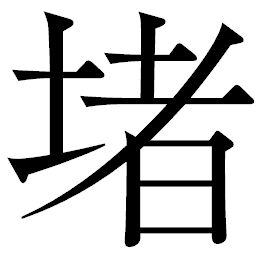
の表情を浮かべた。
ユキノはキララに駆け寄り、肩を抱くと店の上がり框
に腰かけさせた。隣に座ると、やわらかな動作でキララの顔を包み込むように胸に抱き寄せた。着物を通して伝わってくるユキノの落ち着いた鼓動は、自分を責め立ててやまないキララの心に安心を与えてくれた。
「あったかいでしょう」
「はい......。お母さんを、思い出します」
素直な言葉が出た。ユキノは目を細めて、キララの冷たい手を握った。戻ってきたのが一人だけだったことで、ユキノはすべて察した。
「彼を助けたかった。そんなふうに思ってない？」
「すべて、私の責任です」
「それはちょっと、思い上がりかなァ」
キララの硬質で思い詰めた物言いを、ユキノは軽くあしらった。
「彼は望んで刀を持った。ただそれだけ。村は守った。助けたい人は助けた。まだまだ気にかかることはあるけど、それは刀がいることじゃない。戦はもう終わったのでしょう？」
「ええ......」
「だったら、あなたが気に病むことなんかなァんにもない。もっと自分のために生きなきゃ」
楽しそうなユキノの物言いに、キララは顔を上げた。生
真
面
目
なその瞳に向かってユキノは大人の余裕をもった笑みをたたえ、続けた。
「だめだめ、そんな顔しちゃ。前にあなたの背中を流しながら言ったこと、覚えているかしら。恋をしなさいって、言ったわよね」
「ええ......」
ユキノの腕と微笑みを心地よく感じながら、キララは頷いた。
「彼かと思ってた。でも、違ったのね」
「ユキノさん、私は」
その瞬間、振り子が消えた光を取り戻した。強い、生命力さえ感じる暖かい光だ。
「ほら、振り子は正直ね」
キララは頰を赤らめて振り子を手で覆い隠した。熱をはらんだ振り子の光を、掌
に感じる。ユキノは身を起こしたキララを初々しく見つめていた。彼女の想い人が誰か察しながら、あえて名前を口にしない。
「おサムライを、好きになっちゃった。苦しくて、切なくて、でも好きって気持ちに正直でありたい。だからここまで来たのでしょう？」
「私は、ちっとも正直じゃありませんでした。ごめんなさい、サナエさんのことがあるのに、私......」
「今夜は眠りなさい。サナエさんのことはあたしと、店の者が面倒みるから」
「少し、お話するお時間をいいですか。ユキノさんに聞いてほしいことがたくさんあるんです」
正直になろうと思った。この人になら、自分の気持ちの何もかもを委
ねられる、と思った。素直に、ユキノの胸に甘えたい、と思った。
頷くユキノの微笑みは、厳しく自分を律しようとするキララの硬質な心をときほぐす。ユキノはキララの手をとって玄関に上げようとした。ふと人の気配に顔をふりあおぐと、玄関前の階段の上に、カンベエが悄
然
と立っていた。
キララは、気
取
られまいとして顔をそむけた。ユキノは握ったままのキララの手を、安心させるように強く握ってやった。
「おや、いやですよ、旦那。聞いてらしたんですか」
「カンベエ様、カツシロウ様が――」
「部屋に行け。急げ」
カンベエはキララの言葉を鋭く遮
った。キララの態度から、カツシロウが完全に去ってしまったことを察する。今はそれより、蛍屋の周囲から喧騒が引いたことのほうが気になった。カンベエの低い声音に、ユキノも警戒して階段を駆け上がった。
果たしてカンベエの警戒はあたっていた。サイボーグ用心棒たちによって巧みに店の周囲から人払いが行なわれていたのだ。
喧騒が引いたとき、店の裏手の掘割から右手に火炎放射器装備の甲
冑
を着込んだ男たちが水の中から次々に現れたのである。
カンベエは素早く裏手に回った。先に船着き場へ向かわせていたキクチヨが、夜陰に乗じた火炎放射男たちを見るなり、新調になった大
太
刀
を振りかざして外に飛び出した。
「出やがったな！ バレてんだよ、おめぇら！」
キクチヨは斬り込もうと踏み出した。だが火炎放射男の一人が彼をめがけてノズルを向けるやいなや、炎を放ったのだ。
「うわーっちっちっちっち！」
キクチヨは慌てて炎をよけて地面に滑りこんだ。炎は瞬発的に伸びたものの、キクチヨへの威
嚇
のためだけだったのかすぐにおさまる。
男たちは甲冑の下で勝ち誇ったような笑みを浮かべた。
「構え！」
男たちが一斉に火炎放射器を店に向けた。蛍屋に火を放とうというのだ。
裏手に、カンベエが飛び込んできた。と、同時に、癒しの里の店の屋根を蹴り伝い、蛍屋の上層階の屋根を強く蹴って跳躍してきた赤い影。キュウゾウだ。
正面からカンベエが、上からキュウゾウが、瞬く間に男たちの火炎放射器を叩き斬った。引き金に指をかけた手首ごと切断された男たちの絶叫が、岩壁に反響する。
火炎放射男たちは、赤い影に見覚えがあった。ウキョウに仕える彼らでも、アヤマロ付きのキュウゾウは何度も見ている。突如出現した二刀流に怯
んだ彼らは手首を失った激痛にのたうちながら、やぶれかぶれで左手で抜刀し、襲いかかってきた。激情にかられただけの棒振りではカンベエとキュウゾウの敵ではなく、男たちはサムライの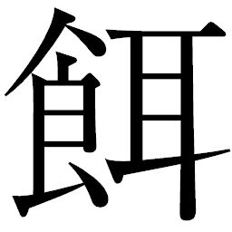
食
になるほかなかった。
「この野郎ォ！」
キクチヨはまだ息のある火炎放射男に大太刀をふりあげた。
「待て！」
カンベエはキクチヨを制すると、男に刀を突きつけた。男は顔を覆う鉄仮面を外し、蒼白な頰に血飛沫
の赤が鮮やかにはりついた素顔をさらした。
「都
の手の者か」
カンベエは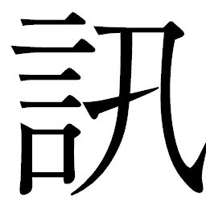
ねる。男は苦しげに喘ぎながらも、カンベエに対して血に染まった歯を見せて笑うだけだった。
「俺たちを斬っても、刺
客
はまだ、来る」
そう言って持っていた刀を首筋にあてると、頚動脈を一気に引き裂いた。血が噴出し、倒れていく男をカンベエもキュウゾウも、淡々と見つめるだけだった。
「どういうこったよ。もう都とオレたちは何の関わりもねえはずだぜ」
キクチヨが疑問を口にした。
「天
主
ならば、ある」
カンベエは蛍屋を振り返った。為
政
者
の座についた人間のやることはいつの世も変わらない。サナエと、身
籠
った子どもを狙ったのではないのか。
カンベエは懐
紙
を出して血
脂
を拭き取ると、刀を収めた。サナエを無事に村に送り届けても、決して安心できるものではない。ならば、仕事を完遂させるために斬るべきものは――。
不安そうな表情のキララとユキノが、外に出てきていた。
カンベエたちは彼女たちを振り返った。カンベエとキララの視線が交差した。キララを見据えたまま、カンベエはキュウゾウに言った。
「見届け役がいるはずだ」
刺客の首尾不首尾を、差し向けた者は知ろうとする。そのための斥
候
が近くにいるはずだ。刀は御
法
度
の癒しの里では、喧騒を遠ざける役目は、この不粋な甲冑の男たちでは出来るはずもない。頷いたキュウゾウは刀を収めると、走り出した。言外にカンベエがしのばせた一言を察していた。
――見つけ次第、斬れ。
長い一日が終わり、翌朝、ようやく明けようとする頃。
カブラギ屋の客間で悲鳴が上がった。取り乱した女の声に、アヤマロは飛び起きた。アヤマロと、都から解放されて連れてこられた天主お手付きの女とその子どもにあてがわれた部屋はかなり離れていたが、それでも悲痛な声はアヤマロの耳に十分に届いた。
「どなたか！ どなたか、医者を呼んでくださいまし！ 子どもが息をしていないのです！」
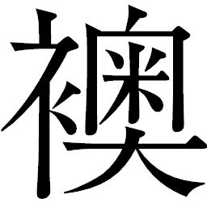
ごしに、慌ただしく使用人たちの走る音が聞こえる。アヤマロは福耳をふるわせて、漏れ聞こえてくる言葉を聞き逃すまいとした。理由はわからないが、本能が危機を告げている。足音が近づいてきた。アヤマロはどうしていいかわからず、布団を頭から被
ってしまった。闇の中で息を潜めていると、
が開閉する音が聞こえた。
「御
前
、ゴヘエです。他には誰もおりません」
入ってきたのは店の主
、ゴヘエだった。アヤマロは布団をはねのけた。ゴヘエは思い詰めたような表情で、瞳も精気を欠いていた。
「どうしたのじゃ、カブラギ屋。子どもが、との声が聞こえたが、あれは」
ゴヘエはいきなり、アヤマロの前で平伏した。
「手前は人殺しです、御前！ 子どもを手にかけた人でなしです！」
「まさか、あれはそちが」
「御前が夕
餉
を食べずに疲れを訴え、床につかれて、手前はどんなに安
したことでしょう」
アヤマロは暗
澹
たる気持ちになった。疲労と睡魔に襲われなければ、今ごろは自分も朝を迎えることはなかったのだ。
「では、夕餉に何やら一
服
盛ったと......、そうなのかえ、カブラギ屋」
顔を上げたゴヘエは頷いた。ついに本当のことを口にしながら、それまで蒼白だった顔がみるみるうちに真っ赤になってくる。子どもを殺したという罪悪感にとうとう堪
えかねたのか、目は充血し、頭に血がのぼって体が震えてくる。
「落ち着いてたも、カブラギ屋。誰の差し金じゃ。よもや、ウキョウというのではあるまいな」
「炯
眼
恐れ入ります、まさしく、若の御指示にございます。若は御
天
主
様
の地位をより盤
石
にせんとして、先代の御
子
すべてを亡きものと企てております」
ゴヘエは堪えに堪えていたものを一気に吐き出すように、ウキョウの謀
を話して聞かせた。アヤマロはため息をついた。出世と店の発展を棒に振る覚悟で、真相を教えてくれたゴヘエの気概に熱い気持ちが込み上げてくる。卒中でも起こしそうな赤い顔は、決断までの苦渋がいかに大きかったかをうかがわせた。
「カブラギ屋、そちとて余にそのようなことを打ち明けては無事ではすまされまい」
「いいのです、人として手前は過
っておりました。御前は一刻も早くお逃げ下さい。今なら、皆御天主様の御子に気取られて人目につきません。お急ぎを！」
アヤマロはゴヘエに手伝ってもらって着替えをすませると、突き出た腹を抱えるようにして部屋を出た。
ゴヘエの案内で裏木戸に来ると、アヤマロは誰にも気づかれずに抜け出ることが出来た。
「どうか、御無事で」ゴヘエはそう言い残し、木戸を閉じた。
これからゴヘエがどんな運命をたどるのか、アヤマロには想像もつかない。今はただ、逃げなければ、ウキョウの目のとどかない場所に行かなければという思いだけで、転びそうになりながらも走り出した。
冷えきった朝の空気が、体の動きを鈍らせる。店の裏路地を抜け出ようとしたところで、その背に不意に声をかけられた。
「御前。どこに行かれます」
アヤマロの背筋を、冷たい汗が流れ落ちた。サイボーグ用心棒の一人、ゴーグル男が立っていた。アヤマロは声を出そうとしたが、かすれるばかりだった。
「せっかくカブラギ屋が朝
餉
の支度を整えておりますのに。お戻りなされませ」
「いやじゃ、戻らん。余を殺すつもりであろう！」
ようやく出た声は裏返り、恐怖に体中震えていた。ゴーグル男はゆっくりとアヤマロに近づきながら、いつでも鉤
爪
を振り出せるようにしていた。
「来るな。来るな。来るでない！」
ゴーグル男は苛
立
たしそうに顔を歪
めた。刃物を使うな、とウキョウに言われているのだ。刃
傷
は事件になる。ましてここは虹雅峡、アヤマロが作りあげた場所だ。あくまでも事故、自然死、故意ではない死を演出しろとの命令だった。
こんな小男、一刀のもとに斬り捨てればスカッとするものを、とゴーグル男は歯
噛
みする。しかしまだ日も昇りきらぬ早朝。ゴーグル男は腹をくくった。不首尾に終わるよりは、アヤマロを亡きものにするほうがウキョウのためというものではないか。
カブラギ屋の塀の向こうでは、まだ泣き叫ぶ母親の絶叫がかすかに聞こえてくる。天主による身勝手な人工受精により産まされた子どもであっても、奥御殿で過ごした日々は母親としての愛情を育てるには十分だった。子どもを生きる支えに、奥御殿での日々を耐えてきた者もいるのだ。いま、悲嘆に暮れている女がまさにそうだった。同時刻、ウキョウの息のかかった他の御
店
でも、同様の悲劇が起こっていることであろう。
アヤマロは薄ら寒くなりながら、ウキョウに思い馳せた。化け物を、作ってしまった。その化け物の差し金で彼はまたしても窮地に追い込まれていた。死にたくはないが、ゴーグル男を見ては、とても逃げ切れるものではないと諦
めるしかなかった。
その場にしゃがみこんだアヤマロは諦めたように肩を落とし、目を閉じた。ついに鉤爪がふり出される渇いた音が聞こえてきた。
だが、一向に刃
は襲ってこない。それどころか、ゴーグル男のくぐもった声が耳に届いた。おそるおそる目を開けたアヤマロの目に飛び込んできたのは、口から血を滴
らせて倒れていくゴーグル男と、その背中に突き立てた刀を引き抜いたキュウゾウだった。
◎
都
は一つ目の村に達しようとしいていた。既に先発隊が都の来訪を村に告げており、村人たちは昨夜
から歓待の準備を慌ただしく行なっていた。村人と、ウキョウによって警護役に派遣された浪人たちが協力しての作業だ。彼らの息が合っているのは、カンナ村を手本にして作られたマニュアルのおかげだ。そして、実戦を既に経験してもいた。
いま、都は彼らの経験の残
滓
の上空を通過している。
破壊された雷
電
型や紅
蜘
蛛
型、鋼筒
がひしゃげたスクラップと化し、炎上のあとをとどめて真っ黒に煤
けていた。村人たちと浪人たちは野伏せりに勝ったのだ。
村を囲むように鉄柵が作られ、投石器がある。さすがに巨大弾道弾まではなかったが、応用したのか削った小振りな丸太を矢のように打ち出す装置まで急
拵
えながら用意されていた。
デッキに立ち、眼下の残骸を見下ろすウキョウは満足そうだ。蒔
いた種が着実に芽吹いているのが、目に見えてわかるのだ。
都は村の前で停泊した。ウキョウはサネオミとテッサイ、ヒョーゴを従えて地上に降りてきた。待ちかねたように、村
長
をはじめ村人たちと数人の浪人たちが地面に平伏した。
「照れ臭いよ、みんな顔を上げてよ」
気さくな態度で話すウキョウに、年老いた村長は頭を下げたまま言った。
「恐れ多いことですだ。御天主様自らこのようなところにお運びくださり、村の者一同、うれしく思うとります」
「だめだめ。そんなふうに自分たちを卑
下
しちゃだめだよねえ。ねえ、いま、野伏せりが壊れてるのを見てきたよ。あれはみんなが？」
ウキョウは平伏したままの村人と浪人たちを見渡して、言った。
「ははッ、まことそのとおりにございます。仕事をお与えくださいました御天主様の過分なお心遣いに沿うべく、我ら一
丸
となって野伏せりの撃退に相
努
めました。御天主様に御用意いただいた戦術指南書は実に素晴らしいものがありました。重ねて感謝申し上げます」
「おかげさまでわしら、安心して田
畑
のことだけ考えていけますだ。おありがとうございますだ」
「今まで大変だったね。百姓のみんながどんなに辛い思いをしてきたか、僕はわかってるつもりだよ。みんながこんなに苦しんでるのに、都は何も助けなかった。野伏せりの狼
藉
もそのまま。ひどいよねえ。僕から謝るよ」
ウキョウは生
真
面
目
に膝をつき、頭を下げた。浪人たちは既に虹雅峡で、ウキョウのこの相手を立てるさまを一度見ている。二度目も自然に膝をつくウキョウに、誠実さを見てとった。真
摯
な瞳の光が、彼らの推理を裏付けてもいた。驚いた村人たちは慌ててウキョウのそばに駆け寄った。
「もったいねえだよ、御天主様！」
「頭下げなきゃいけねえのは拙
者
らの方だ！」
地面に額
をつけたウキョウを前に、村人も浪人たちも、ウキョウ以上に地面に額をこすりつけ、はいつくばるような仕草を見せた。
テッサイは、巧みに百姓とサムライたちの心を自分の術中に仕向けていくウキョウの役者ぶりに舌を巻く思いだった。
ウキョウは顔を上げた。砂粒が額にはりついたままだ。サネオミが慌てて手
巾
を出したが、ウキョウは手振りで「いらない」と意思表示した。
「みんな、顔を上げてよ。これからは、都と僕がみんなを守っていくよ。まだまだ野伏せりの残党がいるかもしれないけど、力を合わせていけばきっと世の中を変えられる。いましばらく、辛抱してほしい」
守る、という言葉にウキョウはアクセントを置いた。それは浪人たちには魔法のように響き、反射的に顔を上げさせた。戦場では攻めるもの、守るものの二つだけ。主君が部下を守ると言ったら、それは鉄壁の自信と意欲を部下に与えることになる。瞳を輝かせる浪人たちを見て、ウキョウは安心させるように頷いてみせた。
「辛抱なら、わしらいつもしてるで。どうか気にしねえでくだせえ。せっかく来てくれたんだ、御天主様にどうしても持ってってもらいてぇもんがある。受け取ってくれるだか」
村長は顔をあげて振り返ると、若い衆に合図を送った。若い衆は大八車に米俵を六俵乗せて、運んできた。
「これは、野伏せりから守りぬいた今年の米だで。御天主様に、食べてほしいだ。どうか納めてくだせえ。野伏せりに持っていかれるのは我慢ならねえが、御天主様が持っていくなら、わしらちっとも惜しくねえ」
「そのお米はみんなで食べてよ。みんなが作ったお米じゃないか」
「そんなこと言わねえで、食ってくだせえ。みんなの願いだで」
村長が頭を下げると、村人たちも一斉に頭を下げた。
「うん、わかったよ。みんなの気持ちと思って、食べるよ。ありがとう」
ウキョウは自分の手の甲で額の砂粒をぬぐってみせた。涙を拭くような動作にも見えた。言葉が、仕草の一つ一つが、人々の心をウキョウへの忠心へと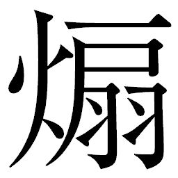
った。
訪問は短い間だった。ウキョウは今までの都の横暴をあげつらうと同時に、自分が都を変えていくと再三説いた。ただ一つ、肝心なことは言っていない――すなわち、都こそが野伏せりの本拠だったことを。
だが今、この村を襲う野伏せりはいない。彼ら自身がウキョウのやり方で撃退に成功した。ウキョウの言うことを聞いていれば幸せになれる。ウキョウを信じてもいいじゃないか。そんな気分が、百姓たちと浪人たちの中に芽生えていた。
かくて、遠ざかっていく都に向かって、百姓たちは手を合わせ、祈るように見送るのだった。
「御天主様てぇのは、生き神様だなや」
「戦が終わってやっと、忠義を尽くすに値する御方が現れてくれた」
百姓たちが手をすりあわせ、浪人たちが胸をそらして都を見送るさまを後ろで見ていた村長は、力なく呟
いた。
「なあに、誰が天主になろうが、わしらの暮らしは変わらん」
「村長殿、どういうことだ。あのように清
廉
な御
仁
は、たとえ大戦中でもおられなかった。世の中は変わる。我らのような者でも、胸を張って生きられる世になろう」
「雑草は、踏まれても踏まれても芽を出すようにできとる。わしらもおんなじじゃ。誰が天下に座ろうと、わしらのやることは変わらんのだ」
手を背中で組んで、村長は自分の家に向かって歩き出した。どんなに時代がうつろっていこうとも、百姓だけは土と共に生きてきた。サムライの世でもあろうと、アキンドの世であろうと、百姓がやることは変わらない。しかし村長の物言いには、悲観したものはなかった。
◎
蛍屋の朝は、昨夜までのさまざまな出来事をそこに集った者の心に深く刻みつけながらも、十分な睡眠をとったコマチと、これにつきあうキクチヨの、名付けて「コマチ体操」から始まった。適当な二人の掛け声が、裏の船着き場から賑
やかに聞こえてくる。
ひい、ふう、みい、よ。
ゴ、クロー、サン。
いち、いち、うる、さい。
オニー、サン。
ひい、ふう、みい、よ。
オツ、カレ、サン。
コマチのカウントと妙な合いの手を入れるキクチヨのバラバラな体操を、二階の窓からサナエがぼんやりと見つめていた。キララとミズキがサナエの世話についたが、サナエは相変わらず沈んだ顔のままだった。思い起こしているのはリキチなのか、天主なのか、キララもミズキも聞くのをためらっていた。
体操する凸凹コンビの側ではマサムネが歯磨きをしているところだった。ガラガラと音を立ててうがいをしていたマサムネは、式
杜
人
の洞窟側の水路を進んでくる一体の鋼筒
に気づき、驚きのあまりうがい水を飲み込んで激しく咳込んだ。
「キクの字、あれ見ろ、あれ！ ヤカンが来た！」
キクチヨとコマチも瞬時に緊迫した。
「また来やがったな！ しつこい野郎どもだぜ！」
キクチヨは地面に突き立てていた大太刀を引き抜くと、頭上で大きくブン回した。
「おっちゃま、がんばるです！」
「おう！」
コマチの声援を受けて、キクチヨは船着き場の板場の上にやってきた鋼筒に駆け出した。すると、鋼筒の蓋
が跳ね上がってヘイハチが顔を出した。
「やあ。おはようございます」
「あーっ!?
ハチの字!?
」
キクチヨはたたらを踏んだ。てるてる坊主と同じに穏やかな笑顔のヘイハチは、鋼筒の足を引き下ろして地面に立てると、自分は上部から飛び降りた。
「ごぶさたですね。式杜人の水路を使って近道してきたんですよ」
「式杜人に会ったのか」
「ええ。都で大変なことになっていたようですね」
「ああ、あれか。あれならいいんだ。もっとやべえことになっててよ」
「もっと？」
ヘイハチが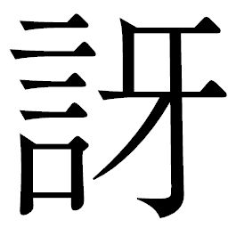
ったとき、水路をゆっくりと、一艘
の小型軍用船がやってきた。後部の主機関で舵取りをしているのはシチロージだ。刀を持ったリキチも一緒だ。シチロージは軽快な挨拶をした。
「おはようござァい」
「おお、桃タロ！」
「リキチじゃねえか！」
マサムネの声には困惑の色があった。もっとも心塞
ぐ瞬間が、すぐそこまで迫ってきたからだ。リキチと、サナエ。歯磨きどころではなくなり、マサムネは蛍屋の中に駆け戻った。カンベエに報せなくては。
「うわぁ、リキチ！ ヘイさんもシチさんも、みんな来たですか！」
弾むコマチの声に、二階にいたサナエは身を硬くした。一度は外から目をそらしながら、恐ろしいものを見るかのように表を見た。懐かしい顔がそこにあった。唇を固く結んだ実直な横顔は、昔と変わらない。気のいい青年の風貌も、別離を選んだときにくらべると精
悍
さを増しているかもしれない。かつて、その人と添いとげることを誓ったとき、心の底からうれしく思った。なのに今は、たとえようもない畏
怖
と不安で胸が張り裂けそうだ。
サナエは俯
き加減のリキチから目をそらせなくなった。
そしてその船着き場では、リキチが槍
を伸ばして板場に突き立て、ひらりと羽織を翻
しながら降り立ったところだ。
ちょうど裏木戸から、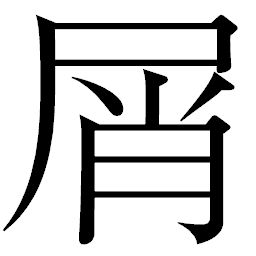
籠
を抱えたユキノが出てきたところだった。
「おや、まあ！」
その声に顔をあげたシチロージは、いなせに笑みを向けた。
「ただいま」
憎らしいほど心くすぐる言い方だった。二人の過ごした日常に、ユキノは一気に引き戻された。つい、駆け足になっていた。どんなに案じていたことか。再会できたら思いきり気のない素
振
りでもしてやろうと思っていたのに、顔を見ただけでもう、だめだった。彼の目の前に立つと、ユキノは弾んだ息を整える。シチロージはユキノの言葉を待っているようで、穏やかな笑みを浮かべていた。
離れていたのは、およそひと月ほどだっただろうか。ずいぶんと会っていなかった気がすると、シチロージはふと感慨にふけった。
「桃太郎さん。お土産は？」
息を整えたユキノは、やっと余裕を取り戻した。言葉を待つシチロージは、思わぬ切り返しに苦笑して額を叩いた。
「あいたた。こいつは失敬。とんと忘れておりましたァ。お詫びにこのゴミ、捨てましょう」
と、槍を腰に差すと、ユキノの抱えた
籠を取り上げた。
キクチヨはリキチの手をとって、板場に引き上げた。
「怪我はもういいのか」
「何とか、大丈夫だ」
リキチはキクチヨに笑いかけた。武骨なこの鉄仮面を見ると、安心した。今やキクチヨは、痛みを共有するかけがえのない友だ。
板場に立ったリキチは、バランスを崩してよろめきかけた。その拍子に、彼は蛍屋の二階を見上げてしまった。
リキチとサナエの目が合った。二人の息が止まった。
サナエは窓を閉めた。
名前を呼ぶのももどかしく、リキチはまろぶように駆け出して蛍屋の中に飛び込んでいった。マサムネに呼ばれてきたカンベエにすれ違ったのも気づかず、階段を駆け上がっていった。
サナエは
を閉じた。刹
那
、リキチが
の前に滑りこんできた。
「サナエ！ 開けてくれ、サナエ！」
リキチは指をかけて
を力づくで開けようとした。部屋の中からサナエがぴったりと閉じ合わせているとはいえ、野良仕事で培
った男の力では、かなうはずもなかった。
がわずかに開いた。その隙
間
からサナエの白い頰と長い髪と、澄んだ瞳が見えた。
「いや！」
ありったけの、引き裂くような声の拒絶だった。
リキチは虚を突かれたように力を抜いた。同時に、
はぴしゃりと音を立てて再び閉じた。夢にまで見た再会が、こんなかたちだったことでリキチは肩を落とした。
「何があった、サナエ。俺だよ、リキチだ。ここ、開けてくれねえか」
「出来ないんです。ごめんなさい、私はもう、リキチさんの女房には戻れないの」
「戻れねぇって、何言ってるだ。無事なんだろ、一緒に帰ろ。村さ帰ろ」
リキチは混乱した。サナエの喋り方に奇異なものを感じた。キララのように丁寧で固いこの喋り方は、なんだ。自分が惚れたサナエは、シノやオカラのように百姓の言葉遣いだったはずなのに。
「きっとリキチさんにはわからない。みんなおサムライが悪いの。御天主様はおサムライがどんなにひどいか、わたくしに教えてくださったのです。あの方は慰めが欲しかったのです。わたくしなら、癒してさしあげられたのに。死ぬことも考えました、御天主様のおそばにいこうと。でも、わたくしにはあの方から授かった大切なややがいます。わたくしは、この子を守っていかなくては」
そこまでサナエが言ったとき、リキチはとうとう思いあまって
を思いきり開けた。サナエの大きなお腹を見たリキチの顔から、色が消えた。言葉が出なかった。
立っていることが出来ず、リキチはその場にがっくりと膝をついた。信じることが出来なかった。天主という名はここに来る途中で式杜人から聞いていた。ではその〝やや〟とは、天主の子なのか――。
サナエは顔を覆って泣き崩れた。リキチにこの姿を見られたからではなかった。天主への想いを言葉にしているうちに感極まってしまったのだ。
リキチには理解できなかった。サムライが悪いとはどういうことだ。感謝こそすれ、なぜサムライを否定する。リキチは必死に、懐
からサナエの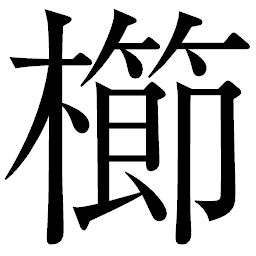
をとりだした。
「これ、覚えてるか」
サナエは手をおろし、弱々しく光る目で
を見た。表情は動かなかったが、小さく頷いた。
「もう一度、さしてくれ」
サナエは首を横に、強く振った。
「わたくしは、御天主様とともにあるのです」
「いーや、俺の女房だ！ お前が何言おうが、どんなことになろうが、俺は連れて帰る！」
血を吐くように言い放つと、力を使い果たしたように床に手をついた。サナエを安心させたい、その涙を受けとめたい、それが亭主の務めだと、自分に必死に言い聞かせる。激しく息をつきながら、リキチは搾
り出すように声を出した。だが、サナエの顔をどうしても見られなかった。そこまでの踏
切
りがつかなかった。それでもサナエを安心させたい一心で、言わずにはいられなかった。
「そのややこ、もうすぐ、産まれるんだろ。俺とお前、二人で育てよう。ててなしごには出来ねえ。俺たちの子に――」
悲嘆が、言葉を最後まで発することをとどまらせた。涙で声が詰まって嗚
咽
をこらえるばかりとなった。サナエも顔を覆ったまま動かない。
集まったカンベエたちは、誰一人リキチとサナエに声をかけられなかった。
救出してなお、百姓たちの眠れぬ夜は続いていたのだ。
リキチをキクチヨとマサムネに任せ、カンベエはユキノの用意してくれた座敷でシチロージとヘイハチに別れてからのことを話して聞かせた。一杯の白い飯からはじまった戦は、いまだ終わりを見せない。話を聞き終えたシチロージは、最後に一言、呟
いた。
「こんなとき、ゴロさんにいてほしかったですな」
ヘイハチも同じ思いだった。ゴロベエなら笑い飛ばしてくれたに違いない。
「鋼筒の調子を見てきます」
何かしていないと堪えられなかった。腰を上げたヘイハチは裏手に停めたままの鋼筒の手入れに出ていった。
シチロージはカンベエの湯飲みに茶を注ぎながら、言った。
「苦しいですね。本当に、苦しい」
「あの驚きは、二度と忘れぬ」
カンベエは奥御殿で初めて出会ったサナエの瞳を思い出していた。
「カンベエ様なら、たとえ驚かれようともすぐに活路を見いだすものと思っていましたが」
「斬れなかったのだ。わしはあの目を、恐れた」
「リキチのことを考えたのでは」
「未熟なことよ」
頷いたカンベエは、目を閉じた。シチロージもため息まじりに、窓の外を見上げた。癒しの里から見上げる空は、あまりにも遠く感じられた。
「宇
宙
が懐かしいですな。あの頃は、刀がすべて。斬れぬものは何もなかった。なんて、昔話をはじめちゃあ、トシとった証拠ですかね」
無理に軽く言ってみせるシチロージの気遣いに、カンベエは苦笑いで応じた。
シチロージは居住まいを正すと、言った。
「カンベエ様には謝らなければ」
「おぬしがここに来たということは、村は安泰なのであろう？ 謝ることはない。感謝すべきは儂
の方だ」
「村はほぼ元どおりです。村の衆もずいぶんとよくやってくれています。おっつけ心構えも出来てくるでしょう」
カンベエは湯飲みに手を伸ばした。村の衆は野伏せりに勝った喜びと、元の生活を営めることで、ひとまわり成長したことだろう。そう、彼らには帰る場所がある。しかしカツシロウは......。
◎
夜明け前に虹雅峡の上層で買い求めた早
亀
で、カツシロウはあてのない旅に出た。
戦はどこにでもある、とキララの前で見栄を切ってはみたものの、広大な砂漠に出たところで自分があまりにも考えなしに行動していることに気づいた。オアシスを見つけると、夜通し走らせていた早亀を休ませた。
岩場に腰かけて地図を広げる。目指しているのは、虹雅峡に匹敵する規模の街である。そこで情報を集めるつもりだった。空腹を感じて、出発前に買った握り飯をとりだした。包みを開いて手にした白い飯を見て、カツシロウはふと、動きが止まった。
米を見るとカンナ村を思い出す。この米は、ウキョウが振る舞った米で作ったものだ、と弁当屋の主は言っていた。ウキョウの、というところが癪
ではあったが、食わねば生きていけない。米からは逃げられない――カンベエとは袂
を分かつと、決めたとしても。
――師事する御方を、誤った。
そう口の中で呟いたとき、目の前の小さな池に、波紋が生じた。
目を凝
らすと波紋の上に黒い影が浮かび上がってきた。やがて影が見覚えのある、肩幅の広い男の姿へと変貌した。
ゴロベエだった。『命売ります』の幟
を背負っていた。あの頰の傷を不敵に歪めてカツシロウを見据えるなり、懐かしい言い回しで呼びかけてきた。
「そこ！ そこな御
仁
！」
「ゴロベエ殿......」
カツシロウは立ち上がっていた。ゴロベエは波紋の上に浮かぶようにして立っているというのに、幻とは思えなかった。
「若いの。暗い。くーらーいーぞ！」
初めて会ったときと同じだ。からかうような、叱
咤
するような、目の覚めるような大声でゴロベエはカツシロウの前へとやってくる。
「何用、ですか」
そんなことを言いたいわけではなかったのに、なぜかカツシロウの声には険があった。
「御冗談を。こちらこそ聞きたい。どこへ行くのだ」
「戦のあるところなら、どこへでも」
カツシロウの声には硬質な響きがあった。ゴロベエは顎
に手をかけて、ニヤリと笑ってみせた。見透かしているかのようだ。
「ゴロベエ殿、なぜ死んだ。あなたが亡くなってからというもの、私はずっと、あなたが死んだ意味というものを考えている。カンナ村での戦いは、私たちにとって」
「青いなァ、おぬしは。意味なんぞないわ」
幻は生前と同様の余裕を声ににじませていた。昂っていた気持ちに水を差されたようで、カツシロウは鼻白んだ。
「戦で兵士が死ぬ。当たり前のことではないか」
ゴロベエはそこで一転、声を低く重く、挑むようにカツシロウの心に突き刺した。
「今のおぬしでは、野伏せりに負けるぞ」
一番、言われなくない言葉だった。死した者に言われたくはない。とても冷静に聞けるものではなく、カツシロウは反射的に抜刀していた。
「私は、負けはせぬ！」
幻に向かってカツシロウは池に踏み込み、斬りつけた。ゴロベエはゆっくりと、水に溶け込むように、霧のように、カツシロウの視界から消えていく。
そこで、意識が変わった。いつしか岩によりかかってうたたねをしていたようで、日はずいぶんと高く昇っていた。思えばこの数日、ろくに眠っていなかった。握り飯を食べて腹が満たされて、意識が緩
んでしまったのだろう。早亀はおとなしく草を食
んでいた。
顔を上げたカツシロウは、幻と交わした会話を反
芻
した。ゴロベエの問いかけは、カツシロウがずっと抱き続けてきた思いだ。敵が死ぬように味方も死ぬ。その現実を受け入れきれなかった。必死に意味を探していたが、行き着く答えは一つだけ。戦だからだという以外にない。あの幻は、自分の迷いが呼び出したのか。
池の水で顔を洗い、気をひきしめるように両頰を軽く叩いた。キララに打たれた頰の
きは既に消えていた。
きは既に消えていた。 早亀の手綱に手をかけ、鐙
に足をかけた。眩
しく太陽を仰ぎ見て、彼は行く先を決めた。戦に発
つ前に、自分の中で一つのけじめをつけるために。
◎
日中の蛍屋は料理の仕込みにかかり、「支
度
中
」の札が玄関の格子戸にかかっている。水路から吹き上げてくる風に、その木札が揺れていた。
静かに歩いてきたキュウゾウは暖
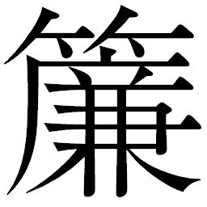
をくぐり、格子戸を開けた。のそのそと子犬のようについてくるのはアヤマロだ。彼はすっかり怯え切っていた。ここに降りてくるまでに、キュウゾウが斬ったサイボーグ用心棒は三人に及んだ。キュウゾウの淡々とした仕事ぶりに戦慄をおぼえると同時に、自分の知らないうちに虹雅峡がウキョウのものにとってかわられていた現実をまざまざと見せつけられた。
キュウゾウはアヤマロに何一つ声をかけることなく、まるで害虫退治をしているように階層都市内や蛍屋を監視するサイボーグ用心棒を見つけ出しては暗殺剣をふるった。行き場のなくなったアヤマロには、キュウゾウだけが頼りだった。キュウゾウが蛍屋に入ると、アヤマロも入ろうとする。
キュウゾウはアヤマロなど見えていないかのように格子戸を閉めた。目の前で閉められたアヤマロは、後方を確認するように何度も振り返ってからおずおずと戸を開けた。
ちょうど玄関に姿を見せたのは蛍屋の女中だった。カンベエたちですっかり慣れているのか、幽玄に立つキュウゾウを見て「お連れ様は二階に」と言い添え、案内を買って出たものの、入ってきたアヤマロを見て怪
な顔をした。
「こちらは？」
虹雅峡ではその名を知られたアヤマロだが、顔を知る者はほとんどいない。女中の一言はアヤマロの虚栄心に冷水を浴びせたようだ。
キュウゾウは何も言わず、自分をどう説明しようかとアヤマロが困っていると、ぶつぶつと小言を言いながら膳を運んできたキクチヨが通りかかった。どうやらコマチにいいように使われて、食後の膳を下げろとでも言われたらしい。キクチヨはアヤマロを見て声を上げた。
「おわっ!?
米
蔵
のオッサンじゃねえか！ よく来たな、まあ上がれや！」
キクチヨを見たアヤマロは、「あっ！」と絶句して、その場に固まった。ようやく話のわかる男が現れたかと思えば、この機械のサムライは――。
逃げろ、と言ってくれたテッサイが教えてくれていた。ウキョウの秘められた過去の顔と、同じ頃に機械に姿を変えた男のことを。いま自分の目の前にいるキクチヨこそ、そうだと――。
空腹を訴えるアヤマロに、ユキノは「朝の残り物でよければ」と食事を用意してやった。上品にちまちまと、
で少量つまんでは手を添えて口に運ぶアヤマロに、キクチヨが真っ先にキレた。
で少量つまんでは手を添えて口に運ぶアヤマロに、キクチヨが真っ先にキレた。「いつもそんなもったりした食い方なのかよ？ そんなんじゃ朝飯食ってるうちに昼飯時になっちまうだろ。だからそんなにブクブク太ってンだ。ちったぁ百姓を見習えや！」
「たわけ。腹も空かぬうちに次の膳を食すことになる余のほうこそ、みじめなものなのじゃ」
「うるせーこの野郎！」
キクチヨはいきなり膳を取り上げた。
を小鉢に差し出そうとしたアヤマロは、噴気するキクチヨを上目遣いに見て、恨めしそうに下唇を突き出した。
を小鉢に差し出そうとしたアヤマロは、噴気するキクチヨを上目遣いに見て、恨めしそうに下唇を突き出した。「よせ、キクチヨ」
カンベエはキクチヨを抑え、アヤマロの前に座った。
シチロージとヘイハチ、キュウゾウまでもこの座敷に集まっていた。彼らサムライたちにとってアヤマロはまたとない情報源であった。キュウゾウが斬り捨てたサイボーグ用心棒たちは結局のところウキョウの野心の末端にすぎず、与えられた命令をこなす以外の情報をもたない。しかし都に滞在し、ウキョウを養子に迎えたアヤマロは、蛍屋に刺客を差し向けたウキョウの思考と背景をもっともよく知る者に違いない、と読んだのだ。
「なにをしやる。行儀の悪いことぞえ。育ちが出るところなど、ウキョウと大違いじゃ」
アヤマロのあからさまに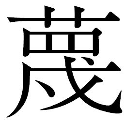
んだ物言いと、それが意味するものに、そこにいた全員が異様な引っ掛かりを覚えてアヤマロを注視した。キクチヨも膳を持ち上げたままで、首を捻った。
「あぁ？ どういうこった。育ちが出るたぁなんのこったよ」
「気づいていないのかえ」
「なにを？」
キクチヨはアヤマロの前に座り直した。
「話せよ。話さねぇと、食わせねぇぞ」
カンベエたちの無言の圧力も、アヤマロをすくませた。よもやこんな大
事
な空気を醸し出すとは夢にも思わなかったのだ。
「そちは、元は百姓と聞いた。ウキョウも同じじゃ」
「あいつが百姓!?
おいおいおいおい、何言ってんだ!?
オレはあんな奴知らねぇぜ。あいつのどこが百姓だってんだ！」
キクチヨの驚きは、カンベエたちの驚きでもあった。
「そちは機械になったが、ウキョウは、顔を作りかえてアキンドになった。同じ医者にかかってのう。ウキョウはそちのことを覚えておった。だから、元の姿を暴かれるのを恐れ、しつこく消すようにはかっておったのじゃ」
「同じ医者......、泥棒横丁のコウアンにか」
その場にいたマサムネが口を挟んだ。思わぬ接点に、呆
れたように肩を落とした。
「オレ様はあいつのことなんざ知らねぇぜ」
「スエキチ、という名前だったそうじゃ」
「スエキチ......スエキチなあ......、あぁ！ いたいた、そんな奴！ 目立たねぇ地味な奴だった！ あいつかぁ！」
キクチヨは思い当たった。改造前に、この顔で飯を食うのも最後だな、と手術を控えた他の連中と一緒に飯を食い、酒を飲んだ。数人いた待機中の客の中で、百姓の出は自分と、スエキチだけだった。サムライになると息巻くキクチヨにくらべ、淡々と、機械になるのは怖い、でも別人になって出世する、だから顔を変えるだけだと言っていた。互いに、もう百姓は二度とごめんだと言い合った。
「百姓なんか、大っ嫌いだって言ってた。それでウマがあったんだ。そうかぁ......、あいつがなぁ......」
あぐらをかいたキクチヨは、懐かしむように虚空を見上げていた。
「この御時世でいっちゃあ、ウキョウのほうが一枚上手だったな」
マサムネが苦笑して言った。
「フン、ほっとけや。オレ様は後悔してねぇぜ。だいたいスエキチの野郎も肝っ玉がちっちぇじゃねえか。オレ様はあいつのことなんざちっとも気にしてねぇのに。だがよ、来るなら来いってンだ。全部叩っ斬ってやるぜ！」
激しい口調ながら、キクチヨは何かを思っているふうだった。元百姓の、二つの生き方。カンベエはキクチヨの大きな背中を見ながら、数奇な再会を果たした二人を思う。それぞれが、長い戦と、アキンドの時代への変貌のさなかの落とし子のようなものではないか。
「あのな。言っとくが百姓をばかにすンなよ、アキンドのオッサンよぉ！」
キクチヨはアヤマロの膳に残っていたものを皿ごとばりばりと食べ始めた。まだ空腹を抱えたアヤマロは、「あ、あ、あ」と哀れきわまりない声を出し、
を空しく宙に向けて動かしていた。
を空しく宙に向けて動かしていた。 ちょうどそこに、キララが入ってきた。
「キララ殿、サナエ殿とリキチの様子は」
「いまはミズキさんとコマチが......」
キララがカンベエに返答するより先に、アヤマロが反応した。
「サナエとは、御天主様のややこを宿した、あの百姓の娘か!?
生きておるのか」
カンベエの鋭い視線は、アヤマロを竦
ませた。天覧の間で先代天主に刃傷に及んだ瞬間のあの瞳だ。呑まれるように、アヤマロの口をついて出たのはゴヘエから聞いた話と、自分もまた殺されかけたという事実だった。
過去にふれるキクチヨを狙い続け、いままた自分の座をおびやかすかもしれないという理由だけで子どもを殺すウキョウの権力への執念に、誰もが震えた。先代天主の崩
御
や過去にまつわる数々の屍
の数々も、テッサイはウキョウがかかわっているのではないかと、アヤマロに告げていた。
ずっとシチロージの隣で話を聞いていたユキノが、ふと思い出して、言った。
「昨夜
のお客さんたちが言ってたこととまるで反対だねえ。みんな、ウキョウは天主になって人が変わった、民
草
のことを考えはじめたんだと、それはもう手放しで誉めそやしていたけどねえ」
蛍屋の客たちには、女たちを攫
っていた先代の悪行を暴きたてて公表し、女たちや米を解放したウキョウの評価はかつてのバカ殿といわれたころとは雲
泥
の差だった。姿を変え、天主の座に昇りつめ、アキンドもサムライも百姓も手玉にとって、彼は何を目指そうというのか。
「商いは表と裏を使いわけ、嘘とまことを読み合うものじゃ」
「顔を変えて出世目指して、今やアキンドの頂点か。人の気持ちつかんで名君を気取っちゃいるが、天主になるまで何人殺してきたんだか。とんでもない嘘つきを作りあげたもんだね。差配様」
皮肉めいたマサムネの言い回しに乗る形で、キクチヨも噴気した。
「嘘つきならオレも知ってるぜ。勝つためだったら平気で一芝居打てる。だから強えぇ！ 要はだましたモン勝ちってことだよな。なぁ、オッサン！」
キララは思い当たった。思えばカンベエは、出会ったはじめから嘘ばかりついてきている。押し込みを斬る前にとんでもないことを言ってキクチヨの首を刎
ね、強襲揚陸艦に乗り込むときも米俵に潜み、都にキュウゾウとともに乗り込んだ際も自ら勅
使
殺しの下手人を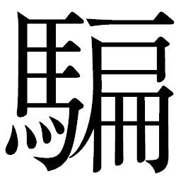
り、斬首の場においてもはじめから死ぬ気はなく、平気で反撃に転じてみせた。
この人はいつも、嘘ばかり。優しい、と言われながらも、本当の心はどこにあるのだろう――キララの視線に気づいたカンベエは鬚から指を放し、見つめ返した。キララは目を伏せて、カンベエから視線をそらし、見透かされないように振り子を手で覆った。彼女のその仕草の一つ一つをユキノが見つめている。
「いっそ公表したらどうですか。瓦
版
にでも書けばみんなの目にふれますよ」
ヘイハチが提案したが、アヤマロが言下に否定した。
「無駄じゃ。金の力を甘く見ないほうがよいぞえ」
「揉み消されるということですか」
「あるいは、妄
言
と言われるだけじゃ。よいか、どこもかしこも、ウキョウの息がかかっておる。そちたちが出来ることは、ウキョウの目の届かぬよそに逃げることだけじゃ。余はそうするつもりじゃ。せっかく助かったこの命、ありがたく長生きさせてもらうつもりじゃ」
カンベエは腰に刀を差しながら、立ち上がった。
「出
立
の用意だ。カンナ村に向かう」
「承知」
間髪入れず、シチロージが頷いた。ユキノがその手を強く握り、彼を見つめた。
シチロージはユキノを振り返り、安心させるように彼女の手に、自分の手を重ねると、腰を上げた。
「すぐに戻るさ」
ユキノは何も言わず、伏し目がちに頷いた。キララはそんな彼女の細い肩が強
張
っていることに気づいた。
「ややこのことはどうするつもりじゃ。ウキョウは諦めぬぞえ」
「都を斬る」
こともなげにカンベエは言い切った。昨夜
刺客が現れたときから決断していたことだった。慌てたのはアヤマロだ。厳然としたカンベエを見上げ、震えるように反論した。
「恐ろしいことを言うでない！ 都の仕組みを崩す気かえ！」
「米を米とも思わねぇ仕組みだろ。ふざけんじゃねえよッ！」
キクチヨが激
昂
する。米蔵で見た大量の米を思い出すと、いまでも胸が悪くなる。
「じゃが、ウキョウの企
みによっては、そちたちは逆
賊
と呼ばれることになるぞえ」
逆賊という言葉に、キララの表情が固まる。まさしくそのとおりだ。為政者にのぼりつめたウキョウに襲いかかるということは、真実はどうあれ世間からは体制への反逆と見られるだけではないか。不快な胸騒ぎがキララの心をかき乱していた。だが、カンベエはまったく意に介さぬようで、淡々とアヤマロに言ってのけた。
「無用な諍
いを起こすよりはよかろう」
「いったいそちたちに何の得がある。進んで、泥をかぶるつもりなのかえ」
カンベエはただ、微笑んだだけだった。相手を畏
怖
させる幽鬼の瞳に、アヤマロは戦
慄
をおぼえた。なんだ、この笑顔は――。
カンベエはリキチの苦しみを終わらせたいだけだった。公表することは得策ではない。人心をいたずらに惑わせるだけだ。たとえ逆賊と呼ばれようとも、戦が終わり表向きは安
寧
を保っているこの世界に、波風を立てる必要がどこにある。町人に、百姓に、笑みが戻っているではないか。人々のこんな顔は大戦のころにはなかった。
ヘイハチが、キュウゾウが、カンベエとキクチヨに続いて立ち上がった。
「行きますかね」
カラリと言って、ヘイハチは大きく伸びをした。
キュウゾウはカンベエを見据え、言った。
「まだ、仕事が残っていると」
「待たせるな。すまぬ」
返答したカンベエは「もう一働き、頼む」と言わんばかりにキュウゾウを見た。
座ったままのアヤマロはサムライたちを見上げながら、逆賊と呼ばれようとも、〝仕事〟と言ってのける男たちに、相容れないものを感じていた。まさしく、ここに集っているのはサムライだと、ただ無言で恐れるばかりだった。
第二十六章 謀る！
奇岩立ち並ぶ荒涼とした砂漠に、雷
電
型の右腕が落下した。その右腕がつい今し方までつながっていた雷電を、タノモが支えて上空を飛んでいく。タノモ自身も体中に傷を負っていた。僚友たる雷電の体には大木を削った杭が刺さり、剥
きだしの内部機構は火花が散っていた。
「もうよい、タノモ。これまでだ。捨ててくれ」
「何を言う。都
はもうすぐだ。気をしっかり持て！」
二人の浮遊機関の噴射は頼りなく、白煙が山なりの軌跡を描いていた。
やがて二人の視界の先、砂漠の稜線の向こうに都が見えてきた。
タノモの接近を都から見たウキョウの表情から、いつもの微笑みが消えた。
最近、テッサイはウキョウの顔から笑
みが消えるのを何度か見ている。口調はいつもどおりながら、本気で楽しいときには笑いが消えるような気がする。今もタノモたちを見て、低い声で言ったのである。
「よいねえ。いい気味だねえ」
都のデッキにまで出て、ウキョウはタノモと雷電を出迎えた。御
典
医
を待機させて、いつでも手当て出来る状態にしている。浮遊状態で煙を噴く雷電と、必死にそれを支えるタノモの姿は戦場での傷ついた兵士そのものだ。
「タノモ。ごくろうさん。すぐに手当てしてあげるからね」
「手当てはいりませぬ。ぜひ聞いていただきたいことがございます！」
雷電が苦しげに言う。タノモは雷電を抑えつけた。
「待て、おぬしの手当てが先だ」
「いや、俺は御
天
主
様
にこの姿を見せるためにここまで来たのだ。この傷、まぎれもない反逆の証し！ 我が体に刻んだ傷を見ての、御天主様のお言葉を賜
りたい！」
「なんだか物
騒
だねえ。いいよ、聞かせてよ」
ウキョウは微笑みをたたえてタノモを見た。息巻く雷電に比べれば、タノモはまだ冷静に話が出来そうだ。だが、彼らが何を言わんとしているのか、何のために傷ついた体でここまで来たのか、ウキョウは既に察しがついていた。テッサイも同様だ。彼はタノモをとても見ていられず、苦虫を噛み潰したような顔を伏せていた。
雷電を支えたまま、タノモは話し出した。
「かたじけのうございます。我ら、百姓と浪人による攻撃を受けてこの有り様。浪人どもはこう言ったのです。村を守れという使命を、御天主様に賜ったと！」
「ふーん？」
ウキョウは顔色一つ変えない。一緒にいたサネオミもまったく動じていなかった。
「御天主様は我らに、村へ向かうよう御下命なさいました。にもかかわらずこのような事態、果たしてあの下郎どもは嘘をついていると？ それとも、まこと御天主様よりかくのごとき使命を拝
領
仕
ったのか。明らかにしていただきたい！」
「どっちだと思う」
「どうかお答えを！ 今こうしている間にも、我らの同胞は下郎どもになぶり殺しにされているやもしれませぬ！」
「それでいいんだよ」
「どういうことでございますか！」
「なんとおっしゃられた！」
タノモも雷電も同時に叫び、言葉が続かなかった。
「君たちにも、百姓たちにも浪人たちにも、僕は命じたんだ。誰一人嘘は言ってないんだよねえ」
「なぜでございますか」
「これからのためさ。僕が天下をとった世の中のためだよ。百姓も、戦
が終わってヒネた浪人どもも、野伏せりのみんなを殺すことで僕に忠誠を誓ってくれている。サムライにとって主君のために死ぬのは名誉なことじゃないの？」
「無
体
な！ 断じて許すことなど、出来ませぬ！」
タノモは斬
艦
刀
を起動させ、振り上げた。ウキョウは逃げる気配がない。
しかし斬艦刀がウキョウの頭上に迫った瞬間、一陣の銀光がタノモの腕を斬りとばした。斬艦刀もろとも、タノモの腕はふっとんで眼下の砂漠に突き立った。天守閣から跳躍したヒョーゴの剣がタノモを斬撃したのだ。ヒョーゴはデッキに降り立つと肩越しにタノモを振り返った。腕を失った反動で、タノモは大きく揺らいだ。その体を、傷ついた雷電も支え切れない。
「何をする！ おぬしとてサムライ、身
共
の憤激をわかっているはず！」
ヒョーゴは眼鏡の奥で哀
しげに目を伏せた。タノモを斬ってウキョウを守ると同時に、自分の心をも殺した。こけた頰がさらに不
穏
に翳
る。自分に苛
立
っていた。生きながらえて、やっていることはこんなことか。
タノモは激
昂
し、肩のポッドを開いて鉄砲を抜いた。ヒョーゴが刀を構えなおし、踏み込んだものの瞬
き一つの差で、装甲の下に収納されていた砲身から閃光が迸
った。音もなくハッチが開き、主砲の砲身が迫り出していたのだ。主砲の光
撃
に、タノモも雷電もひとたまりもなかった。
直撃だ。声を上げる間もなく、タノモと雷電は粉砕されて墜落していった。引き裂かれ煤
けた装甲の破片がデッキにまで落ちてくる。テッサイはウキョウを守り、破片を斬り落とした。
「うわぁ、すごいねぇ。これが都の主砲なんだ」
「出過ぎた真
似
をいたしました」
サネオミが恭
しく頭を下げる一方で、ヒョーゴとテッサイは互いに無言で虚
しく視線を交わすだけだった。止められない歯
痒
さを抱えながらもテッサイは忠臣に徹して言った。
「御天主様、今後もこのようなことが起こる可能性はあります。いかがいたします」
「食えない奴らだねえ、サムライは」
ウキョウは髪を指でいじりながら、既に後方に流れているタノモたちの残骸が噴きあげる黒煙に目をやった。
「野伏せりを、まことの機械にしてしまってはいかがあらしゃりまするや」
サネオミが淡々と言い放った。驚いたのはテッサイとヒョーゴだ。都の格納庫には、別命あるまで艦内で待機している野伏せりたちもいる。機械と化した彼らは冬眠状態にあった。ウキョウは彼らを、百姓や浪人たちのガス抜きに使おうと残してもいた。かつてサネオミに艦内を案内してもらったときに見た、冬眠中の機械の群れを思いだしてウキョウは冷めた笑みを見せた。
「まことの機械かあ。それ、よいねえ。でもそんなこと出来るの？」
ウキョウは控えた御典医を振り返った。
「体内の脳に手を加えるだけです。それだけで魂は消え、文字どおり機械のサムライになりまする」
「やっちゃって。テッサイ、ヒョーゴ、あと片づけよろしくね」
ウキョウは楽しそうに言うと、天守閣に向かって歩き出した。サネオミと御典医が続く。
テッサイとヒョーゴは細かな破片の散らばるデッキ上に二人、佇
んでいた。あと始末に出てきた近衛兵たちに指示をした二人の顔は冴えない。
「俺たちは、何をやっているのだろうな」
「長い目で見れば、若がしていることはまぎれもない改革だ。百姓と浪人どもの意識を変え、皆、都の一員と思わせている。今まで見てきた農村の反応はすべて若を支持するものだったではないか。こうして都と百姓が交流し、貧しさがなくなるのならば、それは歓迎すべきことではないのか」
「本気でそんなことを思っているのか？ 意識は変われど、百姓は田圃
に縛りつけられたままだ。浪人どもも街場からいなくなった。虹
雅
峡
には、もはやアキンドしかいない。若はもしや、選民しているのではあるまいか。若は他の街でも同じことをやるのではないか？ 都一つの天
主
におさまることが、若の狙いではあるまい。もっと広い世界をも、若は手に入れようとしているのではないのか」
ヒョーゴはタノモが噴き上げる黒煙から目を離さず、言った。
テッサイとて気持ちは同じだ。だが仕えると決めた。ウキョウがどこに向かっているのか、見届けるのは自分しかいないのだ。
◎
出された昼食に、リキチはほとんど手をつけず部屋の隅で膝を抱えているばかりだった。その手にはサナエの
が握られたままだ。村にいた頃、あんなに気にいっていた
をつけてくれないサナエに、リキチは胸をしめつけられる思いだった。
膳を下げに来たキララは、手つかずの食事を見て何か慰めの言葉を言おうとしたが、思いとどまった。どんな言葉も、虚しいだけに思えた。
「もう半
時
もしたら、出発するそうです。お食事、少しは食べておいたほうが」
「水
分
り様ぁ。俺、やっぱりだめだ」
を見つめたまま、リキチは吐き捨てるように言った。
立ち上がろうと腰を浮かせたキララは、座り直してリキチを見据えた。自分が出来ることは、話を聞いてやることぐらいだった。リキチを気にするユキノも、シチロージを伴ってやってきていた。唐突に言い放った「だめだ」の言葉に、困惑して部屋に入ってきた。
リキチはシチロージたちが入ってきたことにも気づかず、ぼそぼそと消え入りそうな声で続けた。
「さっき、サナエがどうしてるか見てきた。都で一緒だったミズキって子と、コマチ坊と、話してた。普通に、話してたよ。でもな。でも、おなかがでっかいんだよ。ややこがいるんだよ！ サナエにはあんなこと言ったけんど、俺、やっぱり物分かりのいい男にはなれねえだよ。こんなんじゃあ、だめだな、俺。サナエのこと、守ってやれねえ」
自分を抑えるように声を絞り出すリキチを見ているのは、辛かった。無力感にかられて唇を噛むキララにかわって、そっと彼女の隣に腰をおろしたユキノがいたわるように声をかけた。
「リキチさんはだめな人なんかじゃないよ。大事な人を壊されて、普通でいられるほうがおかしいもの。リキチさん、泣いていいんだよ。怒っていいんだよ。これからはずっと一緒だもの、時間かけてサナエさんの気持ちに向き合っていけばいいよ」
「もうすぐややが産まれるだ。やや見たら、いやでも天
主
のこと思いだしちまうだよ！」
感情を剥き出しにして顔を上げたリキチを前に、さすがにユキノも口を噤
んだ。
「天主は自分をさらった張本人だ。なんで、ホレたりするだよ。都の暮らしがそんなによかったんだろか。きっとうまいものいっぱい食えて、いい着物いっぱい着て、百姓のことなんか全部忘れちまったんだか。いいや、忘れたんじゃねえ、もう村には帰りたくねえんだ。都みてぇな暮らしじゃねえと、いやなんだ。あいつは、もうサナエじゃねえ、違う女になっちまっただ」
「リキチ！」
シチロージがたしなめるように名を呼ぶと、リキチは膝に顔を埋めるようにして、うずくまった。
「俺、もうどうしたらいいのかわかんねえ！ 全部俺のせいだ。サナエが野伏せりに連れてかれるの、ただ見てた俺のせいだ！」
かける言葉が見つからないキララたちは、リキチのくぐもった嗚
咽
を聞いているしかなかった。
の向こうからミズキが声をかけてきた。
「リキチさん、ミズキだよ。入るね？」
と、ミズキが入ってきた。奥御殿ではカンベエを相手に快活な物言いだったミズキも、リキチが蛍屋に来てからは胸をしめつけられる思いが続いていた。都から脱出できても、解決していることは何一つないのだ。
「ごめんよ、リキチさんの声、聞こえちゃったんだ」
顔を上げたリキチの前に、ミズキは駆け寄るようにしてやって来ると膝をついた。
「リキチさんが、サナエさんを助けてやンなかったら、誰がサナエさん助けてやれるンだよ！ サナエさんの心はまだ都に囚われたまんまなんだよ。そりゃあ、村にいたら食えないようなものもいっぱい食べたよ。いい服も毎日着て、土も埃
も汗も、なんにもない毎日だったよ。でもね！ この手、見てよ！」
ミズキはリキチの目の前に、自分の手を広げてみせた。白く、華
奢
な細い指。きれいに切り えられた爪が艶
やかに光っていた。怪
に指を見るリキチに向かって、とうとう昂
りを抑え切れないミズキの怒りが迸
りだした。
えられた爪が艶
やかに光っていた。怪
に指を見るリキチに向かって、とうとう昂
りを抑え切れないミズキの怒りが迸
りだした。
えられた爪が艶
やかに光っていた。怪
に指を見るリキチに向かって、とうとう昂
りを抑え切れないミズキの怒りが迸
りだした。「昔はね、もっと節くれ立ってごつごつして、米や野菜作る手だったんだ。でも都に来て、こんなにナマっちろくなっちまった。唇や爪に紅差して、いつもきれいに笑ってろって！ 都にはね、土がないんだよ。どこもかしこも機械ばっかりで、息が詰まりそうなんだ。男も、女も、ただきれいなだけで人形みたいだ。あたしたちにも、おんなじにしてろって。だけど、どんなにきれいにしたって、畑にされてるだけだよ。いくら百姓の娘だからってね、そんなひどい話があるかい！」
暗い瞳にうっすらと涙が滲
んでいた。彼女が都で過ごした時間と、憤
り続けた時間を思うとリキチはたまらない気持ちになる。
「畑......？ 畑って、どういうことだ」
「だってそうじゃないか。あたしたちは天主の子どもを産むために連れてこられたんだよ。毎日誰か呼ばれて、天主の子
種
を植えつけられるんだよ。人間扱いされてなんかいないんだから。これって畑とおんなじだよ！ それがどんなにみじめか、リキチさんわかる!?
」
肉が裂けるほどに、リキチはサナエの
を強く握りしめた。ミズキの言葉に息が詰まりそうになる。サナエやミズキや、他の女たちが過ごした時間をリキチは知らない。だが、少しでもサナエに非があるような言葉を吐いた自分を、彼は責めた。どうしたらいいのか、答えはみつからない。それでも今朝言った、子どもを自分の子として受け入れることはサナエのためにも決して間違っていない、と彼は思い直した。
こんなとき、サムライならどうするか――。カンベエなら、ゴロベエなら。
ゴロベエなら笑いとばせ、と肩を叩いてニヤリと笑ってくれるだろうか。何があっても受けとめてやれ、それが夫婦だ、とゴロベエは言ってくれた。受けとめようとして、それでも納得し切れない自分がいる。
カンベエなら......。ホノカやマンゾウのときのように、許すのだろうか。
なにより生まれてくる子どもに罪はない。百姓の子として育てよう。土と水と太陽と風を知っている子にしよう。
迷いに迷ってリキチが自分で納得できた結論だった。
「俺......」
ようやく出したリキチの声は、かすれていた。
「産まれてくる子ども、百姓に育てるだ」
次第に、その言葉に力がこもってくる。
「俺が出来るのは百姓だ。百姓のこと、子どもに教える。それが、サナエの心さ都からほんとに解き放すことになるんでねえのか。水分り様、シチロージ様、ユキノさん、ミズキ。俺、そう思うだ。やるよ、俺。サナエを助けるのは、俺しかいねえんだ。もう、おサムライ様に頼ってちゃだめだ」
必死に自分に言い聞かせるように、リキチは言葉を吐きだし続けた。サナエがウキョウの刺
客
に狙われているとも聞いている。自分が守ってこその夫婦だと、彼は自分を奮い立たせた。
「俺、食うよ、水分り様。食ってサナエのこと、守るだよ！」
リキチは膳の横に置いた米
櫃
から白い飯をよそうと、
をとった。猛然とかきこみはじめると頰に血色が戻ってくる。そのさまを見て、キララは自分たちがサムライに頼み込んだことがリキチの中に結実していることを知った。彼は本当に変わった。サナエを失って以来、陰
鬱
な影を背負ったような男が、カンベエたちと出会って、顔を上げるようになった。
をとった。猛然とかきこみはじめると頰に血色が戻ってくる。そのさまを見て、キララは自分たちがサムライに頼み込んだことがリキチの中に結実していることを知った。彼は本当に変わった。サナエを失って以来、陰
鬱
な影を背負ったような男が、カンベエたちと出会って、顔を上げるようになった。 ユキノとシチロージも安
して笑みを交わしあった。ミズキも涙をふいて、リキチを頼もしく見つめた。
部屋には入らなかったものの、肩の荷を降ろしたようなマサムネは、キクチヨが肩を震わせているのに気づいた。
「キクの字、おめぇ泣いてンのか」
「泣けるぜチクショウ！ リキチは男だ。男になりやがった！」
ヘイハチは船着き場にカンベエを呼び出していた。何を話そうというのかカンベエは察しながらも、黙ってついてきた。
だがヘイハチは穏やかな流れが心地よい水音を立てる掘割を眺めながら、踏ん切りがつかないのかなかなか口を開かない。カンベエに向けた背中は、逡
巡
と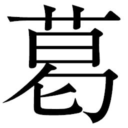
藤
が渦巻いているかのようで、普段より小さく見えた。
ヘイハチはひとつ、大きく呼吸した。彼から伝わる気の流れが変わった。
「前にゴロさんから聞いたのですが、知
行
や恩
賞
にはまったく縁のない戦
だと、あなたは言ったそうですね。褒
美
といえば腹いっぱいの飯のみだ、と」
カンベエは柄
に腕をかけ、鬚
を親指でなでながら黙って頷
いた。ゴロベエを雇い入れたときのことだ。
「たしかにお腹いっぱい、おいしいご飯をいただきました。カンナ村のお米は本当においしいです。知行も恩賞もない戦、相手も野伏せりどころか都にまでなって。相手がでっかいというのは、なんだか男心をくすぐりますね。得るものは信念とともに戦い抜いたという己の生きた証し。私はずっと、こんな戦をしたかったのかもしれません」
そう言って、ヘイハチは振り返った。てるてる坊主が揺れていた。
「ヘイハチ。話したくなければ話さずともよい。それが苦い記憶なら、なおさらだ」
「いえ、聞いてください。本当は墓場まで一人で持っていくつもりでした。でも、あなたには聞いてほしい。裏切りを赦
し、人を信じるあなたになら」
抱え込んだ暗い闇を反
芻
するように、ヘイハチは深呼吸した。初めて人に話す過去。切ない別れと共にてるてる坊主をしまいこんでからの、心の奥底に封印した濁
った記憶。
「私は、カンベエ殿と出会うまで人を斬ったことはありません。ですが、人を殺したことはあります」
「裏切りによって......、だな」
ヘイハチの瞳を、カンベエは見据えた。ヘイハチは驚きながらも、心底ほっとしたような笑みを浮かべた。やはり、この男は見抜いていたのだ。
「炯
眼
、恐れ入ります」
「人に厳しいのは、おのれの過去が許せないゆえか」
「ええ......。弱かったんですね。私が流した知らせが、部隊全員の死を招きました。お粗末なうえにもお粗末な話です」
サムライの誉
れは出世。工兵として認められたいという思いが、ヘイハチの心に隙
を作った。将来を共にしようと思っていた娘に自分から別れを切りだし、仕事にまなじりを決した矢先のこと。出世を
に接触してきた同胞が敵の二重スパイだと知ったのは後のことだった。
工兵である以上、作戦遂行のために戦闘前に現場で作業を行なうことが多い。そしてそこで何を行なったかは機密に属する。敵は極秘の作戦展開地域の状況を知るためにヘイハチを利用した。ヘイハチが信用するのも当然だった。相手は、軍上層部の信頼厚い指揮官。言葉巧みに作戦の成功のためという美辞麗句と出世の口利きをちらつかされてヘイハチは自分の任務内容を無意識のうちに開示していた。
だが味方は待ち伏せされ、壊滅的打撃を受けた。作戦は失敗、大量の犠牲者が出た。支援部隊として加わっていたヘイハチの工兵隊でも多くの隊員が死亡し、あるいは重傷を負って入院した。ヘイハチ自身も大怪我を負った。ヘイハチは指揮官にとって捨て駒であり、何も知らぬまま待ち伏せの巻き添えになることが筋書きだったが、悪運か否か、入院後も次々と命を落とす仲間たちをよそに、ヘイハチだけが生き残った。
それでも彼は指揮官を信じた。出世を求めた。しかし指揮官は仕掛けた作戦が成功した後に敵陣へと逃亡、真に出世をつかんだのはこの隠密作戦の功績を買われた彼だった。ヘイハチのもとには、指揮官から情報提供の謝礼として渡されたわずかな金が残り、ようやく自分が仲間を裏切ったのだと気づいた。
軍部は、指揮官の逃亡と敵陣での英雄的歓迎に大恥をかいた。ヘイハチは誰にも言えぬまま、仲間の戦死に遺骨を引き取りにきた家族を前に、ただ泣いた。人を信じやすい自分を呪
い、裏切りを呪い、戦を呪い、出世を呪った。生き残ったことを家族になじられもした。機密を漏らした疑惑がヘイハチにかかったが、証拠不十分なまま解放された。事実を公
にするには臆病で、死ぬには勇気がなく、すべてを胸の奥にしまいこんで終戦を迎えた。あれから金に対しても異常なまでに嫌悪するようになり、日々食うや食わずの毎日が続いた。
ひたすらに、自分を戒
める日々だった。
「バカな話です。私が殺した連中にどう償
うか、そればかり考えて生きてきました。カンナ村の話に乗ったのは、償いのためだったのかもしれません」
「ならば、最後まで共に仕事を果たせ」
カンベエはヘイハチの長い告白に相
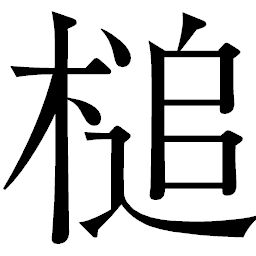
を打って聞いているだけだった。彼のやったことの是非を問うことが自分の役目ではなかった。ヘイハチはカンナ村を守る仕事を通じて、生きる縁
を摑んだ。それだけでカンベエには十分だ。欲しいのは戦力、これからの戦いに備えて、彼の過去を吐き出させただけにすぎない。
「人を斬って、真人間になれるならいくらでも」
ヘイハチは口を挟まなかったカンベエに感謝し、頭を下げた。
「心強い」
「カンベエ殿が人を信じ続けること、恐ろしくもありました。はじめは裏切りを許すあなたに驚きもしましたが、今は、その大きさに敬服するばかりです。もっと早く、あなたのような御
仁
にお会いできていれば」
ヘイハチは重い荷物をようやく降ろしたような、開放的な表情を浮かべて続けた。
「でもね、カンベエ殿。私、思うんですよ」
「何をだ？」
「カンベエ殿も、私以上の何かを抱えている......。私には、ずっとそう思えてならないのですが」
「そう、見えるか？」
「見えますよ」
「では儂
も、まだまだだな」
カンベエは苦笑した。
ヘイハチも笑い返した。ああ、この人はまた本音を見せていない。自分よりも、他のどのサムライよりも深く重く暗い闇の底で、じっと佇んでいる。そう思ってなお、ヘイハチはカンベエとともに戦っていこうとしていた。
「おーい、何話してんだ」
キクチヨのダミ声に、二人の空気に日常が戻ってきた。振り返ると、既に旅支度を整えたリキチたちが表に出てきていた。
「おや、もうそんな時間ですか」
空を見上げて太陽の位置を確認したヘイハチは、鋼筒
に歩き出しかけてまた、カンベエに軽く会
釈
をした。
カンベエは頷き返しただけだ。
二人の様子からシチロージはヘイハチにとっての大きなわだまかり、〝裏切り〟についてカンベエに話したことを悟ったものの、とりたててそれを話題にすることもなく普段どおりに歩みだしていた。
「そんな時間でげすよ、ヘイさん。そろそろでさ」
どこからともなくキュウゾウも現れた。
「キュウゾウ、追手
は」
「今は見当たらない」
カンベエに告げたキュウゾウは、さっさと船に乗ってしまった。彼は蛍屋の周辺に警戒の目を光らせてくれていた。あくまでも〝今は〟見当たらないだけで、油断できるものではないことはキュウゾウの張り詰めた気からもわかる。昼間の癒しの里は出入りの業者以外に人通りはほとんどなく、変装していても立ち居振る舞いから正体はいともたやすく見抜くことが出来た。出かけるなら今のうち。式
杜
人
の地下世界に潜りこめば、たとえ追手がいても協定を理由に撒
くことが出来るはずだ。
乗り込んだキュウゾウは、視線を感じて振り返った。
裏木戸に、アヤマロは背を丸めるようにしてキュウゾウを見つめていた。
「キュウゾウ......、もう一度、余のために働いてはくれぬか」
揉み手しながら言うアヤマロに、かつての差
配
の姿を見てとるのは難しい。今もキュウゾウに媚びたような声をかけたものの、鋭い一
瞥
を浴びてすごすごと小さくなった。そんなアヤマロにカンベエは声をかけた。
「アヤマロ殿。さまざまな情報、かたじけない」
「本気で都と、戦するつもりかえ。たったそれだけの人数で？ 勝つ気なのかえ？」
「ウキョウという男を攻め落とすには十分だ」
「余にはわからぬ。なぜ逆賊の道を選ぶのか、サムライの考えることはわからぬ」
アヤマロは困惑気味に頭を横に振っていた。
カンベエは、キララとミズキに付き添われたサナエを見た。本当なら、臨月のこの体で村までの長旅は褒
められたものではない。赤子が産まれ、落ち着くまでは蛍屋に置いておくべきだとも思う。だがこの世界で、リキチとサナエにとって安全な場所など今はどこにもないのだ。
カンナ村へは式杜人の里を経て水路を伝い、砂漠越えをはかるつもりだった。移動はシチロージとリキチが乗ってきた小型軍用船だ。キララとミズキに手を添えられて船に乗り込むサナエを、リキチが心配そうに見つめていた。
その様子を見るカンベエに、マサムネが歩み寄ってきた。
「あり合わせで作ってみたんだ。飛び道具もいるだろ」
差し出したのは手製の三連装のボウガンと、矢
立
に詰め込んだ数十本の矢だった。矢は過去の大戦の残りもので、大小さまざまだ。
「ちょいとばかり矢が不
いだが、どんなのでも使える。あんたのことだ、どんなものでも武器に変えちまうだろ。持ってってくんな」
いだが、どんなのでも使える。あんたのことだ、どんなものでも武器に変えちまうだろ。持ってってくんな」 ボウガンは廃材を利用して作っただけあって色味の統一もなく継ぎはぎだらけの代物だったが、要
となる弦
は強固に括
りつけてあり、試しに引いてみたカンベエはマサムネの確かな仕事に満足したように頷いた。
「かたじけない。恩に着る」
「またあんたの刀を研
がせてくれや。待ってるぜ。ああ、それからな。カツの字のことな。どこかで会ったら、しっかり面倒みてやれや」
カツシロウの青さが可愛くて仕方ない様子で、マサムネは快活に言った。
カンベエは微苦笑を浮かべて頷いてみせた。反発も煩
悶
も、〝サムライ〟の通過点に過ぎないとカンベエは思っている。サムライは人の命を奪う商売だ。今は感情のままに叫び、のたうちまわるだけのたうちまわっていればいい。カツシロウを気遣うマサムネの暖かさに感謝しつつ、カンベエは目礼するのだった。
槍
を担
いだシチロージの背に、ユキノはそっと歩み寄ると火
口
金
を二つ、打ち鳴らした。
「いってらっしゃいな」
「おやあ、やっと戻ってきたってのに、ずいぶんあっさりと送り出してくれますね」
振り返ったシチロージは意外、というふうに言葉を返した。ひと月前にここを旅立ったときとは正反対に、ユキノは笑顔だった。
「だって、お土産なんにも持ってきてくれなかったじゃないのサ」
「あいたた......。そいつを言われるとシチさんカタなしでさ」
ユキノはさらりと言ってのけ、シチロージは太鼓持ち風味で額
を叩く。二人の日常だった。
しかしふっと、ユキノの目に気持ちがこもる。このひと月、気が気でない日々を送ってきた。シチロージが去ってからは食事を満足にとることも出来ず、店の者たちを心配にさせた。眠れない夜もあった。あんな奴、と嫌おうともした。考えない日はなかった。朝晩、願掛けをして無事を祈り続けた。そして出した答え。
――無事に帰ってきても、きっとまたあの人は戦があれば出ていってしまう。そのときは、笑顔で送ろう。サムライに惚れた女として、毅
然
としよう。戦の頃の奥方たちのように。
いつものように軽口を叩いて、彼を送りだすだけ。まして今はリキチとサナエがいる。二人の気持ちを思えば、なおさらいつものように振る舞うべきだと心を決めていた。
彼女の瞳にこもった感情の光をシチロージは見逃さない。すべてわかっているとばかり、ユキノの頰にふと、手を添えた。
「いってくる」
ユキノは頰に添えられたシチロージの手に、自分の手を重ねた。笑顔で送ろうとした決心が揺らぐ。唇がわなないた。
「お前さん」
「ん？」
「帰ってきたら、何食べたい？」
涙をこらえて、ユキノは言った。微笑みだけは、崩したくなかった。
シチロージは少し考えてから、言った。
「そうさな。鰤
大
根
。お前が煮付けてくれたの、久しぶりに食べたいなあ」
旬のものが大好きなシチロージの言葉で、帰りはその頃、とユキノは察した。シチロージもあえて、待っている彼女のために、季節を料理の名にしのばせた。
ユキノは想い切るように、シチロージの手を離した。
シチロージも気持ちに区切りをつけるように、背を向けてひらりと船に飛び乗った。ユキノはキララの視線に気づくと、膝を折って彼女に耳打ちする。
「がんばれ、女の子」
キララの頰がほんのりと朱に染まった。恥ずかしげにうつむくと小さく頷いた。ユキノには正直な気持ちをすべて話していた。それが恋なのかどうか、まだキララにはわからない。それでも日ごとに心を占める想いには、正直であろうと思った。変わりたいと思って村を出てきたなら、なおさらだとユキノは言った。
「ありがとう、ユキノさん」
キララは、もっとユキノに話を聞いてほしかった。すべてが終わったら、またここに来ようと心に誓った。
体を起こしたユキノは、船に乗り込んだカンベエに視線を移すと、深く頭を下げた。
カンベエも会釈を返した。顔を上げたユキノにもう一度力強く頷くと、一同に向かって声を張った。
「参るぞ」
「おうよ！」
「おー！」
キクチヨとコマチが元気に拳
を上げた。
リキチはサナエのそばに寄り添うようにして、声をかけた。
「帰ろ、カンナ村に」
サナエは無反応で、感情のこもらない瞳でリキチを見るだけだ。リキチは必死に笑顔を作った。
鋼筒
に乗ったヘイハチが、その脚部を畳んで浮上させた。
シチロージが小型軍用船の主機関を起動させた。スクリューが回転し、船はゆっくりと動き出した。ヘイハチの鋼筒が先導役になって船首側にまわった。
見送るユキノとマサムネの前で、船は次第に速度を上げていく。
「じゃあな、キクの字！ カンベエさんの足、ひっぱるんじゃねえぞ！」
「わかってらぁ！ じゃあな、とっつぁん！」
大きく手をふるキクチヨに、マサムネも手を振り返した。
やがて水路の奥深く、暗がりの中に船は姿を消した。
「いっちまったねえ」
マサムネはカンベエが負けるわけなどないと信じている。たとえ相手が強大な天守閣戦艦でも、一刀のもとに斬り伏せてきたサムライたちだ。
ユキノの目尻に涙が光っていた。そっと指でぬぐった彼女は、笑顔を作って自分の店を振り返った。まだ裏木戸でいじいじと船を見送っていたアヤマロと目が合う。
「おや、アキンドさん。いたのかい」
「女将、もうしばらくここに厄介になってもよいかのう......。持ち合わせは何もないが、落ち着き先を決めるまでは......」
「いいよ、好きなだけいなさいな。ちょうどよかったよ、お風呂の罐
焚きが辞めちゃってね」
「風呂か。風呂ならば夕
餉
の後に」
「お馬鹿お言いでないよ。湯をわかしておくれって言ってるんだよ」
「はて、湯をわかす、とは」
真
面
目
に間の抜けた返答をするアヤマロに、ユキノもマサムネも呆
れた。アヤマロには下働きの意味がまったく通じないらしかった。
◎
都は間もなく次の村に達しようとしていた。
天覧の間に呼び出されたヒョーゴは、ウキョウから新たな指令を出された。
「カンナ村に斥
候
に出てくれないかな。カンベエクンたちサムライは都に来たけど、今の村がどうなってるか知りたいんだ。出来れば、都が着く前に不幸な事故が起こってても構わない。用心棒たち連れてってくれていいからさ。やってくれる？」
話を聞いているうちに不快な目つきを浮かべるヒョーゴの感情を察して、ウキョウは悪
戯
っぽい笑みを見せ、次の言葉を投げた。
「これが終わったら、そのあとキュウゾウのこと斬りに行っていいよ」
「まことでございますか」
「天主が言うんだからまことだよ。だからカンナ村。いいね」
「承知致しました」
ヒョーゴは頭を下げた。ウキョウがキュウゾウという、自分にとって最大の
を投げた理由はわかっている。ヒョーゴはカンナ村に起こるであろう〝不幸な事故〟にはあくまで反対の立場をとっていた。だからこそのキュウゾウであった。
横に控えたテッサイはウキョウの狡
猾
な采
配
を苦々しく思いつつ、今まで訪れた村での歓待ぶりを思い出していた。どこに行ってもウキョウは百姓と浪人たちに偶像のように崇拝されていた。野伏せりを始末する共同作業を通じて彼らの心は一つになり、勝利という快楽を味わった。それをもたらしてくれたのはウキョウだ。今や野伏せりは悪の権化であった。仮想敵を作って自己の価値を高めるウキョウのやり方は、サナエの心を束縛した先代天主のやり方に似ていた。
ヒョーゴが出ていったのと入れ替わるように、伝令役の近衛兵がやってきた。
「虹雅峡の斥候より、報告です」
「よいよ。話して」
「島田カンベエの一味が蛍屋を出発しました。式杜人の里に潜りこんでおります」
「やっぱりそこに逃げ込んだかぁ。女も一緒？ 先代のややを懐妊してるあいつ」
「は、カンベエと一緒です」
「それで、父上は？」
「宿にて、下働きを」
その途端、ウキョウは腹を抱えて爆笑した。
「下働き！ 父上が！ よいねえ、楽しいねえ。身分にあぐらかいてる奴には一番いいクスリになるねえ！ 父上はもういいや。ほっといてあげようか」
「では、カンベエはいかがいたします」
「そうだな......」
「御天主様、忘れてはなりませぬぞ、式杜人とは協定が」
釘を刺すテッサイに、ウキョウはうんざりとしながら返事する。
「わかってるよ」
「面倒なことにあらしゃりますえ、御天主様。他の御
子
はすべて始末を確認しておりますが、サナエだけがいまだに生きております。刺客の存在も明らかになってしまいました。かててくわえて、御天主様が虹雅峡より連れて参った用心棒の皆々様も連絡が途絶えたままにあらしゃります。カンベエ一味をほうっておくわけにはいかないと思いますが」
「だから、ヒョーゴを先回りさせたのさ。サナエが生きている以上、カンベエクンはカンナ村に行く。式杜人を利用することは、はじめに都に乗り込んできたときのことでわかってたからね」
「それは重
畳
」
「ヒョーゴが先か、カンベエクンが先か、面白いことになってきたねえ」
「ときに御天主様、カンナ村を消した後の土地、いかがなさりまする」
「もちろん都が管理するよ。どこかの組主に貸し出して、賃料を徴収するんだ」
ウキョウは唇を舐
めた。
◎
地下の大鍾
乳
洞
の中を、鋼筒と小型軍用船が進んでいく。
カンベエたちは天井を見上げた。鍾乳石や天井の岩にフックをかけた式杜人たちが逆さにぶら下がり、カンベエたちを見下ろしていた。
はじめて見るサナエとミズキは不思議そうに式杜人たちを見上げていた。
「ここに、姉ちゃんが？」
カンベエはシチロージに茸
畑
に船を寄せるように指示を出した後、ミズキに言った。
「間もなく会えるぞ」
シチロージが船を川
縁
に寄せると、主機関を止めた。
茸畑では百姓たちが滲みだす汁の採取を行なっている。やってきた船に百姓の何人かが気づき、奥にいたホノカに声をかけてくれた。
怪
な顔でホノカは出てきた。カンベエは失敗した、と聞いていたからだ。だが船を降りた一行の中にミズキの姿をみつけたとき、ホノカは驚きのあまり茸汁を入れた椀を落としていた。
「ミズキ!?
」
その声がした方向に、ミズキの視線が彷徨
った。細く蒼白い肌の姉の姿を見とめた途端、彼女は駆けだしていた。
「ねえちゃん！」
姉妹は駆け寄りあい、手をとりあった。二度と会えないと思っていた二人だ。信じられないと目を潤
ませ、感極まって言葉が出てこない。ミズキはホノカに抱きついた。姉の体は、昔に比べて痩せていた。姉は、妹が村にいた頃よりもいささかふくよかになっていることに気づいた。離れていた間のそれぞれの暮らしを思い、たまらない気持ちになる。
「ほんとにミズキなんだね。無事だったんだね！」
「おサムライ様たちに、助けてもらったんだ」
茸畑の畔までやってきたカンベエに、ホノカは潤んだ目を向けた。シチロージたちがここを通過したときも、外の状況がわからず不安だったホノカである。しかし今、すべての不安は消えた。たった一人の肉親とこうして再会できたのだ。約束を果たしたカンベエは、穏やかに微笑んでホノカの瞳に応えていた。
「遅くなってすまなかった」
「いえ、こうして会えただけで、あたし十分です。カンベエ様、ありがとう」
「なに、助けられたのは儂
の方でな」
「え......？」
「姉ちゃん、このおサムライ、泥棒で嘘つきで強いんだよ」
悪びれもせずにミズキはカンベエに舌を出した。奥御殿という閉ざされた世界で救出を諦
めなかった自分の勝ち。ミズキは、そう思っていた。ふと、自分に近づいてきた影の方を彼女は向いた。覚
束
ない足取りのサナエがキララに支えられてミズキのもとへと歩み寄ってきた。リキチがそれに続き、ホノカに笑いかけていた。
「よかったわね、ミズキさん」
サナエは寂しげに微笑んだ。
「サナエさん。早く、リキチさんのほうを向いてあげてね」
ミズキはサナエに言った。
サナエは儚
げな瞳のままだ。リキチが場をとりなすようにわざと声を大きく、ホノカに声をかけた。
「よかったな、ホノカ。ほんとによかった。俺も女房に会えたんだ。これから、みんなで村に帰る」
ホノカはサナエの臨月のお腹を見て、何かを察したようだ。切なげにリキチを見る。リキチは、無言ながらも何も聞かないでくれ、と厳しい目で告げていた。
ミズキはカンベエに頭を下げた。
「おサムライ様。いろいろありがと。あたし、姉ちゃんとここに残る。だから、ここでさよならだ。サナエさんのためにも、早く村に行っておくれよ」
「かたじけない。世話になったな」
「元気でね、島田カンベエ。都に、勝ってよね。あんたなら絶対勝てるよ」
ミズキの快活な声は地下空洞に反響した。その言葉を合図にしたかのように、数人の式杜人がワイヤーを伸ばして降りてくるとカンベエの周りを取り囲んだ。
「カンベエ殿。よく、生きて戻られたものだ。処刑場でのこと、実に驚いておる」
「知っておったか。おぬしたちにもいろいろと世話になった」
「今の話、聞いたぞ。都に喧
嘩
を売るのか」
式杜人の探るような口ぶりに、カンベエは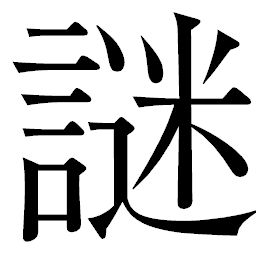
をかけるように答えた。
「儂は彼らに頼まれた仕事をしているだけだ」
彼ら、とリキチやキララ、コマチを見る。相手が野伏せりであろうと都であろうと、カンナ村の百姓たちの明日を平穏にするために刀をふるう。あくまでも自分はカンナ村に雇われたサムライなのだ。
「都の仕組みを壊すおつもりか」
カンベエは式杜人を正眼に見据えた。式杜人は素顔をカンベエに見透かされているかのようで、怯
んだ。
「お前さんを止めようというのではない。なればこそ、手土産の一つも持っていってもらおうと思ってな」
式杜人たちは手押し車に大量の爆薬や武器を積み込んで進み出てきた。
ヘイハチが爆薬を見て感嘆の声をもらした。
「ずいぶんありますね。やはりあなた方は、サムライ......？」
「昔の話だ」
式杜人は平坦な声で答えた。
「我らの過去などどうでもよい。都の仕組みより解き放たれる好機ならば、利用しない手はない。お前さんの戦に、一口乗せてもらってもよろしいかな」
「ありがたくいただいていこう。それから、一つ頼まれてほしいのだが」
「なにか」
「いずれは、ここの百姓たちにも本物の太陽を拝ませてやってほしい」
カンベエは自分たちを見る百姓たちに視線を向けた。
「誓おう。カンベエ殿も、御武運を」
式杜人がカンベエたちに渡したのは爆薬だけではなかった。船よりは早く村に着けるだろうと、蓄
電
筒
の荷運びに使う運搬船までも提供してくれたのだ。
去り行く運搬船を見送るホノカとミズキたちの後ろで、式杜人たちは口々に囁
きあった。
「変わるだろうか、これから」
「あの者たちは変えようとしているわけではない、仕事をしているだけだ」
「まさしく、サムライといえるか」
式杜人たちにとって、カンベエが醸し出す空気は懐かしいものだった。
――かつて彼らも、空にいたのだから。
運搬船は人が乗るコクピット部分を上部に、荷物を載せる荷台部分を下部につけた二層構造になっている。操縦するのはヘイハチである。小型軍用船よりもはるかに早く、カンナ村には二日もあれば到着すると思われた。
「いやー、大量大量。式杜人っていいヤツらだよなァ、こんなにお土産くれるんだからよォ！ だっはっは！」
荷台側にいるキクチヨが高笑いした。戦の準備に心躍
っているのだ。
キクチヨの笑いを背に、カンベエたちは前方を見据えていた。
「〝いい〟は〝いい〟でも、調子のいい奴らですね、式杜人は」
シチロージが呆れたように言うと、ヘイハチも不服そうに言った。
「サムライなのに......。共に戦ってくれれば心強いものを。面倒はこちらに任せて自分たちは地下で安住とは、目端の利くアキンドと変わらないようにも思います」
「あの防護服では満足な戦い方は出来るものではない。我らに力を託したのが、せめてもの抵抗なのだろう」
カンベエは言った。
式杜人は、元はサムライ。空を飛ぶ主機関の爆発の影響でふた目と見られぬ姿となり、戦をおさめたアキンドたちによって穴居生活を余儀なくされた者たちである。アキンドとの取引を行なって生活を維持しているのは、ただ金に頭を下げるだけの存在ではないという元サムライなりのささやかなプライドがなせるわざだったのかもしれない。
鍾乳石から雫
が滴
る音だけが響き続ける地下水路を、運搬船はカンナ村へ向けて進み続けた。
◎
夕刻。
高速で走る早
亀
に乗っている間は、口に手
拭
いでも食いしばっていないと舌を噛みそうになる。早亀を駆り立ててカツシロウは走り続けた。わずかな休息をはさみながら、カツシロウはようやく、懐かしいつばさ岩が見える小高い丘にたどりついた。
景色は若干、変わっていた。村の周囲はうっすらと靄
がかかっているのはいつものとおりだが、串刺しにされた強
襲
揚
陸
艦
の残骸が倒れたままになっている。
今やカンナ村のランドマークはつばさ岩ではなく、百姓たちの勝利の象徴としての、「野伏せり様」の巨大な残骸に移り変わってしまったようだ。
もう小
半
時
も走れば、そこまで到達するはずだ。
夢のなかでゴロベエに会ったカツシロウは、戦への旅立ちの前にもう一度彼に会っていこうと思い立った。墓に参って、今までのがむしゃらだった自分との訣
別
をしようと決めたのだった。
疲れた体に鞭
打
つようにして、カツシロウは最後の一息を走り抜けた。
つばさ岩は何事もなかったかのようにその場にそびえ立っている。そしてその向こうには、橋向こうの田畑。串刺しの強襲揚陸艦のせいで田畑は使えず、倒壊したマンゾウらの家も再建されることなくそのまま放置されていた。
強襲揚陸艦は西日を浴びて朱に染まっていた。巨体が作り出す長い影が地面に伸びていた。早亀に乗ったカツシロウはゆっくりとその横を通りながら、あらためてその巨大さを実感した。こんなものをたった一撃でよく倒したものだ。巨大な丸太一つで緒戦を飾ったカンベエの豪胆な戦法に舌を巻くと同時に、野伏せりたちが受けた衝撃の大きさはいかばかりであったか、と想像した。巻き添えを食って吹っ飛んだ雷電や紅蜘蛛、鋼筒
や 跳
も散らばり、朽ちかけていた。まだ微
かに、焼け焦げた匂いも漂っている。
跳
も散らばり、朽ちかけていた。まだ微
かに、焼け焦げた匂いも漂っている。
跳
も散らばり、朽ちかけていた。まだ微
かに、焼け焦げた匂いも漂っている。 吹き抜ける風がそれらの匂いを吹き払っていく。
カツシロウは、蠢
く何者かの気配を感じた。殺気を漂わせた者が、残骸の向こうにいる。静かに早亀を降りたカツシロウは、足音を忍ばせて残骸の裏に出ようとしたが、足が地面にあった金属片を踏み、音を立てた。カツシロウは息をとめ、刀に手をかけた。
残骸を挟んで、潜んだ者も音によってカツシロウの存在に気づいたようだ。
カツシロウは肚
を括
った。抜刀しつつ飛びだす。相手も同様に飛び出してきた。まさしくそれはサイボーグ用心棒、奇異な甲
冑
に身を包んだ火炎放射男だった。蛍屋を襲ったのと同じ甲冑をカスタマイズし、塗装も変え、背負った長剣を抜き放ってカツシロウに襲いかかってきた。
カツシロウは相手の腹をなで切りした。激しい斬撃に男はよろめき、長剣をふるうことも出来ずに倒れた。
敵は一人ではなかった。カツシロウの周りを、いつの間にか数人の火炎放射男たちが包囲していた。
◎
広場を望む家の窓から、オカラは外の様子を見ていた。リキチがシチロージたちと去ってからずいぶん経つ。サムライが来た、と聞いて見てみれば、見たこともない男だった。長い髪にカブキモノのごとき派手な着衣。眼鏡をかけたその男は、ヒョーゴだった。
夕
靄
の中、カンナ村の広場ではマンゾウ、ゴサク、モスケ、ヨヘイがヒョーゴの前で平伏していた。ヒョーゴの左右にはサイボーグ用心棒が数人、不敵な面
構
えで従っている。
ヒョーゴは百姓たちの背中を見下ろしながら、冷めた口調で命令した。
「ここに、村の者をすべて集めよ。これは御天主公ウキョウ様直
々
の御下命である。男だけではない。女、子ども、すべてだ。これより都を迎え入れるための心得を申し渡す」
「へえっ！」
マンゾウたちは再度地面に額をこすりつけた後、そそくさと立ち上がった。何事かはわからないが、都が来るというのでは従うほかない。各戸へ人集めに散ろうとした彼らは、いつの間にか長老ギサクが側
に来ていたことに驚き、足をとめた。
ギサクは値踏みするような視線でヒョーゴを見た。マンゾウたちに比べ、威圧的な男たちに対して一歩も退
くことのない老
獪
な瞳だった。
「おサムライ様、ちょいと聞きてぇことがあるだで」
「なんだ、貴様は」
「都には百姓から攫
った女たちがいると聞いただ。ほんとか」
含みも何もない問いかけと老人の挑戦的な瞳に、ヒョーゴも正眼で答えた。
「俺にはなんのことかわからんな。俺のようなサムライはご覧のとおりの使い走りでしかないんでね。都が来たら御天主様に聞いてみな」
二人の視線の間には、見えない火花が散っているようだった。マンゾウたちは恐れをなして人集めに向かいながらも、ちらちらとその様子を振り返っていた。
ようやく日常が戻ってきたかと思った矢先のこの出来事に、特にマンゾウの震えようは尋
常
ではない。膝ががくがくと揺れて満足に歩くことも出来ない。
「どうしただ、マンゾウ」
ゴサクが
ねると、マンゾウは声を潜めてぼそぼそと喋
りだした。既に汗が噴き出し、流れ落ちては顎
から滴り落ちている。
「おっかねえだよ、都さ来たら、シノ連れてかれるんじゃねえかと、そればっかり考えて、気ィ狂いそうだ」
「おめぇはまた、そんなことばっかり心配して。爺
様
に任せとけばいいだ、ここはおサムライ様の言うとおりしといたほうがええ」
マンゾウたちは、突如聞こえてきた早亀の蹄
の音に足を止め、耳を澄ました。
ヒョーゴも不審そうに振り返る。
「この足音、行商の早亀でねえだか」
ギサクが呟
いた。
夕靄の中、早亀がゆっくりと姿を現わした。
「カツシロウ様!?
」
モスケの声は驚きのあまり裏返っていた。
手
綱
を握るカツシロウの険しい顔を見て、ヒョーゴも、ギサクたちも息を呑んだ。カツシロウの陣羽織は既に斬り合いの後をうかがわせてあちこち裂けていた。しかも早亀の甲
羅
には彼が斬った火炎放射男が括
りつけられているではないか。
驚いたのはカツシロウも同じだ。ヒョーゴがいることで、火炎放射男たちの意図がまぎれもなく攻撃準備であったことを確信した。
カツシロウはヒョーゴの後ろに来ると早亀を停め、素早く飛び降りた。油断なくヒョーゴを見据えながら火炎放射男の骸を地面に放りだした。
慌ててマンゾウたちが駆け寄ってくる。
「カツシロウ様、なんだべ、これ！」
ヨヘイが叫ぶと、カツシロウは彼らを制するように手をあげた。
「お前たちは下がっていろ」
危険を感じて、ゴサクとヨヘイがギサクを促した。
「爺様、早よう、逃げるだ」
ギサクはヨヘイに腕をとられながらも、カツシロウが全身から漂わせる気と、彼の顔つきの変化から目を離せなかった。村にはじめて来たときは育ちのよさそうな雰囲気を漂わせていたが、今は違う。眼光は異様なほどに鋭く研ぎ澄まされ、心なしか痩せて見える。引き締まった、というべきかもしれない。頰の肉が削
げて精
悍
と不
 の入り交じった顔つきは棘
を含んでも見えた。
の入り交じった顔つきは棘
を含んでも見えた。
の入り交じった顔つきは棘
を含んでも見えた。 ヒョーゴたちはカツシロウと間合いをとった。カツシロウは三人の刺客の動きに目を配りながら、柄に手をかけていった。
「こいつらが橋向こうにいたことを、説明してもらおうか」
「何を聞かれているのか、さっぱりわからんな、小僧」
ヒョーゴはからかうような口調で「小僧」を強調した。
「この村に、何の用だ。こいつらは火を放とうとしていたぞ」
「都よりの使者が、警備役としてこの者たちを引き連れていたところで問題があるのか？ 貴様のやったことは都に対する不敬だ。よって、成
敗
に値する」
ヒョーゴは左右のサイボーグ用心棒たちに指先の動き一つで斬りかかれと指示を出した。サイボーグ用心棒は、一人は鎖
鎌
を振り回し、一人は連発銃を持っている。
「詭
弁
だ」
カツシロウは抜刀するなり、斬り込んだ。連発銃男に真っ先に斬り込む。飛び道具は厄
介
だ。先に倒しておかなくてはどこで銃弾を浴びるかわからない。刀を振り上げたカツシロウは、獰
猛
に吼
え、自分を鼓
舞
した。
連発銃男は反射的に撃ったが、カツシロウの着衣をかすめただけだ。たちまちカツシロウは相手の懐
に飛び込んで袈
裟
斬
りにした。引き金に込めた指が痙
攣
し、そのまま鉄砲を発射していた。倒れながら連発の銃弾がたちまち撃ち尽くされ、跳
弾
が広場のあちこちに食い込んだ。
カツシロウの刀に鎖鎌男が放った分銅と鎖がからみついた。ひきずられたカツシロウの喉元めがけて、鎖鎌が水平になぎ払われる。間一髪で身を屈
めたカツシロウは男に足払いをかけた。体勢を崩して横倒しになる男に、カツシロウは鎖がからまったままの刀を突き立てる。心臓をひと突きし、貫通した切っ先が地面にまで突き刺さった。心筋が収縮する前に刀を引き抜いたカツシロウは、傷口から噴出する血をよけて横っ飛びに転がった。死の痙攣が男を襲う。
ヒョーゴはカツシロウの太刀筋に確かなものを感じた。虹雅峡で会ったときも、都で会ったときも、自分の一喝で怯むほどに弱々しい少年だったはずだがいったい何があったのか、と見直した。やがて来るであろうキュウゾウとの一戦の前に、体を暖めておくのも悪くない。抜刀し、刀を一振りしながらゆっくりと歩みだし、間合いをはかった。
動きながらヒョーゴは、周囲の闇に向かって視線を走らせ、指示を出すような手つきをした。カツシロウも、戦いを見守るギサクも、村落を囲む森の中に何かが潜んでいることを感じ取った。
カツシロウはからみついた鎖をほどくと、刀を構え直した。下段に構えたヒョーゴの隙をうかがって視線を走らせるも、サイボーグ用心棒たちと違って格段に予断を許さない気を張り、その視線だけでカツシロウを威圧してくる。
この男は、サムライだ。カンベエやキュウゾウと同じようにサムライであることにこだわり続けている男だ――。カツシロウの全身の血が騒ぎだす。サムライと、剣を交えることがうれしくてたまらない、といった風情だ。その空気の変化をヒョーゴも感じ取った。
ヒョーゴはカツシロウを試すように踏み込んだ。カツシロウは一
閃
をかわしながら懐に飛び込んできた。ヒョーゴはその右腕を摑む。強い力で押さえこまれたカツシロウの顔が歪
んだ。
「俺を斬るにはまだ、厳しいな」
ヒョーゴは笑い、カツシロウの腕を摑んで引き倒すと刀をふるった。もんどりうったカツシロウはとっさに左手で地面の土を摑み、ヒョーゴに投げつけた。思わず顔を伏せて土をかわした一瞬の間に、カツシロウは体勢を立て直した。刀を構え直す動きの中で、彼は知らず知らずのうちにカンベエの戦い方を再現しているような錯覚に襲われていた。
屈辱的な思いでヒョーゴは猛然と斬り込んできた。カツシロウは受けとめ、反撃の糸口を探すがまったく歯がたたず、たちまち劣勢に追い込まれ、後退していく。ヒョーゴは力で押すかと思えば流れるように引き、隙を見せて誘ったかと思えば斬り込み、と流
麗
にカツシロウを翻
弄
してくる。経験の差が出た。場数を踏んでいる分、ヒョーゴにはカツシロウの動きが見えるのだ。
ついにカツシロウは左の二の腕を斬りつけられ、後方へ数歩、たたらを踏んだ。激痛が全身を走る。それでも彼は、果
敢
に斬り込むことをやめなかった。痛みの分、視界が歪む。思考が麻
痺
する。今までのカツシロウなら倒れていたかもしれない。だが今、斬られたことでカツシロウの息は弾み、意識は混
濁
していながらも闘争本能だけは熱く滾
り、やむことがなかった。
ヒョーゴはカツシロウに肘打ちを叩きつけ、怯ませた。痛みに前のめりになったところへ、上段から刀を振り下ろした。カツシロウは素早く腕を伸ばしてその手首を、がっしりと摑んだ。ヒョーゴが目を瞠
るほどの俊敏な動きだった。無理な体勢からの反撃にヒョーゴの心に、驚きによる空
隙
が生まれた。カツシロウは見逃さず、一気にヒョーゴの腹を貫いた。
鍔
まで達するほど深く抉
られたヒョーゴの顔から、眼鏡が落ちた。酸素を求めて口が大きく開いた。負けを自覚する。相手を小僧と
み、来るべきキュウゾウ戦の前の腕ならしと舐
めてかかった自分の傲
慢
に、自 気味な笑みさえ浮かんだ。相打ちにもっていこうと、彼は死力を振り絞って刀をカツシロウの背に突き刺そうとした。カツシロウはヒョーゴから刀を抜き、かわした。ヒョーゴの切っ先は虚しく地面に突き刺さった。
気味な笑みさえ浮かんだ。相打ちにもっていこうと、彼は死力を振り絞って刀をカツシロウの背に突き刺そうとした。カツシロウはヒョーゴから刀を抜き、かわした。ヒョーゴの切っ先は虚しく地面に突き刺さった。
気味な笑みさえ浮かんだ。相打ちにもっていこうと、彼は死力を振り絞って刀をカツシロウの背に突き刺そうとした。カツシロウはヒョーゴから刀を抜き、かわした。ヒョーゴの切っ先は虚しく地面に突き刺さった。 がっくりと膝をつき、蒼白になっていくヒョーゴにカツシロウはとどめの一刀を降り下ろそうとした。
だが、その背にギサクが鋭い声を投げた。
「殺すな！」
「斥候は斬るべし！」
勢いをとめられ、カツシロウは苛立たしそうに声を荒げた。
「都が何考えてるか、知りたいとは思わんか、おサムライ様」
ヒョーゴはギサクの言葉に衝撃を受け、脂汗を浮かべながらも顔を上げた。アキンドにも、百姓にも、ただ情報を求められて生かされる自分が虚しい。失いかけた力を奮いたたせ、ヒョーゴは自害をはかろうと刀を振り上げた。ウキョウの秘密を守ろうとしてではない。自分の誇りのために死のうとしたのだ。
カツシロウはヒョーゴの腕を摑んで自害を阻止した。ギサクの言うことももっともだったからだ。瞬間、カツシロウとヒョーゴの視線がからみあった。
「......殺せ！」
カツシロウはヒョーゴの慟
哭
を察しながらも、何も言わずに刀を取り上げた。
肩を落とし、ついに地面に倒れ伏したヒョーゴは、内臓を抉られた激痛に歯を食いしばりながら、声を限りに叫んだ。
「二番隊！ 俺を撃ってくれ！」
ヒョーゴの声に応えて、闇の中から火炎放射男たちが現れた。カツシロウと斬り合う前に手つきで指示を出していた相手は彼らだったのだ。おそらくは斬り合いを邪魔されたくなくて行動を制していたに違いない。だが自分で死ねないなら、とヒョーゴは二番隊と呼ばれた男たちを呼び出した。カンナ村に対する〝不幸な事故〟と同時に、自分の死を願ったのだ。もはやこれ以上の屈辱には耐えられなかった。
カツシロウはヒョーゴの刀を左手に持って、二刀流に構えた。闇の中から出てきた十人を越える火炎放射男たちを相手にどこまで戦えるか、
く傷の中で自分の動きを計算した。
く傷の中で自分の動きを計算した。 斬り込もうと両足に力を込めた、そのとき。四方から矢が飛んできた。
火炎放射男たちに次々に突き刺さっていく。矢を放ったのは村人たちだった。ゴサクが慌てて呼び出した村人たちが、今や一家に一本ずつ持たされていた弓と矢を持って駆けつけたのである。
強力な援軍の登場に、カツシロウは二本の刀を持って火炎放射男たちに挑みかかっていく。その姿を、倒れたヒョーゴがぼんやりと見つめていた。足音のする方を振り返ると、ギサクが彼を見下ろしていた。
第二十七章 契る！
運搬船で地下空洞を抜け出たカンベエたちの移動は順調である。
その途中、彼らは紅
蜘
蛛
や雷
電
の無残な屍
を見た。リキチには軽い既視感があった。矢が突き刺さり黒く焦げた装甲は、まぎれもなく激しい戦闘によるものだ。不審に思った一行は、すぐ近くの村に立ち寄った。
村の様子を見て、リキチはまたしても既視感に襲われた。
外周を囲む鉄柵や急
拵
えの投石器、四方に作られた見張り台には、何を警戒しているのかサムライがいるではないか。
見張り台のサムライもカンベエたちに気づいた。シチロージが進み出た。
「失礼だが、少々ものを
ねたい。向こうで機械のサムライの屍を見たのだが」
「ああ、あれか。野伏せりだ。我らがやった。百姓と一緒にな」
サムライはさらりと言ってのけた。
声を聞きつけて、村の中からもサムライと百姓たちが出てきた。
しばしの休養となった。運搬船には見張りを買って出たキュウゾウを残し、カンベエたちは百姓たちの歓迎を受けた。彼らの口から出た話はウキョウによるカンナ村マニュアルと野伏せりの警護。なにより、虹
雅
峡
の人々の心証の変化をさらに強固なものにしているウキョウ礼賛の言葉だった。
主に話をしてくれたのは、どうやらこの浪人部隊を率いる年
嵩
のサムライだ。
「御
天
主
様
は一昨日、ここに立ち寄られておってな。ははァ、さては御同輩、我らの話を聞いて御天主様より、警護役の仕事を賜
ろうと思い立ったのでは。ならば急いだ方がよいぞ。都
は南に向かったのでな」
「違う違う！ オレたちはよぉ、天
主
をぶった斬りに行くのでござる！」
キクチヨが噴気すると、シチロージとヘイハチは「このバカ言っちまったよ」とばかりにしかめっ面になった。一方これを聞いた浪人と百姓は絶句した。しかし、一拍後には大爆笑に包まれた。
「なんでえ！ 何がおかしい！」
「いや、これは御無礼。あまりに突拍子もないことゆえ、つい。失敬」
「おもしれえこと言うおサムライ様だぁ」
百姓たちも口々に言った。
本気の言葉が一笑に付され、キクチヨは戸
惑
い、憤慨した。
「笑うなーっ！ ウキョウはホトケのふりした悪党だ！ あいつはな、お前たちにはいい顔して、裏じゃ......」
キクチヨが身を乗り出して話しだそうとすると、カンベエが肩を摑み、押さえつけた。
「よさぬか」
「だってよぉ、こいつら！」
キクチヨは不満そうに噴気する。ところがカンベエは苦笑いを浮かべつつ、キクチヨの頭を指さして言った。
「大変に御無礼した。実はこの機械の大男、ちと患
っておる。かかわらぬ方がよい」
「なにーっ!?
」
またしてもカンベエは堂々と嘘をついた。ワナワナ震えて憤死寸前のキクチヨを抑えたのは、事態を察したコマチだった。
「どう、どう」
「どうどうってなんだ、どうどうって。オレ様は早
亀
じゃねぇぞぉ！」
◎
カンナ村の橋向こう、串刺しの強
襲
揚
陸
艦
のまわりに、マンゾウたちは手押し車に火炎放射男たちの屍
を運んでくると、火をつけた。カツシロウの斬った鎖鎌男と連発銃男のもだ。山と積まれた骸を包んだ炎は、煌
々
と周囲を照らしだして高々と燃え盛った。
そのさまを見届けて、カツシロウはゴロベエの墓の前にやってきた。
日暮れどき、土饅頭に突き立ったゴロベエの軍刀が長い影を作っている。
カツシロウは墓の前で膝を折り、黙祷を捧げた。
――ゴロベエ殿。あなたが、私をここに導いてくれたのですね。
戦場に赴
く前に、最後の別れを告げようと思って来てみればヒョーゴの襲来。カツシロウは、ゴロベエが村の危機を前に自分を呼びだしてくれたのだと感じていた。
いつしか、彼の背後には村の者たちが集まってきていた。
ギサクが杖をつきながら歩みだしてくると、カツシロウの背に問いかけた。
「あのおサムライが言ったこと、ほんとだと思うだか」
「そなたたちが倒したあの甲
冑
の男たち。あれが、その証拠とは思わぬか」
カツシロウは返答しながら、ヒョーゴが言ったことを反
芻
していた。火炎放射男たちは村人たちの一斉攻撃とカツシロウの斬撃を浴び、すべて倒された。重い傷を負いながらそのさまを見届けたヒョーゴは、ウキョウが恐れていたことを目の当たりにして驚嘆した。カンナ村と都は戦
になることは間違いなかった。
ギサクの家に運びこまれたヒョーゴの手当てはセツが買って出た。キララが出ていって以来、セツの手伝いをしているシノも一緒だった。これにはマンゾウは気が気でなく、また無駄に気を揉んで一人脂汗を流し続けてはオカラに笑われている。
傷の手当てを受けながらヒョーゴは蘇
ってからのことをすべて話した。強靱な精神力で、決して眠ろうとはしない。それどころか、話している間に彼の頰には血色が戻ってくる。
蘇生以降、ウキョウに対して懐疑的な思いばかりだった彼の、それはささやかな復讐だったのかもしれない。戦力の差は歴然、カンナ村は都に踏みつぶされるに違いない。それでも、百姓の力をウキョウに見せつけるがいい。勝手にやりあって、散ってくれ。こうしてまだ生き長らえ、自分以外にウキョウの手下がいないのなら、傷が癒えるのを待たずに消えてしまおうとヒョーゴは考えていた。そして、キュウゾウとの決着をつけようと。
――すまん、テッサイ。俺はもう、降りる。
話し終えたヒョーゴは心の中でテッサイに詫び、ようやく眠りについたのだった。
都が来る。他の村には善良な顔を見せつけながら、カンナ村を恐れ、蹂
躙
に来るというウキョウ。村人たちの驚きは尋
常
ではなかった。しかし死体を片づけながらも、骸
を焼く炎を見つめる村の男たちの目に、以前の恐怖はないことにカツシロウは気づいていた。
立ち上がったカツシロウは、振り返った。村の男たち、女たち、老人たち。見知った顔が並んでいた。
「この村は変わった。先の戦いで倒した野伏せりたちの武器を使うことを覚え、敵が現れたとき、なすべきことを成した。なるほど私が支配者なら、百姓のこれほどの武装をよしとはしないだろう」
村人たちは火炎放射男たちを始末する前に武装をすべてはぎとっていた。武器庫がわりにしている一棟に案内されたカツシロウは心底驚いた。村を襲ってきた雷電たちが持っていた鉄砲までも、彼らは保管していたのだ。刀に比べ、引き金をひくだけでいいという簡便さで鉄砲の使い方を覚えようとする村人も多いという。
なかでもゴサクは鉄砲に魅せられた一人だった。
「なら、やるまでだで。田んぼ守るためだったら、おらたち戦うだよ！ なぁ、みんな！」
ゴサクが力強く言うと、「おう！」「やろう！」と、村人たちから声があがり、拳
が振り上げられた。マンゾウだけはまわりに流されるまま消極的に拳
を上げ、鬨
の声も小さかった。
「お、おう」
蚊の鳴くような声に、見かねたシノがマンゾウの腕を無理やり高く上げさせた。シノの顔は決意に満ちていた。後戻りは出来ないのだ。
鬨の声の輪は次第に広がり、やがて村全体にシュプレヒコールとなっていった。
カツシロウは頼もしくその声を聴いていた。
家の外に出てきたオカラは「ししし......」と皮肉めいて笑っている。
「おお、みんなやる気だよ。勝つ気だよ。都って、こんなちっちぇえ村が戦
仕掛けて、勝てるだけの相手なのかね。しししし......」
オカラの一言に、男たちははたと気づき、顔を見合わせた。
「カツシロウ様。オカラの言うとおりだ。都って、どれほどのものだ」
ゴサクの問いかけに、カツシロウは村の衆の士気が鎮まっていくのを承知の上で言った。
「都は、かつての大戦で主力となった本丸型の戦艦だ」
「本丸って......、あの、山みてぇにでっけぇ船だよな？」
案の定、村の衆の声は潮がひくようにおさまっていった。空を飛び去っていく天守閣戦艦を、皆一度は見ている。村の面積をはるかに凌
駕
する浮かぶ城。強
襲
揚
陸
艦
の比ではない大きさを思い、人々は震え上がった。
真っ先に悲鳴にも似た声を上げたのはやはりマンゾウだった。
「そんなもん来たら、ひとたまりもねえ！ いままでやってきたことなんか、なんの役にも立たねえだよ！」
「おとう！ またそんなこと言って！」
シノがたしなめるが、怯えはじめたマンゾウの嘆きはとまらない。
「なんでおらたちばっかり、そげな目にあうだよ。もう、おらぁいやだ」
「野伏せりやっつけたで、親玉が怒るのは、無理ねえ」
モスケも、またもじもじと指をからませて伏し目がちに言った。だがヨヘイは唾をとばして、村の者を叱
咤
する。
「そんでもなんでも、やるしかねえ。おんなじ死ぬなら、なんかやって死ぬ方がましだで！」
「なあカツシロウ様、お仲間、連れてこれねえだか」
すがるようにマンゾウが言った。
「仲間？」
カツシロウの反応には険があった。村人たちは口々にマンゾウに同調しはじめた。
「悪いけんど、おサムライ様一人じゃ心もとねぇだで、ほれ、あの大将...」
「先生はいらぬ！」
マンゾウにすべて言わせず、カツシロウはたちまち頰を紅潮させた。今もって、彼らの精神的支柱にいるのはカンベエたちだ。自分ではないのだ。その厳しい調子に、村人たちは黙ってしまった。
「おサムライ様。ずいぶんと、刀に憑
かれたもんだで」
ギサクの眼光に、カツシロウは無言で応じた。
◎
砂漠地帯を、運搬船は一路カンナ村へ急ぐ。操縦するヘイハチの左右ではカンベエとシチロージが双眼鏡で周囲を見渡し、都が近くにいないかと目を光らせていた。
彼らの後ろではキクチヨがふてくされてあぐらをかいている。
「やいカンベエ！ なんでほんとのこと言ってやらなかったんだよ！」
「それだけウキョウの策がうまくいってるってことでさァね」
シチロージがとりなすように言うと、カンベエも双眼鏡から目を離さず、言った。
「言ったところで誰も信じぬ」
「だけどよぉ。みんなウキョウのことをいい奴だって言ってたじゃねえか。あいつは人殺しだぞ。子どもや、邪魔な奴ら殺してる、とんでもねえ嘘つきだぜ！」
「百姓たちとサムライたちの目を見たか」
「......へ？」
「あの者たちはウキョウを信じると同時に、いまの自分たちに自信を持っておる。儂
らがカンナ村の皆に、力を与えたようにだ。あの者たちはウキョウによって顔を上げて生きられるようになった。ならばそれでよい。知らぬほうが幸せなこともある」
「あんた、それでいいのか。それがサムライだってのか」
「そうだ」
短く答えたカンベエに一切の迷いがないことは、キクチヨも伝わった。迷わない。出会ったはじめから、カンベエが何度も口にしてきた言葉だ。
「なら、オレ様ももうなんにも言わねぇや。オレ様も迷わねえ。仕事だもんな」
「おお、おっちゃま、なんかカッコいいですよ」
「オレ様はもとからカッコいいんだよっ！」
コマチの茶々に噴気してつきあうキクチヨのダミ声に、場は普段の空気を漂わせる。そのせいか、カンベエは背中に感じる視線の変化に気づいた。肩越しに振り返った彼と交差したのは、キララの目線だった。
キララは慌てて目をそらした。振り子の淡い光を覆い隠した。ユキノの言ったとおりだ。サムライに惹
かれた今、戦にたとうとする男の背中を見ているだけしか出来ない自分に戸惑う。逆
賊
の名をあえてかぶってまで、カンベエは何故サムライに生きようとするのか、決して埋められない距離を感じて心が引き裂かれそうになる。自分は、カンベエに何を求めているというのだろう。なぜ、こんなにも焦がれてしまっているのだろう。
ユキノに気持ちのすべてを話したことで、キララの想いは今まで以上に強くなっていた。振り子を隠したキララを、風に髪をなびかせながらサナエがうつろに見ていた。サナエは、キララの気持ちに気づいたようだ。
カンベエは目を双眼鏡に戻した。
それぞれに抱く懊
悩
を、突如キクチヨの雄叫びが叩き切った。
「ああーっ！ 止めろ止めろ止めろ！ トゲ饅頭だぁーっ！」
キクチヨが指さした先には、砂漠に自生する異様な植物があった。地面から伸びた蔓
に、奇妙な形をした実がなっている。
キクチヨがトゲ饅頭と呼んだのは、楕円形の球体表面に無数の棘
が生えた、植物の実だった。乾燥した場所に自生したそれは、カンベエたちもリキチたちも、はじめて見るものだった。キクチヨはトゲ饅頭と連呼するだけで、彼も本当の名前は知らないようだ。砂漠といっても岩肌に薄く砂のかかった、荒涼とした場所である。石を割るようにして蔓
を伸ばすトゲ饅頭の生命力は砂漠の植物ならではだ。
停止した運搬船から飛び降りたキクチヨは、蔓から実をひきちぎると豪快にかじりはじめた。
「おほーっ、うンめーっ！」
キクチヨがかじるたびに飛び散る汁からは、凄まじく鼻をつく臭気が漂う。とても美味とはいえない匂いであり、食欲をそそるものではなかった。興奮してトゲ饅頭をかじるキクチヨと匂いのギャップに、船を降りてきたカンベエたちは困惑気味だ。コマチは鼻をおさえて文句一発。
「トゲまんじゅう、くさいです」
「おう。オレの村じゃこれをよく作っててな、ハラがへったらよくコイツでしのいだもンよ。匂いはちょいとアレだが、中身はうまいんだぜ。生でも煮ても焼いても絶品でよお。おめぇらも食ってみろって。うまいから！」
キクチヨは無邪気に実を一つちぎり取ると、二つに割ってシチロージとヘイハチに勧めた。
「匂いだけで十分でさ。カンベエ様はいかがですか」
シチロージも鼻をつまんだが、ヘイハチは受け取った。
「どれ、一つ御
相
伴
に」
ヘイハチは果汁の滴
る実にかじりついた。味わうように咀
嚼
する彼の反応に、コマチもシチロージも興味津々である。
「ヘイさん、よく食えますなァ」
「いやあ、美味ですよ、これは。おいしいお米には及びませんが、ウン、ご飯のかわりにするにはなかなかのものですよ」
「そーですかー？」
コマチはあからさまに疑うような目線だが、米好きのヘイハチのお墨付きをもらってキクチヨはさらに勢いがついた。
「リキチ、村に持って帰れよ。痩せた土地でもよく育つぜ。カンナ村の名物にしてくれよ」
「へえ、だけんど、これみんな食べるだかなあ」
リキチは受け取ったものの、気をつけていないと表面の棘が刺さって長いこと持っていられない。
一同の輪から離れていたキュウゾウが、あらぬ方向を見て眉根を寄せた。
「匂う」
キュウゾウは風に乗って漂ってくる微
かな臭気に向け、走り出した。
「だからトゲ饅頭の匂いだろ？」
トゲ饅頭の汁まみれのキクチヨがもう一つに手を伸ばしたときには、カンベエもシチロージも、キュウゾウの後に続いていた。
傾斜のかかった岩場を駆け上がったキュウゾウの視界が開けた。砂地に半ば埋もれるかたちで、広範囲に機械の部品が散らばっている。カンベエたちもキュウゾウに並び、黒焦げの残骸を見やった。
砂の斜面を駆け降りたカンベエたちは、原形をとどめていない残骸の一つひとつを見てまわった。
「浪人たちと野伏せりが斬りあった後でしょうか。それにしては刀傷ではありませんが」
シチロージは破片の一つを拾い上げ、カンベエに見せた。受け取ったカンベエは破片に付着した焼け焦げた跡を見て、匂いを嗅いだ。
「鉄砲でもない。放熱の匂いだ」
カンベエはヘイハチにも破片を渡した。ヘイハチも匂いを嗅ぎ、得心したように声をあげた。
「こりゃ主砲でやられたんですよ。本丸や二の丸に装備されていたものです」
「主砲？ では都にやられたと？」
「へえ、都と野伏せりがやりあったってか？」
「......キクチヨ、たまらんなあ、お前の匂いは」
怪
に言ったシチロージは、近づいてきたキクチヨの口元にべったりとついた果汁が放つ匂いに顔をしかめた。
「おっちゃま、あっち行って顔洗ってくるです」
コマチがキクチヨの尻を力いっぱい押して、遠ざけようとする。
「わかったわかった、なんだよ、どいつもこいつも！ トゲ饅頭うめぇんだからな、ホントによぉ！」
仕方なくキクチヨは一同から離れ、砂を顔にこすりつけて果汁を落とし始めた。
カンベエたちは部品の散らばる中を歩き、一つひとつに目を配っている。目的は一つ、襲撃を前にして使えるものがないかどうか探しているのだ。
「ヘイハチ。役に立ちそうなものはないか」
「目ぼしいものは、何もないですねえ。主砲の光をかなり至近距離で浴びたんじゃないでしょうか」
屈
んで部品の一つを手にしてみたヘイハチはため息をついた。
双眼鏡でさらに広範囲を見渡すシチロージが、弾んだ声をあげた。
「カンベエ様、斬
艦
刀
があります」
かなり距離が離れているものの、地面に深々と突き刺さった斬艦刀と、これを握った右腕が見えたのだ。
「使えるかもしれません。見てきます」
シチロージは斬艦刀に向かって駆け出した。
キララは小高い斜面の上に立って、振り子を垂らした。何か手伝えることがあるかもしれないと微かな期待を抱いて力を集中する。迷いを払い、砂の中を探る。
こんなにも迷いを抱えて、もう巫
女
としての力は失われているかもしれない不安があった。それでも心を静
謐
にして、五感と地水火風すべての感覚を重ね合わせていく。透
徹
になっていくとともに、やがてキララの心はトランス状態になっていった。
コマチとリキチはキララを振り仰いだ。振り子を使う姿を見るのは、ずいぶんと久しぶりだ。風が、キララの長い髪を梳
いていく。ほんのりと頰を上気させて、キララは喉をのけぞらせるように砂漠の風を、砂を、地下水脈を感じ取っていく。
すると、砂の下に弱々しい脈動を感じた。生き物の感覚だ。振り子が強く光った。感じ取った脈動を表わすように、力強い鼓動となって明滅する。トランス状態の頭の中で、キララははっきりと、この場で息づいているものの存在を見た。誰かが生きている。振り子が、脈動にひかれて回転をはじめる。ゆっくりと示したのは、キクチヨが顔を洗っている砂地だった。
キララは目を開けた。徐々にトランス状態から意識が戻ってくる。
「キクチヨ様、その砂を掘ってください。誰かいます」
「誰かぁ!?
誰かって誰だ？」
「いいから掘るですよ、おっちゃま！」
コマチが駆け寄ってきた。キクチヨは犬が穴を掘るように前屈みになると、猛然と砂を掻
き始めた。
何ごとかと集まってくるカンベエたちの前で、キクチヨはひしゃげた装甲と兜の装飾のような鋭利な角を掘り当てた。
「紅蜘蛛型ですよ！」
ヘイハチが声を上げた。
「やるな、ねえちゃん。こいつのことか！」
キクチヨは角を叩いた。キララが頷くと、彼は角を両腕でがっしりと抱え込んだ。
「みんな、どいてろ」
轟然と灰色の噴気をして全身の力を高めたキクチヨは、気合いを入れて紅蜘蛛を引きずり出し始めた。
「ぬぅおおおおーっ！ どっこいせぇーいッ！」
角を持ち上げていくと、砂地の中から、髑
髏
を思わせる肩の装甲が見えてきた。蛇のような小さな顔、鈍
色
の巨体。それは、ウキョウによって主砲の
食
になったはずのタノモだった。キクチヨはタノモの全身を高々と持ち上げると、バランスを崩してその場に尻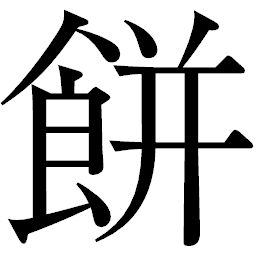
をついた。タノモがキクチヨの上に覆いかぶさるようにして倒れこんできて、とうとう下敷きにされてしまった。
「いてててて！」
「おっちゃま......。カッコ悪いです」
「なんでもいいから早くこいつをどけてくれ！」
タノモが引き出された勢いで、一緒に埋まっていた雷電の溶解した残骸も外に飛び出してきた。ヘイハチがすかさず駆け寄ってくる。
「生きてるんですか、キララさん」
「はい。とても弱いですが、鼓動を感じます」
「聞こえるか。おぬし、名は何と言う」
カンベエはタノモに問いかけた。タノモの目の光は弱々しいが、確かに生きていた。ヘイハチも、キクチヨも「早くどけ！」と声をかける。やがて、タノモの首が軋
む音を立ててゆっくりと動いた。
「おぬしたちは......」
耳障りなノイズを含んだ声だった。発声器官にも障害があるらしい。
タノモは混
濁
した意識の中で、墜落する寸前の記憶を取り戻していた。主砲の閃
光
が視界を覆った瞬間、雷電が自分をかばってくれたような気がする。墜落の衝撃は尋常ではなく、砂地に深くめり込んでいくのを覚えている。強打された体に失神したものの、気がついたときはもう、埋まっていた。
雷電は死に、自分だけがまだ、息があるのか。タノモはゆっくりと手足を動かそうとした。ヒョーゴに右腕を斬られているため、左腕が宙を泳ぐように動いた。少し動くだけで、体中に激痛が走る。声を上げたくなるのを堪
えて、タノモは脚部を動かした。背中の噴射装置に力を入れたものの、砂煙を巻き上げただけの風が出ただけだ。生きているのが不思議でさえあった。
「都に撃たれたと見たが。違うか」
カンベエはタノモを見上げて言った。
「いかにも、そうだ......。都に、否、御天主様に裏切られたのだ！」
タノモは、散らばった残骸を見て吐き捨てた。その目に激しい憎悪を見てとったカンベエは、静かにタノモの正面に歩み寄っていく。タノモはカンベエに、軋みながらも頭を下げた。
「よく、身
共
を見つけてくれた。かたじけない......。何者なのだ、おぬしたちは」
「カンナ村に雇われたサムライ、と言えばわかるのではないかな」
「カンナ村の......！」
タノモの目に強い光が戻りはじめた。怒りだ。不自由な体を起こし、失ったはずのポッドに左手をまわして鉄砲を探る。
「ええい、これもすべておぬしたちのせいだ！ 我が同胞は、百姓と浪人どもに！」
タノモは、ポッドを失ったことに気づき、左手を握りしめてカンベエに叩きつけようとした。カンベエは ごと腰から刀を抜き取ると、拳の一撃を
で受けとめた。タノモの渾
身
の一撃に、カンベエの両足は砂地にめり込んだ。カンベエは正眼でタノモを見据えると、諭
すように言った。
ごと腰から刀を抜き取ると、拳の一撃を
で受けとめた。タノモの渾
身
の一撃に、カンベエの両足は砂地にめり込んだ。カンベエは正眼でタノモを見据えると、諭
すように言った。
ごと腰から刀を抜き取ると、拳の一撃を
で受けとめた。タノモの渾
身
の一撃に、カンベエの両足は砂地にめり込んだ。カンベエは正眼でタノモを見据えると、諭
すように言った。「落ち着いて儂の話を聞け！ 儂らはこれより、ウキョウを斬りに行く。その命、その怒り、同胞のために使わぬか！」
「おぬしたち、何を謀
っておる」
「儂はカンナ村に雇われたサムライにすぎぬ。ただ仕事を果たさんがために都に仕掛ける。それだけだ」
タノモは肩を振るわせて笑った。カンベエの暗い瞳に魅せられていた。
「酔
狂
なことを。話を聞こう。だが身共はこのような体、満足に飛ぶことも出来ぬ。力にはなれぬぞ」
「大丈夫、直せますよ。お任せください」
ヘイハチは早速、ベストから工具を取り出しはじめていた。
「ならば頼む。飛べて、この腕がもっとなめらかに動かせればよい」
程なくして、シチロージが斬艦刀に乗って戻ってきた。タノモがウキョウに対して振り上げたものだったのだ。それ自体が空飛ぶ刀として歩兵が乗り込んで操縦することが出来るこの武器は、大戦中さまざまな局面で活躍した。カンベエとシチロージが、最後の会戦で乗っていたのも同型の機体だった。
◎
「ヒョーゴは失敗しました」
カンナ村を監視する斥
候
から、緊急の書状が届いた。テッサイが書状を持って大会議室に入ると、ウキョウはサネオミをはじめとする差
配
衆
と共に、他の都との交易について意見を交わしているところだった。
進路をカンナ村にとっていた都では、ウキョウの名君ぶりを讚
えて賑
やかである。アキンドたちはどこに行っても提供される米や野菜などを、いかにして街に売りつけるか皮算用に明け暮れている。彼らにとってはウキョウ様々であり、アキンドの治世の勢いは増すばかりに思われていた。
テッサイに耳打ちされたウキョウは、一変して不機嫌そうな表情を浮かべた。
「ちょっと外すよ。みんなは進めてて」
ウキョウはテッサイとサネオミを伴って席を外し、隣室に入った。小規模な会議をするための小部屋であり、内装も大会議室に比べるといささか控えめだ。差配衆のいない場所で、ウキョウは心置きなく声をあげた。
「百姓にやられちゃったの!?
しょうがないなあ、ヒョーゴは。ほんとはすごく弱いってこと？ テッサイどう思う？」
言いたい放題のウキョウに、テッサイは努めて平静に答える。
「この書状は第一報、おっつけ第二報が届くでしょう。現時点では詳しいことはわかりません。何か予想外の出来事があったのかもしれませんが」
「まぁ、よいよ。どっちにしても、僕が恐れてたことがこれで証明されたわけだ。戦を知った百姓の怖さをね。あいつら、一人じゃ何も出来ないくせに大勢いるとひどいことも平気で出来る。いっぱいいると安心するんだよ。そしていつも、誰かを目のカタキにしてる。誰か一人を犠牲にして、自分たちばっかり可哀想な毎日だって嘆いてる」
次第にウキョウの声が重く暗くなってくる。テッサイもサネオミも、どうしたのかとウキョウを見つめていた。
「ああ、ごめんよ。つい、昔のことを思いだしちゃってね」
「昔のこと......？」
テッサイは聞きたかったが、言葉を飲み込んだ。
ウキョウは頰杖をついてうつろな目をしていた。
「テッサイ、斥候は都がカンナ村に近づいたら戻していいよ。もうすぐ必要なくなる」
「御意」
ウキョウは再び口を噤
んだ。〝昔のこと〟を思いだしているのだろうか、その瞳はあまりにも暗く、何も映してはいなかった。
「ねえ、サネオミ」
「なんでございましょうや」
恭
しく頭を下げたサネオミに、ウキョウは呟
くように言った。
「前に僕、貧乏は嫌いだって、言ったよね」
「は......、覚えておりまする」
「これからの世の中は、お金がないとどうにもならないよね」
いつもと声の調子が違う。見守るテッサイも、奇妙に不安にかられていた。
「お金を使うのって、楽しいよね。どうしてもっと早く、アキンドの時代にならなかったのかなあ」
「御天主様、差し出がましいようですが、仰るところの昔のこと、何か御
心
にわだかまっておいでなら、どうぞお話しくださいませ」
サネオミの申し出の行方がどうなるのかと、テッサイも息を呑んでウキョウの返答を待った。
ウキョウは頰杖をついたまま答えない。長い間があった。サネオミもテッサイも、ウキョウが何を思案しているのかと待ち続けた。
唐突にウキョウは欠伸
をした。気の抜けるような声を上げて大きく伸びをする彼に、サネオミとテッサイは肩すかしを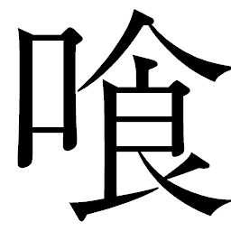
らったように詰めていた息を吐いた。
「やだよ」
ウキョウはやっと、笑みをみせた。
「話したらサネオミ、いくらかくれる？」
「は......」
「お互いアキンドなんだから、この世は売った買ったでしょ、全部。昔のことなんか知って、サネオミに何かいいことある？ それより、これからのことを話そうよ。どんな商いをすれば都が潤
っていくのかをね。僕は流通の仕組みをもっと単純に出来ないかと思うんだ。ただし、都に対するみかじめ料は上げること。市場をもっと競争させて、使えない奴、売れないものはどんどん淘
汰
していかないとね」
楽しそうな口調とは裏腹に、サネオミを見るウキョウの目はあまりにも陰鬱だ。話すわけはないのか、とテッサイは察した。彼の過去は〝スエキチ〟のものであり、今、彼はウキョウなのだ。
◎
ヘイハチによって飛行能力を取り戻したタノモは、傷も癒えぬうちに飛び立っていった。おそらくは各地で百姓と浪人たちの攻撃を受け、瀕
死
の状態になっている野伏せりはまだいるはず。タノモは生き残った野伏せりたちを集め、都襲撃の援軍にするべく出
立
したのである。
都に残る野伏せりの戦力を知るタノモは、わずか五人で戦を仕掛けようというカンベエたちの酔狂ぶりを
笑した。巨象に蟻一匹で挑むような、自殺行為にも等しい襲撃だったが、負けるつもりなど毛頭ないカンベエの暗い瞳に、いつしか引き込まれていた。
笑した。巨象に蟻一匹で挑むような、自殺行為にも等しい襲撃だったが、負けるつもりなど毛頭ないカンベエの暗い瞳に、いつしか引き込まれていた。 修理の間中、タノモはカンベエと話し込んでいた。互いに持ち合わせた情報を繋ぎ合わせ、アキンドに愚
弄
されてきた戦後のサムライたちの日々を思った。この戦は、タノモにとって忍
従
の日々に背を向けるものとなる。自分たちを陥れたウキョウに一矢報いなくては、死んでいった同胞に申し訳が立たない。
「お互いにサムライという言葉からはもう、解
脱
すべきかもしれぬ」
修理を終え、飛行能力を試しながら、タノモは言った。
「カンベエ殿。身共はおぬしにサムライを見る。しかしこれからの世、サムライはもう時代とは添えぬ。都に仕える日々は、身共にそれを思い知らせた。おぬしとて、戦後の日々を見てわかっているであろう」
天主に仕え野伏せりの名を冠されたタノモにとっては、ひたすらに刀と共にあったカンベエは眩
しい。その一方で、都の発展とアキンドの支配の盤
石
を知った彼には、カンベエの生き方はあまりにも不器用に見えた。
「都に仕掛け、生き残ったとして、おぬしはどうするつもりなのだ」
「刀を研
ぐ」
カンベエはさも当然と言わんばかりに答え、不
な笑みを浮かべた。
な笑みを浮かべた。 シチロージやヘイハチは苦笑し、キクチヨは呆
れた。特にキクチヨは、数日前に蛍屋でマサムネが言った「闇は、病
み」を思い出してもいた。この男だけは、どんなことがあってもサムライをやめないだろう。サムライ以外の生き方が出来ないのだ。
「刀を研ぐ」と言い切ったカンベエの言葉の向こうに、サムライとして生きる揺るぎない誇りを感じてタノモは目の光を楽しげに細めた。こんな男が、まだこの時代に生きていたとは。これもまた縁。助かったこの命、この男とともに戦を仕掛けることに胸躍
る自分がいた。
タノモは合流を約束し、夕闇に消えた。
「さて、次は斬艦刀ですね」
ヘイハチは機械油にまみれた頰を、手袋の甲で拭
った。斬艦刀は落下の衝撃のせいか機動に支障が残っていた。都に一刻も早く追いつくためにも、運搬船よりもはるかに速く飛べる斬艦刀で追いかけることにしたのだ。
「ヘイさん、手間かけるね」
斬艦刀の操縦席に乗り込むヘイハチに、シチロージが声をかけた。
「なァに、こちらこそお待たせして申し訳ない。すぐに終わると思うので、皆さんは休んでて下さい」
ヘイハチは機械に触れているのがうれしい様子で、早速計器盤に目を走らせはじめた。
シチロージは、タノモの去った空を見るカンベエに話しかけた。
「よもや野伏せりと手を組むことになろうとは」
「受けた屈辱を晴らす。誇りのために刀をとるのもまた、サムライだ」
「天守閣に攻め込むのは、さて、何年ぶりか......。こんなときゴロさんがいれば、命売りますの一言もあるでしょうに」
シチロージが歌うように言うと、キクチヨも胸を叩いて答えた。
「おう、売ってやるでござる！ サムライなら戦
場
でくたばるのが本望ってもんよ！」
「ぶわぁ～～～～ん！」
突然、コマチが大口開けて泣き出した。驚いたキララがコマチの目線に屈んで、手をとった。
「コマチ、どうしたのです」
「おっちゃま、死ぬのやですぅ！」
「おいおい、今のはだナ、つまりその、オトコの心意気ってこった！ なにも本気で死ぬつもりはねえよ、あったりめえだろ！ おめぇ残して誰が死ぬか！」
キクチヨも慌てて、コマチの目線に屈むとあやすように身振り手振りを交えてとりなした。コマチは涙を袖口で拭きながらも、まだしゃくりあげている。
「ほんとですか？」
「おう！ そんじゃあ、こうしようぜ。こいつを預かっててくれ。これはオレ様のサムライの証しだ」
キクチヨは懐から家系図を出した。
「あーっ、盗んだ家系図！」
「盗んだんじゃねえ、拾った......、あー、まぁ、いいや。ンなことたぁもうどうでもいいんだ。いいか、おめえはオレ様をいっとう最初にサムライって認めてくれた。だから、おめぇに預かっててもらいてえんだ。必ず取りに戻る。約束だ！」
キクチヨのさしだす家系図を、コマチはしっかりと胸に抱きかかえた。
「わかったです。じゃ、おっちゃまもオラと一つ約束するです」
「おう、なんでも言ってくれ」
「おっちゃま。オラが大きくなったら、オラの婿
になれです！」
コマチはけろりと言って、「にひ」と笑顔になった。頰を伝った涙の跡は乾いていないが、弾けたようなその笑顔に、キクチヨは呆
気
にとられて固まってしまった。どう反応していいのかわからなかったのだ。
見守るキララもカンベエたちも、コマチの大胆なプロポーズについ顔がほころんでいた。
キクチヨはへなへなとその場にへたりこむと、コマチの顔を見つめた。
「あのなあ、オレはこんなナリだ。稲刈りもできねえ体だぜ」
「オラ、おっちゃまのこと大好きです。オラが食わしてあげるですよ」
コマチがキクチヨの肩を「元気出せよ」とばかりに軽く叩くと、キクチヨのゴーグルから機械体にもかかわらず感涙が迸
った。
「くううっ！ 泣けてくらあぁ！ ありがとよ！ ほんとにオレでいいのか？」
「はいです！」
元気に頷いたコマチの笑顔に、キクチヨは大きく噴気して立ち上がった。コマチを抱きかかえて小躍りする機械の大男は、そのとき、誰の目にも生身の人間の姿に見えるほどだった。小さく幼い約束ではあったが、キクチヨは自分という存在を認められたようでうれしかったのだ。
「うぉぉーっ！ 早くでっかくなれ、コマチ坊ン！ オレ様、おめぇの婿になるぜ！」
はしゃぎまわるコマチの姿に、サナエの表情も小さくほころんだ。彼女から張り詰めた気がいつの間にか消えていることに、リキチは気づいた。瞬間、二人の視線が交差した。数日前はすぐに目をそらしていたサナエが、今はしっかりとリキチの視線を受けとめている。コマチの素直な言葉は、サナエの心にも大きく響いているようだった。
日没後。運搬船の荷台で、はしゃぎ疲れたコマチが寝息をたてている。あぐらをかいたキクチヨの足にすっぽり収まる格
好
で、丸くなって眠る姿は猫を思わせた。サナエがその前に膝をつき、頰にかかった髪を繊細な指先でそっと耳にかけてやる。愛
おしげな瞳に、キクチヨは思わず問いかけていた。
「おめぇ......、大丈夫なのか」
何が大丈夫なのか自分でもわからなかったが、何か言わずにはいられなかった。
「あなたは死んではだめよ、おサムライ様」
「おう。男キクチヨ、死なぬでござる」
サナエの儚
げな声に、キクチヨは反射的に頷いていた。そのサナエの肩に、リキチは蛍屋から持ってきた毛布をかけてやった。
「夜は冷えるだで。これ、羽
織
ってろ」
サナエはリキチを振り返り、頷いた。お茶の用意をしながら二人を見るキララには、コマチをきっかけにあきらかに二人の間に何かが戻ってきたように見えた。
気温が下がる砂漠で、荷台には簡易ストーブが燃えている。その炎で暖をとりながら、サムライたちはシチロージが描いた都の絵図面をもとに作戦会議を行なっていた。
タノモからもたらされた都の武装の改装状況を、簡単な絵にしたものである。付近の岩の上に広げたシチロージが言い添えた。
「タノモ殿の話を総合すると、現在の都の武装状況はかくのごときものです」
両
舷
に収納された砲塔類の所在は、おおよそは大戦時と変わらない。全方位からの襲撃に対応する各部の対空装備は、接近する者を寄せつけない鉄壁さを誇っていた。だがそれは巨大化を遂げる一方のサムライや機動兵器に対してのみ有効だった。
巨大兵器群の最大の弱点は、サムライだった。刀一本で突っ込んでくる生身のサムライを防ぐ手立てとして、
跳
や鋼筒
が開発されていったのだ。南北両陣営にとって、己の身一つで斬り込んでくるサムライたちは恐怖の的
ですらあった。
跳
や鋼筒
が開発されていったのだ。南北両陣営にとって、己の身一つで斬り込んでくるサムライたちは恐怖の的
ですらあった。 キクチヨは当時のことを思いだし、疑問を口にした。
「いくらドデカい船っていっても、あんたバッサバッサ斬ってたんだろ？ だったら戦もなにも、斬ったら終
いなんじゃねえのか？」
「あれは空だったから出来たことだ。地表近くを浮いているものをあのようには斬れぬ」
「そうですよ、問題は主機関です」
荷台の横で斬艦刀の修理を行なっているヘイハチが会話に入ってきた。
船体後部の半分を占める巨大な紡錘形が、主機関である。いくつもの支柱によって吊り下げられた構造であり、脆
弱
な接合部分を覆うように周囲の装甲は厚くなっていた。
斬艦刀の推進機関部分を、装甲を開けて修理するヘイハチの側
に、「どうぞ」と声がかけられ、湯飲みが置かれた。
キララは茶を淹
れて、カンベエたちに配っているところだ。ヘイハチは笑顔で彼女に感謝して、話を続けた。
「下手に撃沈させて爆発させたら、その破壊力の影響は計り知れません。このあたり一帯の土地は穢
れて死にます。カンナ村の近くでそうなってしまっては、村を救うつもりが逆に滅ぼしかねない」
「ということは、ヘイさんの好きな米を育てる土地が消えると」
シチロージは湯飲みを口に運ぶと、言った。
「ですね。米のためにもがんばらねば」
「じゃあ、どうすりゃいいんだよ」
キクチヨは結論を急がせる。
「切り離すのが一番でしょうね。どうでしょう、カンベエ殿。式
杜
人
から貰った爆薬が役に立ちそうですよ」
「既に策は出来ているな？」
顎
鬚
をなでながら、カンベエは
ねた。
ヘイハチはてるてる坊主と同じ笑顔で、頷いた。
「おおよその段取りは」
「主機関はヘイさんに任せるとして、カンベエ様。我ら、いかに攻めます？ タノモ殿を待ちますか」
シチロージは身を乗りだす。カンベエは伏し目がちに答えた。
「都の速度を思えば、タノモ殿を待っているわけにはいかぬ」
「では、策は」
「ない」
きっぱりと言い切ったカンベエに、男たちは意外だ、という顔をした。砂漠に見張りに立ち、会話を背中で聞いていたキュウゾウでさえ肩越しに振り返った。常に策を講じて敵に臨
んでいたカンベエにしては、あまりにも、らしくない言葉だ。
「またまたァ、ウソだろ、おっさん」
キクチヨはまぜっかえしたが、カンベエは静かに茶を啜
るだけだ。
「刀さえあればよい」
泰然としたその横顔に、シチロージは得
心
したように不敵な笑みをみせた。
「策なきカンベエ様。これは、勝ち戦になりますか」
「なれば、死ぬやもしれんな」
素っ気無い言い方だった。盆を持ったキララは、茶を飲み干したカンベエの目に、戦に臨み昂揚している光を見た。カンベエが振り返る。今度は、キララは目をそらさなかった。
もうすぐ、別れなければならない。側にいられるのもこれが最後かもしれない。
訴えるようなキララの瞳を、カンベエは受けとめていた。そしてそのまま、リキチを呼んだ。
「リキチ。頼みがある」
サナエの側で座って、サムライたちの話を聞いていたリキチは居住まいを正した。
「斬艦刀の修理が終わり次第、夜明けを待たずして我らは出立する」
カンベエはキララから目をそらし、リキチを見た。突き放したような言い方は自分に向けられたものだとキララは悟った。カンベエは自分の気持ちに気づいているのだ。
「娘たちを頼む。無事に村に連れていくのだぞ。それがお前の務めだ」
「へえ！」
リキチは眉を吊り上げ、膝においた拳を握って力強く頷いた。
キララは物憂げに目を伏せた。
藤
に心がかき乱される。
カンナ村は、再び夜のない一日を迎えていた。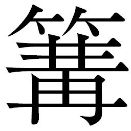
火
の炎が煌
々
と村を照らす中、橋の袂
にはあの巨大弾道弾発射装置が運び出され、以前に比べれば小振りながらも切り倒した大木を鋭利に削り出した丸太の矢が装
填
された。
野伏せりとの戦いで編成された組分けが、今回も活かされた。弾道弾を準備する者とは別に、野伏せりから奪った鉄砲を鉄柵に括
りつけて固定した組はゴサクが率いている。弾薬の入った木箱が鉄砲組の脇に山積みされた。
陣頭指揮をとるのはカツシロウだ。早亀を駆って忙しく各組の様子を見てまわりながら、以前の戦いが村人たちに与えた影響をまざまざと見せつけられ、改めてカンベエの手腕に感じ入るものがあった。村人たちの危機管理能力は、カツシロウの想像をはるかに超えていたのだ。自分が特に指示を出さずとも、男たちは戦闘準備を整え、女たちは男たちのために飯を炊き、握り飯の準備をした。カツシロウが出した指示といえば、接近する対都のために長距離主体の攻撃を想定したことぐらいである。
準備のできた組ごとに「準備よし！」の声が上がり、伝令役のヨヘイのもとにすべての連絡が届いた。橋の袂に立ったカツシロウのもとに走ってきたヨヘイは、息を切らせて報告した。
「カツシロウ様、みんな準備出来ただよ。あとは、どうすればいい」
「御苦労。これからは三交代で待機だ」
カツシロウは不意に、気配を感じ取って振り返った。石積みの壁に寄りかかるようにして、腹部にサラシを巻いたヒョーゴが立っていた。彼の視線を意識しながら、カツシロウはヨヘイに言った。
「私は橋向こうで物見に立つ。火急の折は鳴子で知らせる。よいな」
「へいっ」
早亀を駆って橋を渡ったカツシロウは、強襲揚陸艦の残骸が倒れた辺りにやってきた。残骸を楯
に見立てて、カツシロウはここを最前線とし、鉄砲部隊を配備していた。カツシロウを認めた男たちは会
釈
してくる。これに頷いたカツシロウは、残骸を利用して作られた物見櫓
の上に乗ったモスケに声をかけた。
「異常ないか」
「大丈夫だで。異常ねえだよ」
カツシロウは、はるか前方の闇に目をこらした。昂
った神経が五感を研ぎ澄ます。視界の向こうは、月光に淡く照らされた景色だ。いまだ都の機動音は聞こえてこなかった。
◎
深夜、運搬船はカンナ村に向かって全速で飛行していた。操縦方法をヘイハチに教えてもらったリキチは、慣れない機械に緊張しながらも言われたとおりに飛行を続けている。
既にサムライたちはいない。斬艦刀で先行してしまったのだ。
荷台ではコマチがサナエの膝を枕に、毛布をかぶって眠っていた。サナエはなぜか眠ることが出来なかった。離れて、ぼんやりとうつろな目をしたキララに視線を向ける。キララは夜空を見上げていた。
コマチが突然、飛び起きた。何かにせき立てられるように、きょろきょろとあたりを見回した。
「おっちゃまは!?
」
不安なあまり、コマチの声は震えていた。
「もう行ってしまったわ」
サナエはコマチを落ち着かせるように、つとめて抑制した声で言った。だがコマチの目にはみるみるうちに涙があふれ出してくる。
「おら、おっちゃまにいってらっしゃい言ってないです」
「水
分
り様は、言うのを許されなかったわ」
意味がわからず姉を見やったコマチは、その変化に目を瞠
った。
キララの左手首に巻かれているはずの振り子の革紐が千切れている。彼女の右の掌
には、振り子が握られていた。驚いたコマチはキララに駆け寄った。
「姉
様
、それ、どうしたですか」
妹を振り返ったキララの唇はわななき、涙が浮かんでいた。何があったのかとコマチは瞳で問いかける。姉のこんな表情を、今まで見たことがなかった。
「忍ぶと決めてきたのに。愚かでした」
キララの声は震えていた。一部始終を見ていたサナエは、記憶の中にある毅
然
とした姿と現在との差異に、キララが巫女という衣を完全に捨て去ったのだと悟った。彼女がサムライたちとの別れ際に放った言葉は、純粋に人を恋うる者の叫びだった――。
しかしキララは、涙が一筋頰を伝いながらも、コマチの前ではいつものように穏やかな声
音
であろうとしていた。身についた巫女としての律し方が、知らず知らずのうちに彼女を厳しく戒
めようとする。
「もうすぐ戦が始まるというのに、こんなことで苦しむなんて私は甘えてますね」
「水分り様、それはきれいごとというものです。そんなことを言ったら、人を好きになったあなたの心が、かわいそうです」
サナエははっきりと、毅然としてキララの感情を促した。思わぬサナエのしっかりとした物言いにキララもコマチも驚く。サナエはさらに、続けた。
「本当は抱きしめてほしかった......水分り様、違いますか」
それが引き金だった。キララのわななきが急に強くなり、嗚
咽
をこらえるように肩が震えた。たまらずに口元をおさえた。嗚咽がこぼれでた。なぜ、こんな感情を持ってしまったのだろう。いつからだったのだろう。そして、何を求めていたのだろう。ただ一度、ふれあいたかった。長い間側にいて、体が触れたのは一度だけ。虹雅峡で、身を投じた自分を助けてくれたときだけだ。しかしその想いは、表に出すことなく終わった。そうなることも、薄々わかってはいた。なのに感情を抑えきれなかった。
「わかってはいたのです。言葉にしたら、もう止められなくなってしまう。次は、体ごと伝えたくなってしまう。なのに、伝えずにはいられなかった......」
うつむいたキララの閉じた瞼
から、涙があふれ、こぼれ落ちていった。長い髪が表情を覆い隠す。涙が振り子に落ちた。淡く波立つ光が、涙を受けてほんのりと光った。コマチは振り子を持つキララの右手に、自分の両手を重ねた。
「祈るです、姉様！」
「コマチ――」
「絶対絶対戻ってくるって、祈るです。オラたちは水分りの巫女、お祈りするのが仕事です。仕事を果たすです！」
泣きじゃくりながらも姉を叱咤するコマチを、キララは強く抱きしめた。
「あなたの言うとおりですね、コマチ」
こんなにも涙を流したのは、生まれて初めてかもしれない。感情の発露というものを、キララは初めて経験していた。
◎
夜明け前。灰色の朝
靄
がカンナ村を覆い尽くしていた。
物見櫓ではモスケがとうとう高鼾
である。
その下では早亀を降りたカツシロウが、前方に目を凝らしていた。靄が動いた。風の動きがかわった。靄の向こうで、光の明滅が見えた。一つ、二つ、次第に数が増えてくる。
それが何か気づいたとき、カツシロウの体はカアッと熱くなってきた。
「モスケ、起きろ！」
モスケは飛び起きた。慌てふためき、柱に頭をぶつけて涙目になる。
「来たぞ。都だ！ 鳴子を鳴らせ！ 早く！」
「へっ、へいっ！」
モスケの体から緊張の汗が噴きだし、鳴子の紐を摑むと力いっぱい引いた。不規則な音が朝靄をかき乱す。紐で村へとつながった鳴子の音は、うとうとしていた村人たちを叩き起こすに十分だった。交代で現場に立っている村人たちも、家で眠っていた者たちも、ついに来た都に皆、緊迫の面持ちで動き出した。
持ち場へ走る者たちの中で、ただ一人、ギサクだけが水車小屋の前で大将のように超然と立っていた。
「やるべし！」
その側には、なぜかオカラが。
「いよいよだなや。しししし......」
早亀が何かを怖れて、いなないた。
靄の向こうで小さな光が瞬いたかと思うと、瞬時に靄を裂いて眩
い閃光が広がってきた。迫り来る閃光の放熱と圧力に、カツシロウは退かぬ覚悟で抜刀すると両足を踏ん張り、吼
えた。刀身に超振動が走る。そのときには、光はもうつばさ岩まで達していた。村を守る。その一心で、彼はさらに刀身に力を込めた。
村に突き刺さらんと放たれた主砲の光
撃
をカツシロウは力で受けとめた。
「うおおおおっ！」
大容量のエネルギーと凄まじい放熱が、カツシロウの刀の振動によって増幅反射され、着衣や足元の雑草をぶすぶすと焦がしていった。逃げる間のないモスケのいる物見櫓も焦げていく。後方に控えた鉄砲隊も腰を抜かし、とても目を開けていられるものではなかった。
カツシロウは圧力に耐え、腹の底から怒号を搾
り出すと同時に刀を振り切った。
刀に滞留したエネルギーは反射され、まっすぐに都へ跳ね返されていった。
カツシロウに反射された光撃は、そのまま都に向かって突き進み、あろうことか都の砲塔の一部を破壊した。爆発と振動に船体が激しく揺れ、立ち並んだ大
店
の差配衆は瞬く間に恐慌状態に陥り、相次いで脱出艇に押し寄せていた。
カンナ村まではまだ距離がある。ウキョウは主砲一発で村人たちを威
嚇
してやろうと謀ったのだが、信じられない結果に呆気にとられるばかりだった。
「なにこれ。どういうこと」
「主砲が反射されたと思われます。これはまさに、サムライでなければ、刀でなければありえぬこと！」
「サムライ？ テッサイも出来るの、それ？」
「は、恐れながら、自分もそのくらいなれば」
「じゃあ、今度打ち返されたらテッサイが打ち返してよ」
天覧の間に備え付けられた大窓には、艦首の望遠レンズが最大倍率でとらえた映像が映り込む。そこにはまさに、つばさ岩の後ろでカツシロウが刀を構えて立っている姿があった。
「あいつかぁ」
ウキョウは脚を組んで笑った。
「ずいぶん強くなったじゃないの。百姓たちもずるいな、結局サムライ呼んで、本気で都に喧
嘩
を売るってわけだ」
サネオミは額
に汗を滲
ませて進言する。
「恐れながら御天主様、主砲を用いるは危ういのでは」
「自分も大差配殿に賛成です。かつて大戦の折、この本丸を一撃のもとに沈めることが出来たのはサムライにございます」
ウキョウは不機嫌そうに口をとがらせた。
「機械のサムライの手術は、もう終わってるんだよね。出すよ」
格納庫で眠っていた野伏せりたちは、自分の身に何が起こったのかわからぬまま、通電されて起こされた。瞳の輝きは意志を持った野伏せりならば白色のはずが、赤く変化している。洗脳手術をされた彼らはもう、言いなりの文字どおりの機械だった。
「みんな。おはよう」
ウキョウの声が伝声管を通じて野伏せりたちの頭上に降ってくる。その声を背に野伏せりたちは発進口に向かっていった。
近衛兵たちが舷側の発進口に待機し、開閉機構を操作する。
「開門！」
合図と共に発進口が開いた。次々に飛び立っていく紅蜘蛛と雷電は、雲霞のごとく都の四方に展開した。
大窓から空を埋め尽くさんばかりの野伏せりを見たウキョウは、サネオミに
ねる。
「ほんとに僕の言うことしかきかないの？」
「お試しあそばされませ」
ウキョウはいたずらっ子のようにくしゃくしゃの笑顔になって、思案する。
「じゃあねえ......、お手！」
見下した物言いだった。空に響くウキョウの声に、なんと紅蜘蛛も雷電も、一斉に天守閣に向けて右手を「ちょうだい」とばかり右手に差し出した。
このさまを見たウキョウのはしゃぎぶりは尋常ではなかった。野伏せりの意志を完全に我がものとした快感に酔いしれ、手を叩き、脚をばたばたさせて笑い転げた。
「うわあ、よいねえ、すごいねえ、愚かだねえー。見てよ、あのバカヅラ！」
テッサイは見ていられず、目をそらした。強さを求めて機械化してきた大戦時の文化が、このような結果になるとは。人の意志まで弄
ぶウキョウの憎悪の深さに空恐ろしくなっていた。
だがアキンドは違う。ウキョウと結託したサネオミも拍手をしていた。
「まこと、お見事にあらしゃります」
「野伏せりなんて、憎らしくてたまらなかったけどね。手なづければかわいいものだねえ」
「しかしながら御天主様、たかが小さな農村ひとつ。これほどの数は必要ありますまい」
「手加減しちゃだめだよ。商いで妥協したら、相手に舐められるばかりじゃないか。商売敵を蹴落とすと思えばいいんだよ」
「なるほど、ごもっともにあらしゃります」
サネオミの異常なまでの忠誠は、ウキョウとともにいることで甘い汁を吸えるという一点のみだ。ウキョウがアヤマロを利用してきたように、サネオミもまたウキョウを利用して儲けを企
んでいるのかもしれない。アキンドの欲深さはサムライの出世欲以上ではないのか。テッサイはウキョウたちをまともに見ることが出来ず、大窓から見える哀れな機械たちを見つめていた。
「野伏せり一番隊、突撃！」
最前線の雷電隊十人が一斉にカンナ村に向けて加速をかけた。
◎
つばさ岩の後方では鉄砲隊の弾込め作業が始まっていた。モスケも今や物見櫓を降り、鉄砲隊に参加している。自分の顔ほどもある大きな弾丸を装
填
しようとするモスケの手は、震えていた。覚
束
ないその手つきにカツシロウが叱咤する。
「しっかりしろ。戦うと決めたのであろう。今まで虐げられてきた恨み、怒りを叩きつけろ！」
装填を終えたモスケは鼻息荒く、唇をきつく結んで胸を張った。カツシロウはモスケの顔を見て、まさに般
若
顔とはこのことか、と感じ入る。
朝日が昇るとともに靄が薄れていく。その中から、一番隊の雷電が斬艦刀を振り上げて飛来してきた。
「来るぞ！ 野伏せりから奪った鉄砲で、奴らに思い知らせてやるのだ！ 撃て！」
野伏せりの姿に怯
みながらも、強襲揚陸艦を楯にした鉄砲隊は一斉に引き金を引いた。鉄
に縛りつけて固定しているとはいえ、やはり機械のサムライのために作られた大型の鉄砲の反動は凄まじく、噴きだすガス圧にも驚いた村人たちの数人がひっくり返った。耳を聾する銃声の凄まじさに怖じ気づく者もいる。
だが撃ち出した数発は、突っ込んできた雷電二人を直撃した。胸を射貫かれて墜落、爆発する雷電を見て、村人たちは歓喜の声をあげた。誰もが血走っている。戦場に変わった田畑の上空に、爆煙が舞う。
「やったぞ、やったぞ！」
「おお、野伏せり突っ殺した！」
「気を抜くな！ 第二撃用意！」
カツシロウの号令で鉄砲の二発目の装填作業が始まる。この空
隙
を埋めるのは矢
榴
弾
を構えた弓隊である。気
合
砲
の充
填
にかかる雷電たちに次々に矢榴弾を浴びせて攻撃の手を緩
めない。
雷電隊も矢榴弾を敏
捷
にかわしながら、ついに気合砲を撃ち放った。強襲揚陸艦の残骸がなければ直撃されていたかもしれない。相次ぐ光撃に、鉄砲が炸
裂
した。村人たちが爆発に巻き込まれ、血を噴いて倒れる。カツシロウは残骸を蹴って跳躍すると雷電に斬りかかった。
雷電を真っ二つに斬り伏せたカツシロウは、返す刀で斬艦刀を降り下ろしてくるもう一人の腰部を水平斬りした。脆
弱
な部分が切り裂かれ、雷電はのけぞって爆発する。爆音の余韻が、轟々と空気を震わせる。矢榴弾の援護を受けてカツシロウは相手を見た。見えている。雷電の動きが見える。確実に、斬る自信をもって刀をふるう。残る三体から放たれた気合砲が彼の肩をかすめた。羽織が裂け、血が滲む。カツシロウは痛みを感じなかった。憑
かれたような目で雷電たちに斬り込んだ。その気迫が、彼の勝機を生んだ。
三体を斬り伏せて着地したカツシロウは、膝が崩れそうになりながらも、もちこたえた。倒した野伏せりたちの爆発音が散発的に響く中、倒れた百姓たちの呻
きが重なっていた。カツシロウは彼らの側に屈み込むと、声をかけた。
「皆、しっかりしろ。モスケ！ 負傷者を村に運ぶんだ。鉄砲隊は村まで撤退だ！」
しかしモスケはカツシロウの言葉が聞こえていないかのように、はるか前方を見て立ち尽くしていた。その目は驚嘆と怯えに揺れていた。
カツシロウはモスケの視線を追って振り返り、愕
然
となった。
彼方
の岩盤地帯の上を悠然と飛ぶ都と、その周囲に無数に飛ぶ野伏せりたち。距離はまだ十分にあったが、あまりの大きさに遠近感が失われ、すぐ目前にまで都が迫っているような錯覚にとらわれる。昂っていたカツシロウの心は、一気に冷水を浴びせられたように萎
縮
し、鼓動が早まった。信じられない野伏せりの数、そしてその中央にそびえる都の、恐ろしいまでの巨大さ。
「勝てねえ......、あんなもんに、どうしたって勝てるわけがねえ！」
モスケは恐怖のあまり失禁していた。もはや戦どころではなかった。動ける者は倒れた者を抱え起こし、村へと逃げるように走り出した。
「怯むな！ 村の中で態勢を立て直し、反撃の準備をするんだ！」
村人たちの悲鳴に自分を取り戻したカツシロウは怒鳴ったが、聞く者はいない。
カツシロウは早亀の手
綱
をとろうとしたが、足元に着弾を浴び、残骸にはりついて辺りをうかがった。自分の周囲の地面に、朝日を浴びた野伏せりたちの影が近づいてきた。上空を見上げる。紅蜘蛛による二番隊が来たのだ。
野伏せりたちは三人。それぞれの武器を構えてカツシロウを包囲するように、ゆっくりと降下してきた。カツシロウは刀を構え、油断なく空の三人に視線を走らせて隙
を見せない。
包囲して鉄砲を向けていた紅蜘蛛たちに、しかし次々に矢榴弾が命中した。顔を、胸を抉
られて爆発した紅蜘蛛たちは爆発四散する。燃え落ちる破片と機械油、生体維持の溶液が雨のようにカツシロウに降り注ぐ。いったい誰が、と顔を上げたカツシロウの目に、一体の鋼筒
が飛来してきた。
新手か、とカツシロウは刀を構え直す。しかし彼の前で滞空した鋼筒から、天
蓋
を跳ね上げて操縦者が顔を出した。
「やあ、来ていたんですね、カツシロウくん！」
鋼筒に乗っていたのはヘイハチだった。
第二十八章 堕ちる！
「御
天
主
様
！ 後方より斬
艦
刀
！」
「はーん？ 斬艦刀？」
血相変えて天覧の間に飛び込んできた近衛兵にも、ウキョウは気のない返事だ。大窓に映し出された後方の拡大映像を見ても、組んだ長い足をぶらぶらさせながらゆったりとした姿勢で玉座に座っていた。
都
に向かってまっすぐに飛んでくる斬艦刀の峰には、サムライたちが仁王立ちになっている。尖端にはキュウゾウが立ち、その後ろにはキクチヨが大
太
刀
を担
いでいた。カンベエは操縦するシチロージの前に立っている。突風に長い上着の裾をはためかせながら、男たちは都を見据えていた。
「島田カンベエ......」
テッサイが呟
いた。
「斬艦刀をどこで手に入れたのやら。追いつくとは、まこと大したもの」
サネオミの口調に危機感はない。圧倒的な数の野伏せりを前に、刀一本、前後あわせてわずか六人のサムライで挑みかかってくるなどもはや常人のやることとは到底思えないのだ。
「やっと来たね、カンベエクン。しつこいなあ、ホント。都はこのままカンナ村に向かってよね」
「都に斬艦刀ごと突っ込んで白兵戦にでも持ち込むつもりでしょうか」
揺るがない進路に、テッサイが意見を述べた。敵の手を読もうとするテッサイに比べ、大差配サネオミはもっと単純に考えていた。
「いかがでしょう、相手はたかが六人、機械にした野伏せりたちでひとひねりできるのでは」
ウキョウはサネオミに含みのある目を向けた。サネオミが驚くほどの、
んだような色があった。
「君は、自分の斬首獄門を反撃の見世物に変えたカンベエクンのことを忘れたの？ 奥御殿で捕まったのは助かる算段があったからだ。あの男はね、正面突破すると見せかけて絶対に二の手、三の手を仕込んでる。勝てる戦
しかやらないんだよ。絶対に甘く見ちゃだめだ」
ウキョウは伝声管を取り上げると、野伏せりたちに命令した。
「天守閣守備隊以外の野伏せりは、みんな回れー、右！」
「御
意
！」
都を守るように展開し、カンナ村へ向かっていた野伏せり大軍団は、攻撃の矛先をあっさりと反転させた。数え切れないほどの野伏せりが一斉に反転するさまは壮観でさえあった。
抜刀し、鉄砲を抜き、斬艦刀へと雪崩
をうって襲いかかってくる野伏せり。都の両舷
を一気に飛び去り、船尾へと達する。十重二十重の陣形を組み、斬艦刀を阻むべく視界すべての方角から襲いかかってきた。
「おほーっ！ 盛り上がってきたぜ！」
キクチヨは大太刀を派手に振り回した。キュウゾウは二刀流を抜刀する。カンベエも柄
に手をかけ、視界にとらえた敵陣を頭の中に叩きこんだ。数で圧する気か。いまだタノモの影は見えない。もとより刀一本で臨
んでいた戦だ。
大窓に映る野伏せりたちの威圧感は凄まじいものがあった。斬艦刀一つで突っ込んでくるカンベエたちを叩くには、あまりにも力の差は歴然だ。小さな人間にここまでする必要があるのかと、サネオミはウキョウに問いかけた。
「みんな、であらしゃりますか。カンナ村はどうされまするか」
「今怖いのはカンベエクンだ。百姓の戦力は、あいつらがどんなにがんばろうと、意識が変わろうと、たかが知れてる。でも、カンベエクンはサムライだよ？」
百姓の場所から世間を見てきたウキョウと、アキンドとしてサムライの上に君臨してきたサネオミの視点にズレがあったようだ。しかしサネオミは意見をすぐに退
いて、長身を折って頭を下げた。
天守閣守備隊は前方のカツシロウとヘイハチを警戒している。彼らを残し、ウキョウは大声で攻撃を指示した。
「やっちゃって！」
「おおーっ!!
」
野伏せりたちがあげる鬨
の声は凄まじい地響きとなって空気を震わせた。
巨大弾道弾の発射はいつでも可能だ。ゴサク、ヨヘイ、マンゾウ他の男たちがそのときを今か今かと待ちかまえていたところに、野伏せりたちの反転と轟
々
と響き渡る鬨の声があがった。
村人たちは一気に恐怖し、次第にはっきり見えてくる都と野伏せりたちを前に戦どころではなくなった。弓を投げ出し、頭を抱えてマンゾウが泣き叫びはじめた。
「マンゾウ！ おめぇ、うるさいぞ！」
「だってよぉ、だってよぉ、おっかねえんだよぉっ！ おらぁ、死にたくねえ！」
マンゾウのわめきは他の村人にも伝
播
していく。士気が乱れた。やってきたギサクは苦々しく都を見つめた。その目がふと、怪
に揺れた。
鉄砲隊としてつばさ岩近くに待機させた男たちが、傷ついた体をひきずるように帰ってきた。みな引きつった顔で、血まみれの者もいる。ゴサクたちはすぐさま彼らに駆け寄り、手を貸して鉄柵の内側に連れ戻してきた。
「どうしただ、やられたんか！」
「大丈夫だ、まだ誰も死んじゃいねえ。あのな、来てくれたんだ、ヘイハチ様が、来てくれた！」
怪我人をヨヘイに預けて安
した男が、その場に膝をついて酸素を貪
りながら言った。ヘイハチの名前にゴサクたちが驚いていると、モスケが橋を大きく揺らして駆けながら叫んだ。
「おおいっ！ おさむれえ様たちがみんな、戻ってきただ！ カンベエ様も、キクチヨ様も！」
それはまさに百万の援兵の到来であった。打ち震えていた村人たちの表情が一変した。カンベエが来た。キクチヨが来た。ならばまだやれる。停滞していた士気が昂
揚
し、一度は捨てた武器を各
々
が取り上げた。
村人たちの再武装の音を聞きながら、ギサクははるか彼方の靄
に目をこらした。
「おめたちゃ、逃げたら承知しねぇぞ！ おサムライ様たちは、野伏せりが村ぁ来るの食い止めに来てくれただ！ そんでも野伏せり来るようなことがあったら、鉄砲さ撃って助太刀するだで！」
カンベエたちの足場は斬艦刀の峰だけだ。キクチヨは気合いで立っているが、キュウゾウやカンベエは慣れたものである。操縦するシチロージが、風防から声をかけた。策なきことが策であろう、とシチロージは思っている。それでも、確かめずにはいられないことがあった。
「カンベエ様。やはり、策はなしですか」
「無論だ。なぜそんなことを聞く」
「あなたのことです。二手三手先を読んでくるウキョウの裏をかくための無策という策かとも思っています。しかし、気になるのですよ。あの子の想いを断つために、もしやこの無策、わざと言ったのかと」
カンベエの瞳は群がる野伏せりに向けられ、曇りなく澄みきっていた。
数時間前。
修理の終わった斬艦刀に飛び乗ったシチロージが、主機関を起動した。高鳴る起動音を心地よく聞きながら、ヘイハチは鋼筒
に乗り込んだ。
「さあ、参りますか」
ヘイハチに促され、キクチヨは運搬船の荷台で立ち上がった。
キクチヨの家系図を抱いたコマチは、サナエの膝で寝息を立てている。サナエはいたわるように毛布を駆け直してやった。
「じゃあな。コマチ坊ンのこと、よろしく頼まぁ」
「皆様、どうか御武運を」
リキチはまなじりを決して、生
真
面
目
に直立するとカンベエたちに頭を下げた。
「いろいろ、ありがとう存じましただ」
「カンナ村で会おう」
カンベエはリキチに頷
くと、彼の隣に立ったキララにも黙礼した。
キュウゾウが飛び降りると、キクチヨがこれに続いた。
風をはらんだ髪が揺れた。カンベエの冷厳な横顔は月光のもとでさらに鋭さを増したように見えた。身を翻
し、運搬船を降りようとした。
行ってしまう......。キララは自分を抑えきれなかった。光る振り子のほのかな熱は、そのまま彼女の気持ちだった。我知らず、つい追いかけるように数歩、踏み出していた。
カンベエは歩みをとめない。
キララは、必死に気持ちを抑えた。戦の前なのに、
藤
があった。行ってしまう。何も言わないままでは、何も変わらないと思った。何かを求めて村を出てきた。変わりたい自分がいた。感情のままに笑い、泣き、言葉を吐ける自分になりたかった。
〝恋をしなさい〟ユキノの言葉が蘇
った。せめて一度。振り返ってほしかった。旅立つサムライに、恋うる者として言葉を――。
キララは振り子の水晶を摑んだ。二度と巫
女
に戻らぬ覚悟で、振り子をつなぐ紐を引きちぎった。
「カンベエ様！」
「儂
を待つな」
千切る音を聞きとがめたカンベエは、立ち止まり厳然とした声を放ってキララの言葉を遮
った。
カンベエは振り返らない。広い背中は、キララとの距離という事実を突きつけた。
それが、答えなのだ。キララの瞳が潤
んだ。どこかで、カンベエが振り返らないだろうと思っていた。シチロージが言う優しさのかたちだと理解してもいた。なのに感情が掻
き乱される。
二人の間を、風が吹き抜けていった。見守る者たちにも言葉はない。キララの辛さも、カンベエの気持ちもわかる。互いに互いを想い、気遣ったがゆえの拒絶と、理解だった。
「儂の心はとうに涸
れている。水の匂いは見い出せまい」
カンベエは最後まで振り返らなかった。
シチロージはあの別れを思いだすと胸が痛む。
「罪なお方だ。昔からそうだった」
カンベエは無言のままだ。
「これからどうするんでしょうね、あの子。全部捨てるつもりだったんですよ」
「無駄口が多くなったな」
抜刀したカンベエに、シチロージはただ苦笑いするだけだった。
サムライを貫こうとする生き方に、今まで出会ってきた男も女も惚れ込んできたことを〝古女房〟シチロージは知っている。現にこうして、一文にもならない戦に身を投じる愚か者がカンベエのもとに集まっている。しかし惚れ込むのはこちらの勝手。カンベエはただひたすらに、サムライとして生きようとしているだけだ。今も彼は両手でしっかりと柄
を握り、精神統一をもって刃
に超振動を与えている。
「何をごちゃごちゃぬかしてやがんだ、来るぜ！」
キクチヨは峰で足を踏ん張り、大太刀を上段に構えた。雷
電
は気合砲の充
填
をし、紅
蜘
蛛
は鉄砲を構える者、斬艦刀をかざす者、大型軍刀を構える者とさまざまだ。ついに第一陣が上下左右からカンベエたちに襲いかかってきた。
先陣を切ったのはキュウゾウだ。紅蜘蛛たちの大型軍刀を左右二本の刀でたやすく弾くと、そのうちの一本を蹴って跳躍した。赤い上着が風をはらんで翻った。
斬る！ 紅蜘蛛たちの斬撃を右で受けとめ、左で斬り捨てる。倒れ、宙空で揺らぐ紅蜘蛛の胸を蹴って舞い、雷電の放った気合砲が同士打ちになるように仕向ける。生体部品を切断し、噴出する体液と機械油を頰に受けたキュウゾウの横顔が妖
艶
に笑みを浮かべた。一太刀浴びせるごとに体中の血が滾
り、骨が、筋肉が、刀と一つになっていく。
雷電の気合砲と紅蜘蛛の鉄砲による飛び道具を、シチロージは巧みな操縦でかわした。カンベエはそれらをすべて見切り、受け、弾き、斬り込んでくる紅蜘蛛や雷電には跳躍して容
赦
のない一刀を叩きつけた。腹を切断する。首を刎
ねる。腕を斬り落とす。弾丸を真っ二つにする。心臓部を貫かれ爆発する者は、群がる仲間を巻き添えにした。
次々斬り倒しながら、キュウゾウは相手の太刀筋に生の脈動を感じなかった。
「野伏せりの手応えが違う」
「うむ。魂を抜かれた屍
に等しい！」
カンベエも同様の印象を持っていた。紅蜘蛛からも雷電からも、勝つという気概が感じられない。サムライは殺し殺されることを生
業
とする者、それが魂なき人形となったのでは、生に執着し生き残ることを勝ちとする理屈も成り立たない。これは、斬り合いではない。消耗戦に過ぎない。
「まさか、天
主
がなにやら細工を？」
風防の中でシチロージが声を上げると、カンベエは頷いた。
「おそらくな」
カンベエは吐き捨てた。あまりにもサムライを愚
弄
しているではないか。
「けっ、都に仕えたサムライの成れの果てが、人形にされちまったってことか！」
キクチヨは大太刀を力の限り振り回し、光
撃
を叩き斬って叫んだ。
サムライたちの五感はすべて、戦い、生き残るためにのみ機能した。正面も背面も、隙はなかった。後ろから斬り込む紅蜘蛛には背面を見もせずに気配だけで位置を悟り、逆手に持ち替えて突いた。目玉を貫かれ悲鳴を上げた紅蜘蛛は空中でバランスを崩し、気合砲を撃とうとした雷電に激突した。気合砲の暴発が二人を粉砕する。
接近する都の後方で、空は爆発による灰色の爆煙が広がっていく。カンベエたちが果
敢
に戦っていることはカツシロウにも見てとれた。ずっと口呼吸だったため渇き切った喉を潤そうと、唾を飲み込もうとして、出ないことに気づいた。あそこに行きたい！ カツシロウの鼓動は高まった。
彼の気持ちを見透かしたように、鋼筒
の上からヘイハチが手を伸ばした。
「さ、一緒に。カンベエ殿も案じておりましたよ」
「都には、私のやり方で行く」
我に返ったカツシロウは一瞬だけ逡
巡
を見せたものの、ヘイハチに背を向けて早
亀
に跨
がるや橋を渡って村へ戻っていった。
「ずいぶんとまあ、ひねくれたもので......」
カツシロウが飛び出していった経緯を聞いていただけに、ヘイハチは苦笑いして頰をかくばかりだ。やむなく鋼筒を転進させ、都に向けて飛翔する。野伏せりの大部隊がカンベエたちに集中しているのはありがたかった。天守閣守備隊の死角をついて、船体下部から主機関に接近をはかるつもりだ。
数と力で押しているはずが、群がっても群がってもカンベエたちは切り崩し、まっすぐに進んでくる。
「斬艦刀、いまだ都に向かっております」
テッサイの淡々とした報告に、ウキョウはつまらなそうに頰杖をついた。
「どうしたんだよ、カンベエクン？ 裏をかいて何か仕掛けてくるんじゃないの？ なんでそんなにまっすぐ飛んでくるの？ キミはそんなに頭の悪いサムライだったの!?
」
ウキョウは自分のこの心理的動揺こそがカンベエの策だと気づいた。カンナ村での戦闘も、都での脱出劇も、常にカンベエはこちらの意表を突いてきた。今度も同じではないか。カンベエは何かやる、という先入観がウキョウの先手を妨げてもいた。自分のぶざまさ加減がまた不快だった。サムライごときに負けたくはなかった。
「主砲、撃とうよ」
「それはあぶのうございます。先程のごとく万が一、反射されますれば」
「いいから撃ってよ」
注進したサネオミを、ウキョウは言下に遮った。
「味方を巻き込むことになります」
テッサイが口を挟んだ。しかしウキョウは笑みをたたえたまま、テッサイをしたたかに見た。
「味方？ 誰が」
「機械になったとはいえ、野伏せりはやはり、味方とは言えませぬか」
「ああ、あれが味方ね。反射されたときの楯
だよ。主砲発射。急いで」
非情な笑みだった。だがテッサイは思う。魂を抜かれて生き長らえるよりも、楯扱いされて巻き添えとなり、死んでしまうほうが野伏せりのためではないかと。
野伏せりの力押しは効果がないわけではなかった。今や雲
霞
の野伏せりたちの只中に飛び込んでいる斬艦刀は、前後上下左右から飛来する光撃をかわすことが精一杯の状況であり、都に近づくことが出来ないのだ。
状況を打破するため、カンベエやキュウゾウの激闘に刺激されたのか、ついにキクチヨも峰を蹴って宙に飛びだし、雷電に斬りかかった。
「行くでござるーっ！」
すかさず回り込んできた紅蜘蛛の大型軍刀がキクチヨの大太刀を受けとめた。力任せに紅蜘蛛は軍刀を振り、キクチヨは弾き飛ばされた。
「おおーっと！」
既に先行していた斬艦刀に叩きつけられたキクチヨは、巨大な刃の腹に大太刀を突き立ててどうにか止まった。慣れないことはするものじゃないとばかりにじたばたして、大太刀にぶらさがる格
好
になった。
「おおいっ！ カンベエ、頼む、ひきあげてくれ！」
峰に立ったカンベエは光撃を次々に撃ち返しては雷電や紅蜘蛛を返り討ちにしながら叫んだ。
「サムライなれば、おのれの始末はおのれでつけよ！」
「出来ることと出来ねえことがあるんだよッ！」
キクチヨは、迫る野伏せりには足を上げるなどしてよけるしかなく、斬り込んでくる者の斬艦刀を蹴りとばした。
峰を足場にして、敵を斬って戻ってきたキュウゾウが着地するなり、言った。
「主砲、来るぞ」
カンベエたちは野伏せりたちの厚い壁の向こうで、カンナ村へと飛ぶ都に目をこらした。両舷の装甲が開き、収容されていた砲塔が左右一対ずつ、迫り出してきていた。後方のカンベエたちに照準を合わせようと三本の砲身の仰
角
が少しずつ動いていた。固定完了すると、砲口の先端に、光が満ちあふれてきた。
少しずつ膨れ上がる光はカンベエたちにもはっきりと認識できた。
ぶらさがったキクチヨが身をすくませる。
「野伏せりもろともってハラか！」
「俺が打つ」
先端に立ったキュウゾウが二本の刀を構えた。
両舷二門の主砲が後方へ向けて発射された。背面から光撃を浴びた野伏せりたちはひとたまりもなく、爆発する。
主砲からの光撃は、上空から降り注いだ気合砲と鉄砲の波状攻撃によってカンベエたちに達することなく宙空で衝突、相
殺
された。群がる野伏せりたちが巻き添えを食って陣形を乱し、熱量に融解した。広がる閃
光
が空を白く覆い尽くしていった。
閃光の中、カンベエは上空を見上げた。見覚えのある鈍
色
の髑
髏
が、傷ついた機械のサムライを数十人引き連れて飛来してきた。
「すまぬ、カンベエ殿。無事か！」
タノモが野伏せりの残党を呼び集め、戻ってきたのだ。派遣された村で百姓と浪人の待ち伏せに合い、皆殺しの憂き目に合いながら辛うじて逃げ出した者たち。彼らは文字どおり野伏せりと化していた。タノモの話はそうした者たちに次々に伝わり、ウキョウに一
矢
報
いんとする有志たちが集結したのである。
「なに、あれ」
ウキョウは目を丸くした。
「野伏せり筆頭タノモにあらしゃります、御天主様」
「生きていたのか......」
テッサイはタノモの執念と、飛来の意味を知った。サムライは受けた屈辱を忘れない。ウキョウは裏切りによってサムライの魂を愚弄した。怒りによって都の軛
を自ら解いたタノモは、都に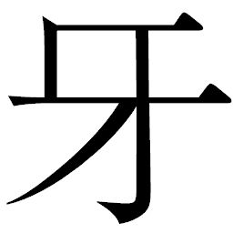
を向いたのか。
タノモと野伏せり残党はカンベエの斬艦刀を援護するように陣形を組んだ。大型軍刀を振り上げたタノモは、自分たちを包囲する野伏せりたちの赤い目を怪
に振り仰いだ。
「おぬしたち、何があった。何をされた！」
「無駄だ、聞こえぬ」
カンベエは横を呼ぶタノモに鋭く言い切った。
「ならば、此
は、如
何
に!?
」
「ウキョウはこの者たちを人形にしてしまったようだ。斬り合っても、魂の動きは感じられぬ」
「なんということを......！」
タノモは哭
いた。他の野伏せりたちも、衝撃的な答えに愕
然
と、かつての仲間たちを見やった。たとえようのない怒りに、彼らは全身の機動を昂
らせ白煙を噴出した。
「カンベエ殿、我が同胞は我が手で眠らせよう。おぬしたちはその間に都へ！」
「かたじけない」
カンベエとタノモは視線を交わし合った。
橋を渡って村に戻ってきたカツシロウは早亀を飛び降りた。彼のもとにゴサクたちが集まってくる。
「来るぞ！ 用意は出来ているな！」
カツシロウは村人たちの顔を見渡して言った。皆、昂揚して息を弾ませていた。
ゴサクが進み出ると、巨大弾道弾を指さした。
「へえ！ 前よりも小振りだども、その分、おらの算
盤
じゃあ、向きさえ合っていりゃあどこまでも飛んでくだで！」
「どうだべ、でっけえ火ィつけてみたら」
ヨヘイの提案にカツシロウは頷き、声を張った。
「うむ、妙案だ。火をもて！」
カツシロウは巨大弾道弾を見上げた後、視線を都に向けた。カンベエたちの激闘による爆発が空を染め続けている。都はどんどん大きく見えていた。
傀
儡
と化した野伏せりたちとタノモたちが斬り結び、進路を阻む野伏せりたちの陣形は完全に崩れ去った。都への道が開けた。シチロージは斬艦刀に加速をかけ、一気に進撃していく。
都からの対空砲火が始まる。巻き添えを恐れた差配衆のほとんどが自分の店をたたんで脱出をはかっていた。戦後使うことのなかった砲座が装甲の下からせり出し、斬艦刀めがけて縦横に砲弾を撃ちあげてくる。シチロージは巧みに銃弾の雨をかわしていったが、接近するにつれカンベエやキュウゾウでもかわしきれないほどの弾幕に被弾した。そして一発が、主機関部を貫いた。
「シチロージ、斬艦刀を捨てるぞ」
「承知！」
シチロージは風防を跳ね上げた。
「なにーっ、捨てるぅ!?
」
まだ大太刀を突き刺してぶらさがっていたキクチヨがわめいた瞬間、斬艦刀は後部から炸
裂
し、バラバラに吹き飛んだ。カンベエが、キュウゾウが、シチロージが爆風を受けて跳躍した。大太刀ごとようやく自由になったキクチヨも、爆発にあおられて宙空でじたばたと泳ぐように手足を動かしていた。
「おっかねえよぉぉぉぉ！」
サムライたちは爆風を利用して空を舞い、群がる野伏せりたちの頭を、肩を駆けて都との距離を一挙に縮めると、上空から都後部甲板へと強襲をはかった。
風をはらんで甲板に降り立ったカンベエの足元が、衝撃に亀裂を走らせる。
キュウゾウも行きがけの駄賃とばかりに数人の野伏せりを宙で斬り伏せながら、大
店
の屋根に降り立った。
シチロージは槍
を伸ばして大店の屋根に突き立て体を支えると、左手のワイヤーを飛ばしてまだ空をじたばたしているキクチヨの首に巻きつけた。
「ぐえ！」
シチロージが左腕を大きく旋回させて引き戻すと、キクチヨはたわむワイヤーもろとも、甲板に頭から落ちてきた。めり込んだ頭を引き抜いたキクチヨは、肩で息をしながらも大太刀を振り上げた。
「ありがとよ、桃タロ」
「どういたしまして。来やしたよッ！」
左手のワイヤーを収容したシチロージも、槍を引き抜いた。キクチヨも身構える。
甲板に連発銃を持った近衛兵たちが飛び出してきたのだ。
上空からも野伏せり天守閣守備隊が集結、カンベエたちに鉄砲を向けてきた。
「参る。狙うは天主ただ一
人
！」
「承知！」
カンベエは近衛兵たちを斬り散らし、大店の中にシチロージを伴って突入した。
屋根からキュウゾウが跳躍し、紅蜘蛛に斬りかかった。紅蜘蛛は反撃に鉄砲を撃ったが、焦るあまりキュウゾウに命中することなく、大店の屋根を抉
った。
着弾と爆発の衝撃は天覧の間にまで達した。
憤慨してウキョウは立ち上がり、声を荒げた。
「だめだよ、野伏せり！ 都を蜂の巣にするつもりなの!?
僕を殺す気!?
」
「いかがいたしましょうや」
「タノモクンだけは考えてなかったからなあ」
玉座に座りなおしたウキョウは足を組んだ。
「戦ってのも、なかなか面白いものだね。こっちがカンベエクンを出し抜くにはどうしたらいいかな、テッサイ」
「都に乗り込まれては白兵戦しかないかと」
テッサイはカンベエが到達したという報告を受けてから気が気でなかった。ここまでの侵入を許したということは、戦況はカンベエに有利に運んでいるということではないのか。
「だめだよ、そんな普通の答えじゃ。相手は戦の玄
人
だよ。そうだ、いいこと考えた。人質をとろう。カンナ村の百姓を捕まえればいくらカンベエクンでも動けないでしょ」
「ではいかほど、村に向かわせましょうや」
「一個中隊くらいでいいんじゃない？」
ウキョウは肩をそびやかして笑った。
ただちに野伏せり一個小隊がカンナ村へと向かった。混戦状態の中、タノモがカンベエたちの上空に飛来する。
「カンベエ殿、カンナ村に向かった者がいる。捨て置いてよいものか」
「俺が行く」
キュウゾウは屋根を駆け抜ける。
「ならば身
共
の肩に乗れ！」
タノモが申し出たときには、キュウゾウは屋根を蹴って野伏せりの胴を真っ二つに斬っていた。キュウゾウはタノモに頼ることなく、次々に斬ってはその骸
を蹴り、跳躍し、八
艘
飛びさながらにカンナ村に向かった。
「タノモ殿。キュウゾウの援護を」
「あいわかった！」
カンベエはタノモに言い放ち、大店の中に斬り込んでいった。
タノモは二人の残党を従え、キュウゾウの後を追った。
巨大弾道弾の先端に油が振りかけられ、松
明
の炎が移された。炎の爆
ぜる火矢と化した弾道弾は、都に向けて仰角を合わせていく。その幹に、カツシロウは刀を突き刺して跨がった。
「カツシロウ様、いったい何する気だで」
「このまま撃て。これに乗って都に乗り込む！」
驚く村人たちだったが、突き立てた刀の柄を両手でしっかりと握りしめるカツシロウの気迫に飲まれ、発射のためにゴサクが大
を持った。
「発射だ。目標、都！」
ゴサクが大
をふるい、引き絞ったケーブルを放つべく杭を強打した。
轟然と飛び出した火矢で、身を屈
めたカツシロウに凄まじい風圧がかかる。歯を食いしばり、突風に顔をしかめながらもカツシロウは目を閉じない。まっすぐに都を見据えていた。ウキョウの指令を受けてカンナ村に向かってくる野伏せり一個中隊が視界に大きくなってきた。
放たれた火矢に、都へ向けて飛ぶ鋼筒の中でヘイハチが気づいた。天蓋を跳ね上げて身を乗り出したヘイハチは、火矢に跨がるカツシロウを見て気を揉んだ。
「あらら、まずいですよ」
ヘイハチは鋼筒を旋回させ、カツシロウの火矢へ向かった。
村から火矢の行方を見守っていたゴサクたちも落胆の声を上げた。火矢は都に達するどころか、既に失速気味だ。火矢から立ち昇る黒煙の流れが、既にそれを示していた。
「だめだぁ、届かねえ」
「ああいうツメの甘さが、カツの字だなや。しししし」
ギサクとともに見ていたオカラが、また余計な一言を。
「おめぇはいいから水
分
り様ン家
さ入ってろ！ 野伏せり来るぞ！」
ヨヘイがオカラをたしなめる。
それぞれに威圧するような意匠を兜や甲
冑
に作り込んだ野伏せりたちの姿に、村人たちは震え上がった。鉄砲隊も弓隊も、鉄柵の前に集まってきて迎撃の構えをとった。
ヨヘイに追い立てられたオカラは、すれ違った派手な着物のサムライを振り返った。ヒョーゴだ。上半身裸で腹の傷にはサラシをきつく巻きつけ、よろめくように橋の方へと歩いていく。カツシロウが乗り捨てた早亀の手綱を手にとった。突然姿を見せたヒョーゴの振る舞いに、村人たちはどう対応していいのかわからない。
早亀に跨がったヒョーゴに、ギサクが声をかけた。
「あんた、どこに行くだね」
「奴が来る」
眼鏡の奥で、ヒョーゴの目が憑
かれたように光った。遠方を舞う二本の銀光を、彼は確かに見た。何を言われたのかギサクにはわからなかったが、この戦の中でヒョーゴだけは違う時間と場所にいるように思えた。
ヒョーゴは手
綱
を打って早亀を出し、橋を渡っていった。
カンナ村を襲うべく飛来する野伏せりたちの只中に、カツシロウの火矢は突っ込んでいった。
雷電の気合砲がついに火矢を貫いた。爆発に吹き飛んだカツシロウは宙空であがき、何かを摑もうと手を伸ばした。視線は、足場になる野伏せりはないかと忙しく動いた。地上が迫ってくる。しかしその腕を、回り込んできた鋼筒の手がしっかりと摑んだ。
「だから乗れって言ったんですよ！ 都に連れていってあげます！」
鋼筒の中からヘイハチの声が聞こえ、張りつめていたカツシロウの心がわずかに緩
んだ。今度は抗
わず、素直に「かたじけない」と返した。
キュウゾウは野伏せりを次々斬りながら、つばさ岩の手前まで跳び伝っていった。先回りを決めたその速さと剣の舞いには、追うタノモも舌を巻くほどだ。地上に降り立ったキュウゾウの背に、紅蜘蛛が刀を降り下ろしてきた。キュウゾウは大型軍刀が舞い上げる風の動きから太刀筋を読み、振り返りざまに脳天から股座まで一刀を浴びせた。
巨木が倒れるがごとく、野伏せりは火花散らして真っ二つにされて倒れ、爆発した。爆風と爆煙の中でキュウゾウは揺らぐことなく立っていた。
野伏せりたちがキュウゾウに群がる。息一つ乱さぬまま、キュウゾウは精神の異様なまでの昂ぶりに酔っていた。刀を通じて斬撃の陶酔は高まる一方だ。跳躍し、仕掛ける。気合砲を反射して野伏せりに叩き返して頭を吹き飛ばした彼は、正面の敵の胸を突いた。地面に倒れた野伏せりが爆散し、煙が噴きあがる。その爆煙を裂いて、雷電が斬艦刀を振り上げてきた。
キュウゾウは叩きつけられた斬艦刀を、二本の刀を交差させて受けとめた。火花が迸
り、髪や衣服を焦がした。力で押してくる雷電の赤い目を、キュウゾウは見据え、力の加減を変えて攻撃に転じようとした。そのとき――。
不意に、斬艦刀に体重をかけていた雷電から力が抜け、膝をついた。全身に火花が散り、爆発する。飛び退いたキュウゾウは噴き上がる爆煙の向こうに、友の姿を見た。雷電を斬ったのは彼だ。力なく刀を提げてみえるものの、一分の隙もない。
その男、ヒョーゴはキュウゾウに向けてまっすぐに歩み出してきた。行く手に転がる雷電の残骸を刀の一
閃
で斬り払い、瞳はキュウゾウの目を捕らえて離さない。
ヒョーゴをはじめて見る野伏せりたちには、新手の出現だった。村どころではなくなった彼らは鉄砲と気合砲と斬撃でヒョーゴに襲いかかったが、キュウゾウしか見えていないヒョーゴの敵ではなかった。彼は弾丸を斬り捨て、野伏せりの腹を切り裂き、気合砲を反射した。
「邪魔をするな！」
ヒョーゴは最後の一体を怒号とともに斬り伏せた。傷の痛みなど気にならず、待ち望んでいた男との対決に胸は逸
った。
「貴様はッ！」
自分の右腕を切断した男が一個中隊を壊滅させるさまに、到達したタノモは愕
然
とした。何故、この男がここにいる。ここで何をやっている！
ヒョーゴも、死んだと思っていたタノモがキュウゾウの背後に迫っているのを見て混乱しつつ、猛
る気持ちのままに跳躍し、襲いかかった。だがその剣は、同じように跳んだキュウゾウによって阻まれた。着地した二人は間合いをとった。
「何をする、キュウゾウ！」
猛るヒョーゴには刀を突きつけたまま、キュウゾウは背にしたタノモに、肩越しに視線を投げ、言った。
「この男は俺を斬りたいだけだ。赤目の野伏せりはおぬしたちが斬れ」
「よかろう」
タノモは、同行の二人と共に旋回した。魂を壊された同胞に向けて斬艦刀をふりかざし、突っ込んでいく。
爆煙たなびく中、キュウゾウとヒョーゴは対
峙
した。言葉は交わさない。今この場に必要なのは互いの刀だけだ。
先に踏み込んだのはキュウゾウだった。右の一の太刀で誘い、左の二の太刀で喉元を狙う。ヒョーゴは見切り、左の剣の動きを見切ると跳ね上げ、次の呼吸までの間にキュウゾウの心臓を突く。体を旋回させてかわしたキュウゾウの右の剣がヒョーゴの背中に降り下ろされた。
袈
裟
斬
りの風を感じたヒョーゴは身を翻して飛び退き、間一髪でキュウゾウの剣をかわし、間合いをとると走り出した。キュウゾウも走る。斬り込むタイミングを互いに計る。今度は同時に動いていた。斬り結んでは離れ、踏み込んでは退
く。一瞬たりとも残心はやむことなく、銀の光と鍔
迫
り合いの火花が鮮やかに散っては消えた。
突き出したキュウゾウの右の切っ先を、ヒョーゴは屈んでかわし、下から突き上げるように刀をふるった。キュウゾウは左の剣をすくいあげるように旋回させ、ヒョーゴの喉を狙った。
ヒョーゴは右腕をかざして喉をかばった。その手首に食い込んだキュウゾウの剣が金属音を立てて止まった。機械にかわった右腕を楯にして喉への攻撃を誘いながら、自分の剣はキュウゾウの眉
間
で寸止めした。動きを牽制され、キュウゾウは右の剣を構えたまま止まらざるをえなかった。
ヒョーゴは不
な笑みをみせた。突けばキュウゾウの脳天を貫くことが出来る。なのに、そうする気はなかった。
な笑みをみせた。突けばキュウゾウの脳天を貫くことが出来る。なのに、そうする気はなかった。「なぜ斬らぬ、と思ってるだろう。これでいい。俺は満足だ。これからも俺は生きていける。若の元には戻らぬ」
微動だにせず、ヒョーゴは言った。眼鏡の奥の瞳に、確かに殺気はない。キュウゾウはその瞳を見据え、言った。
「五分の勝ちを上とするか」
「そうだ。七分を中とし、十を下とす。俺は今、おぬしの命をとれる場所にいる。だがとろうとは思わぬ」
蘇った当時は殺すつもりだった。ウキョウに仕え、都から世の中を見て、次第にキュウゾウがカンベエのもとに参じた理由が見えてきた。サムライ、ゆえに。時代に合わせることはない。キュウゾウは、サムライとして命を使っているだけだ。俺にも出来るかもしれないという、微
かな期待。冷静になって斬り合った今、こうしてキュウゾウの眉間をとったのだ。ヒョーゴの心に穏やかな風が吹き抜けた。
キュウゾウは友の心の変化を感じ取った。いま、斬ろうと思えば彼も斬れたにもかかわらず、彼も動くことはなかった。友も、生きてみたくなったに違いないのだ。
「邪魔したな。おぬしは存分に戦え。俺は消える」
ヒョーゴはゆっくりと刀を引いた。
キュウゾウも静かに離れた。
都の主機関へ、思惑どおりに鋼筒
は到達した。タノモたち残党による野伏せりたちとの混戦が彼らの侵入を容易にしてくれたのだ。
カツシロウは鋼筒の腕から離れ、主機関の装甲の上に飛び乗った。続いて装甲上で停止した鋼筒の天
蓋
を開けたヘイハチは、荷物の詰まった革袋を持って降りてきた。背中にはマサムネから託された三連装のボウガンを括
りつけ、主機関を支える支柱に手をついてバランスをとりながら頭の中では爆薬の設置箇所を計算していた。
ヘイハチが革袋を開く間、彼を守るようにカツシロウは立って周囲に油断のない視線を配っていた。まわりの空では残党野伏せりたちが、赤目の野伏せりたちとの激闘を展開していた。斬り、斬られ、爆発の熱がカツシロウのもとにも吹き込んでくる。ふと、彼は遥か前方のキュウゾウとヒョーゴに目をやった。
ちょうど、二人が離れた刹
那
。
二人の決闘を守るように戦っていたタノモたちの隙をついて、紅蜘蛛が鉄砲を撃った。周囲をたなびく爆煙の流れの変化からキュウゾウとヒョーゴは身の丈程もある弾丸を斬り伏せた。
それをきっかけにしてタノモたちを圧するように、野伏せりたちは群れをなして襲いかかった。タノモとともに果敢に戦っていた野伏せりがついに斬られた。彼らは敵にしがみつき、道連れにして爆発していく。タノモも胸を気合砲で射貫かれ、よろめき墜落する。その爆発音に耳を聾
されながら、キュウゾウとヒョーゴは敵を撹
乱
するべく走った。
だが二人の足元に鉄砲の着弾があった。噴き上がる砂に足をとられてバランスを崩したキュウゾウに、ついに一撃の弾丸が命中した。弾着の衝撃に意識が一瞬、跳ぶ。耳の奥で、骨がひしゃげる不快な音をキュウゾウは聞いた。体は意志なきもののように跳ねた。
「キュウゾウ殿ォーッ！」
カツシロウはつばさ岩まで戻りそうな勢いで主機関の端まで走り、叫んだ。声に反応した野伏せりがカシシロウめがけて大型軍刀を突き出してきたが、すかさずヘイハチが撃ったボウガンの矢で胸を射貫かれ、墜落していく。
カツシロウは我に返り、ヘイハチを振り返った。
「ここは戦
場
ですよ！ 倒れた者を構っている暇などありません！」
厳しい言葉だったが、ヘイハチはいつものように穏やかに笑いかけた。
「私の役目は、この主機関を天守閣から切り離すことでしてね」
彼の左手には、革袋から出した爆薬の筒が握られていた。
「この爆薬は式
杜
人
からのお土産です」
侵入を感知した近衛兵たちが、主機関作業用の連絡通路を伝って外に出てきた。連発銃で威
嚇
してくるのを、ヘイハチはボウガンで次々に倒していった。
「そしてこれは、マサムネ殿のお土産」
驚くカツシロウに、マサムネの不格好なボウガンをかざして見せた。その間にも、近衛兵たちは次々に主機関上に現れてきた。カツシロウは自分の役割を理解し、刀を構えた。
「ヘイハチ殿、任務遂行を。援護は私が！」
弾着の衝撃に、キュウゾウは地面を転がった。彼をかばうようにヒョーゴが紅蜘蛛を斬った。地上でまだ動いているのは彼だけだった。野伏せりたちの銃撃がヒョーゴに集中し、着弾が彼の体を次々に貫いた。眼鏡が吹き飛び、蜂の巣にされた彼の体から、硝煙が立ち昇った。皮膚が焦げる異臭が立つ。口の端から血を滴
らせながらも、彼はまだ立っていた。
ヒョーゴに斬艦刀を振り下ろした雷電が、後ろから真っ二つにされた。タノモがまだ、動いていたのだ。力を振り絞ってタノモは赤目の野伏せりたちを斬り捨てていった。機械にされた者たちの戦を見るのはあまりにも辛い。すべて斬り、眠らせるまで倒れるわけにはいかない。その執念だけが、タノモを動かしていた。
タノモやヒョーゴを援護するように、村から鉄砲隊の銃撃が相次いだ。ゴサクの合図で、援護射撃が繰り返されていく。
ヒョーゴは刀を地面に突き立てて体を支えた。混
濁
する意識で、キュウゾウを探す。滴
る血が視界を赤く染める中、必死に左腕だけで起き上がろうとしているキュウゾウを見つけた。
「キュウゾウ！」
身を起こしたキュウゾウの右腕は、不自然にねじれていた。ヒョーゴは落ちていたキュウゾウの剣を拾った。持ち上げる力はもう残っていなかった。
連発銃を構えた近衛兵に向かってカツシロウはタラップを駆け上がっていった。タラップ上の狭いところで、一対一になって迎え撃つのだ。だが相手は飛び道具、カツシロウは弾丸を浴び、頰に、足に、かすり傷ながらも傷を増やしていく。痛みを感じている暇も瞬
きをしている暇もなく、擦過傷の痛みも気にならない。ひたすらに斬り倒していった。
「今少し、持ちこたえて下さいよ！」
ヘイハチはカツシロウの奮闘に声をかけながら、左右十対の支柱の間を忙しく走りながら爆薬を仕掛け、導線をつないでいった。
近衛兵がタラップを飛び降り、連発銃を構えた。斬り結んでいたカツシロウが気づいたときには遅かった。彼が後を追って飛び降りた瞬間、近衛兵は銃撃した。
ヘイハチは背を向けて支柱に爆薬を仕掛け、貼り付けていた。その背に、銃弾が突き刺さった。
「......ぐっ......！」
ヘイハチの膝が崩れた。床に手をついて体を支えるものの、悲鳴を上げることさえ出来ない激痛に腕が震える。あと一つなのに――。ここで倒れていられない。主機関を都の撃沈に巻き込むわけにはいかない。もうカンナ村とは目と鼻の先、ここで爆発させては辺り一帯が死滅する。銃弾は体内にとどまっているようだった。焼けつくような熱が体中を駆け巡り、脂汗が滲
んできた。
「これが終わったら......、ハラいっぱい米を食うんだ......」
力を振り絞って支柱に手をかけ、立ち上がった。
「ヘイハチ殿！」
カツシロウは怒りにまかせて近衛兵を背中から斬り捨てた。床を滑る連発銃に恐怖し、唾
棄
し、蹴って宙空に捨てた。タラップ上で銃を構えた近衛兵たちに向かってカツシロウは壁を蹴って跳躍し、連発銃もろとも近衛兵を斬り倒していく。
ヘイハチは最後の支柱へ向けて、力を失いかけた足をひきずるようにして向かった。滴る血が、ヘイハチの移動と共に足元に続いていった。視界が霞む。支柱にたどりつく前に、とうとう倒れ込んだ。もう立つことが出来なかった。足に力が入らない。腕だけで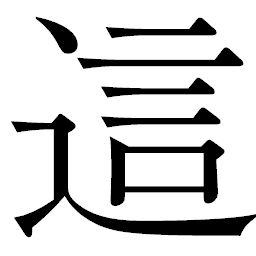
って、やっとのことで支柱にたどりついた。まだ安
は出来ない。手にした爆薬を押し当てた。
呼吸が不規則になっていた。体をおこし、仰向けになる。爆薬同士をつないだ導線がジグザグを描くように伸びているのが見えた。床に置いたままのボウガンを右手に、起爆スイッチを左手に持った。
混戦状態の中、雷電がヘイハチに気づいて斬艦刀を突き出してきた。
風の動きの変化に、本能的にヘイハチはボウガンを雷電に向け、放っていた。顔面を貫かれ、機械油をまき散らして雷電はのけぞった。手を離れた斬艦刀が、仰向けになったヘイハチの上に横倒しになってきた。
潰される！ 目を見開いたヘイハチだったが逃げる力は残っていなかった。峰の部分が彼の下半身を押し潰した。柱を峰に挟まれるかたちになり、動ける状態ではなかった。
「ヘイハチ殿、いま、そちらに！」
カツシロウが近衛兵を斬り捨て、駆け寄ろうとした。だがヘイハチは、腹に力を入れ、あらん限りの声を出した。
「来ちゃ、だめです！ ここを出てください！」
カツシロウは逡
巡
した。ヘイハチはその迷いを見てとりながら、般
若
顔ではなく、笑みを向けた。顔半分が血に染まったてるてる坊主と同じ、微笑み。
「行くんです。カツシロウくん！」
「ヘイハチ殿......」
「行けぇーっ！」
ヘイハチは今まさに起爆スイッチを押すとばかり、左腕をかざした。
カツシロウは歯をくいしばった。込み上げてくる熱いものに、体が震えた。仕事なのだ。受けた仕事を、彼は命を して遂行しようとしているのだ。命よりも、作戦の成功こそがサムライの誉
れ。カツシロウは踵
を返した。近衛兵の死体が折り重なったタラップを駆け上がる。
して遂行しようとしているのだ。命よりも、作戦の成功こそがサムライの誉
れ。カツシロウは踵
を返した。近衛兵の死体が折り重なったタラップを駆け上がる。
して遂行しようとしているのだ。命よりも、作戦の成功こそがサムライの誉
れ。カツシロウは踵
を返した。近衛兵の死体が折り重なったタラップを駆け上がる。 カツシロウは船内に入る前にヘイハチを振り返った。
ヘイハチの血にまみれた笑顔を、カツシロウは瞳に焼きつけた。満たされたような笑みだった。てるてる坊主が揺れていた。ついに彼は、起爆スイッチを押した。
導線に火花が散った。支柱すべてにつけられた爆薬が一斉に炸
裂
し、ヘイハチの視界を白く覆った。その残照の中で、支柱すべてに張り巡らされた導線のジグザグを、寄り道ばかりだった自分の生き方に重なって見えるな、とぼんやりと思った。
爆圧が船体下部を大きく持ち上げ、都は前傾姿勢になった。船首で地面を抉りながら、前進を続けた。しかし主機関は、支えを失って艦首側接合部分から金属の軋
みに空気を引き裂きながら、地面に向かって折れていった。斬艦刀と支柱に挟まれたまま、ヘイハチも落ちて行く。
カツシロウは彼を見続けた。仕事を果たした男の笑顔を凝
視
した。
ヘイハチもカツシロウを見上げていた。別れを告げるように帽子をとって、大きく振った。
「米が......、食いたぁーいっ！」
かすれた声には力がこもっていなかったが、カツシロウにははっきりと聞こえた。
分断された主機関は、地面に砂を噴き上げてめりこみ、転がった。ヘイハチの姿は横転する主機関と砂でかき消えていった。
都はのたうちまわるように激しく揺れた。
カツシロウは涙があふれて止まらない。刀を握った手に、力が込もる。ヘイハチは仕事を果たした。そして自分は――。
前傾姿勢になった都は慣性が働いて停止しない。土砂を大きく抉りながら進むその姿は、何かに憑き動かされているかのようだった。
ヒョーゴはキュウゾウの刀を持って、力尽き倒れた。
仰向けになって切っ先を向けたヒョーゴは、寂しげに微笑んで刃を下に向けた。キュウゾウは左腕で持っていた刀を地面に刺し、ヒョーゴの手から刀を受け取ると、背中の
に戻した。そして再び、地面の刀を手にした。
に戻した。そして再び、地面の刀を手にした。「タノモ......！」
力を込めてヒョーゴはタノモを呼んだ。紅蜘蛛をなんとか斬り伏せたタノモがヒョーゴを振り返る。既にタノモも瀕
死
であった。
「何用ぞ！」
「キュウゾウを都に連れていけ。まだ、飛べるか」
「おぬしは」
問いには答えず、タノモはヒョーゴを気遣った。
「俺は、いい」
ヒョーゴはそう言ってキュウゾウを見上げた。
「さらばだ」
キュウゾウは友に言い残すと、タノモの腕に駆けのぼった。歩けて、片手だけでも刀が持てるうちはまだ戦える。戦況を見てキュウゾウを都に向かわせるヒョーゴの判断に、タノモはこの二人が長い時間を共に過ごしてきたことを悟った。
飛び立つタノモの弱々しい機動音を聞きながら、ヒョーゴは静かに目を閉じた。やっと眠れる。最後に短く息をついて、そのまま彼は動かなくなった。
都の大店を斬り崩しながら、カンベエは逃げ惑うアキンドたちにはまったく構うことなく、ひたすらにウキョウを目指した。シチロージが槍で援護し、キクチヨがひたすらに建物を壊して突進を続ける。大きく傾斜した床に近衛兵たちは浮き足だち、銃撃どころではなくなっていた。
「ヘイさんがうまくやってくれたようですな！」
近衛兵を突きながら、シチロージが主機関の切り離しを口にした。
カンベエは目線だけで頷き、階段を駆け上がった。
タノモからもたされた情報では、ウキョウは戦闘指揮のために天守閣にいるはずだという。突入してからというもの、逃げ惑うアキンドたちに
ねても同じことを言われた。狙うはウキョウのみ、居場所をと問えば全員が天守閣の天覧の間だと答えた。
だが、カンベエは考える。ウキョウならどうするか。主機関を失い、壊れるだけになった都。おそらくはまったく予想外だったはずのタノモたちの出現。
天守閣への道筋で、カンベエは立ち止まった。
「天守閣に行くんじゃねえのか？」
「ウキョウは逃げる」
「逃げるゥ!?
」
「なるほど、そう読みますか」
シチロージは得
心
し、すぐさま壁を切り裂いた。
「ならば離脱するにはこちらが近道。参りましょう」
「ぶっ壊すンならオレ様に任せな！」
キクチヨが大太刀を振り回して大胆に壁を破壊し始めた。カンベエとシチロージはそれに続く。都の構造上、脱出するには御
座
船
の発着口以外ない。
傾斜した床を駆け登り、天守閣後部の御座船を目指すカンベエ。キクチヨが壁を壊し続け、ついに彼らは船体下層の、野伏せりたちがいた格納庫に達した。
薄暗い照明がついているだけの空間は、今や一人の野伏せりも残っていない。機械化されたサムライたちが眠っていたそこはどこか薄ら寒く、澱
んだ空気が重く立ちこめていた。走る足音が縦横に反響する中、行く手を遮るように物陰からふらりと一人のサムライがあらわれた。
長ドスを提げたテッサイが、カンベエたちの前で仁王立ちになった。
「久しいな、島田カンベエ」
テッサイは長ドスを手前にかざし、柄に手をかけた。
カンベエは答えなかった。既に小さく刃こぼれをおこしかけている自分の刀を、下段に構えた。シチロージとキクチヨも間合いをとった。
テッサイは三人の動きを一つ一つ捉えながら、右足をじりじりと前に動かし、腰を徐々に落としていった。カンベエはテッサイの目と、柄にかけた手から視線をそらさずに問いかけた。
「おぬし、サムライか」
「昔はな」
再びまみえることになったカンベエを前に、テッサイの声は静
謐
だ。
「今は、御天主様にお仕えする身」
「だからその御天主様に用があるンだよッ！」
キクチヨが斬り込むと、テッサイは長ドスを抜刀するなりキクチヨの腕を肘から斬り落とした。大振りなキクチヨの動きに比べ、テッサイの動きには一分の無駄もなかった。大太刀を持ったまま跳ね飛んだキクチヨの腕は、そのまま壁に切っ先を突き立てた。
「んがぁッ！」
キクチヨは斬撃の反動で床を転がった。テッサイはその体を飛び越え、たちまちシチロージに斬り込んでくる。シチロージは槍の穂先を水平になぎはらってテッサイを威
嚇
したが、テッサイは刃の切っ先を、体重をかけずに蹴って跳躍した。虚をつかれたシチロージの背面をとり、斬りかかろうとしたが、シチロージは背を向かぬままに槍の石突きを後ろに突きだした。テッサイはこれを打ち払う。背後からカンベエが斬り込んでくるのを、振り向きざまに長ドスの一閃で斬り結んだ。火花が散ってテッサイとカンベエ、互いの顔を鮮やかに照らしだす。
力の加減を変えたテッサイはカンベエとの鍔
迫
り合いを力押しで跳ねのけ、後ろから槍で突いてくるシチロージの懐
に飛び込んで斬りかかる。横っ飛びにかわしたシチロージが体勢を整える前に、テッサイは上段から斬りかかった。
飛び込んできたカンベエがテッサイの刃を受けとめた。咄
嗟
に翻
ったテッサイは後退する。すかさずシチロージが横から槍を突いてきた。これを刃でいなしながら、斬りかかるカンベエには
で応じる。
で応じる。 カンベエはテッサイの
を叩き斬った。斜めに切り落としたことで、竹槍にも似た鋭い切り口が生まれた。テッサイは不敵な笑みでカンベエを見るなり、シチロージの槍を跳ね上げた。バランスを崩したシチロージの後ろに素早く回り込むと、左手に持った
の切り口を喉に突きつけ、シチロージの腋の下からは長ドスを持った自分の右腕を突きだしてカンベエを威嚇した。
を叩き斬った。斜めに切り落としたことで、竹槍にも似た鋭い切り口が生まれた。テッサイは不敵な笑みでカンベエを見るなり、シチロージの槍を跳ね上げた。バランスを崩したシチロージの後ろに素早く回り込むと、左手に持った
の切り口を喉に突きつけ、シチロージの腋の下からは長ドスを持った自分の右腕を突きだしてカンベエを威嚇した。 激しく斬り結ぶ金属音が反響し続けていた格納庫に、再び静寂が戻った。
動きを封じられたシチロージは槍を右手に持ったまま突き立ててさばくことも出来ず、喉に食い込む切り口の痛みにかすかに眉根をよせた。
カンベエはテッサイの目を見据えたまま、五感すべてで隙をうかがい、いつでも動き出せるように刀を構えた。
「この野郎ッ！」
キクチヨが壁に刺さった右腕を引き抜き、大太刀を左手で拾いあげたが、凍りついた場には動くことが出来なかった。
テッサイはカンベエとキクチヨを交互に見ながら吼
える。
「ここは退
け！」
思ってもみない言葉に、カンベエはテッサイの苦渋を見た。
「おぬしたちの武勇を思えば、ここで散らすはあまりに惜しい」
「寝言言ってんじゃねえ！ おめぇもおめぇだ、ウキョウみてぇな野郎の言いなりになんかなりやがって、それでもサムライか！」
キクチヨが激
昂
して一歩踏み出すと、テッサイは刃をキクチヨに向けた。
「黙れ！ いかな主君であろうと、お仕えした使命をまっとうしてこそ、もののふの道というものであろう！」
膠
着
状態だった。だが動いたのは、動けないはずのシチロージ。槍を軽く振ると、伸縮自在の槍は音を立てて縮まったのだ。テッサイは気をとられ、一瞬視線が動いた。体の緊張がわずかに揺れた途端、シチロージは喉を突く
を払いのけ、しゃがみこんで前転した。
を払いのけ、しゃがみこんで前転した。 抱えていたシチロージを失い、テッサイはたたらを踏んだ。カンベエが斬りかかる。テッサイは瞬間、死を覚悟した。
だが――、銃撃が炸裂した。
飛び込んできた近衛兵たちが連発銃を撃ちまくってきたのだ。カンベエもシチロージも転がってかわし、格納庫の柱や仕切りを楯にして身を潜めたものの、被弾は免れなかった。衣服のあちこちが裂け、かすった弾丸に血が滲みだしてくる。
キクチヨは銃弾を浴びた。着弾の衝撃に壁に叩きつけられる。
「いでぇえええっ！」
「キクチヨ！」
カンベエはキクチヨへ浴びせられる弾丸を斬り伏せながらかばうように飛びだした。シチロージが続き、槍を回して近衛兵に突きを浴びせる。連発銃の威力は彼らの剣をはるかに凌
駕
していた。近衛兵たちの波状攻撃に、カンベエたちは完全に動きを封じられてしまった。
「撃ち方やめ！」
テッサイは挙手して近衛兵たちの銃撃をとめた。格納庫内に、噴き上がった硝煙が立ちこめ、火薬の匂いが満ちていた。銃声がいまだに朗々と反響していた。
「貴様たちはまさにサムライだ。その誇り、その生き様、心底羨
望
の念を禁じえぬ。ゆえに貴様たちの最後、せめて刃
で送ってやろう！」
近衛兵たちを従えながら、あくまでもテッサイはサムライであろうとした。
反論しようとする近衛兵を視線と手で制したテッサイは、静かに歩みだした。
カンベエは、それがウキョウ脱出の時間稼ぎではないと感じ、進み出た。
テッサイは長ドスを構え直した。
二人が同時に踏み込み、一撃斬り結んで離れた刹
那
、凄まじい衝撃音とともに格納庫が大きく揺れた。発進口を斬艦刀で斬ったタノモが突入してきたのだ。キュウゾウがタノモの肩から飛び降りた。
「かたじけない」
キュウゾウは肩越しに、言った。
タノモはもう応える力さえ残っていなかった。斬艦刀を深々と床に食い込ませたまま、力尽きて落ちていった。
「タノモッ......！」
発進口から吹き込んでくる突風が、落ちて行くタノモを見守るカンベエをなぶっていた。よくぞここまで、キュウゾウを連れて来てくれた。その思いでカンベエは胸が昂る。
赤いコートをはためかせながら、キュウゾウは左腕で背中の刀を抜き放った。ねじれた右腕はまったく動かなかった。蒼白な顔は、幽玄な横顔にさらに深い影を落としていた。
「キュウゾウ......」
カンベエに名を呼ばれ、キュウゾウの目がわずかに動いた。間断なくテッサイと近衛兵の位置をはかりながら、静かに踏み込んだ。近衛兵たちは突然の侵入者に咄嗟に銃撃していた。キュウゾウは壁を蹴って跳躍すると弾丸を斬り捨てながら、被弾して床に叩きつけられる。傷の多さが、彼の動きを鈍らせていた。カンベエ、シチロージ、キクチヨが近衛兵たちに襲いかかる。
キュウゾウは素早く立ち上がり、近衛兵の首を刎
ねた。立ち昇る殺気に、近衛兵たちは呑まれ、引き金をひくことを一瞬忘れた。
連発銃に怯む者は誰一人いない。飛び交う銃弾をかいくぐり、次々に群がる近衛兵たちをカンベエたちは斬っていく。
テッサイもその渦中に身を投じた。サムライの矜
持
を願いながら、鉄砲による戦の前にはもはやそれもかなわないのか。長ドスをふりかざしてカンベエに斬りかかった。カンベエは被弾し、膝が揺らいだ。
――おぬしをこんな形で斬りたくはなかったが！
テッサイはカンベエの背に長ドスをかざした。その懐にキュウゾウが転がりこんできた。刃で胸を貫く。背中まで貫通した一撃に、テッサイの体が震えた。振り上げた長ドスが手から落ちた。
「キュウゾウ......、貴様ッ！」
「奴は、俺が斬る」
囁
くようにキュウゾウは言った。刀を引き抜くとテッサイの胸と背から鮮血が噴出した。血溜まりの中に沈んでいくテッサイの体が死の痙
攣
を起こした。
「おぬし、その腕は」
近衛兵たちを倒したカンベエは、いたわるようにキュウゾウに声をかけた。
「左
腕
はまだ、使える」
キュウゾウは短く言い放った。
「よっしゃア、いこうぜ、ウキョウんトコによォ！」
キクチヨが先陣を切って駆け出した。
野伏せり格納庫を飛びだしたカンベエたちは、強
襲
揚
陸
艦
を収容した区画を駆け抜ける。その前にも、近衛兵たちが立ちはだかった。これほどの厳重な警備は、ウキョウに近いことを窺
わせた。
カンベエたちは横っ飛びに銃撃をかわした。それぞれに資材や操作盤の陰に飛び込んで楯にした。あまりに激しい銃撃に、またしてもカンベエたちは停滞を余儀なくされた。
連発銃の銃声は近衛兵たちの耳を聾
して、背後から斬り込んできた新手にまったく気づかなかった。主機関から駆け上がってきたカツシロウが格納庫に達したのだ。カンベエたちの危機を救おうと、カツシロウは近衛兵たちを背後から斬り、突き、倒していった。ヘイハチの死を見たばかりの彼は、もう仲間を失いたくなかった。
隊列の乱れた近衛兵たちに向かって、カンベエたちも飛び出した。たちまち混戦状態に陥りながら、シチロージが槍で突けばキクチヨが大太刀を振り回し、キュウゾウは的確に斬り捨てていった。
返り血で異様な形相になっているカツシロウの刀は、既に刃こぼれしていた。満足に斬ることが出来ず、殴りつけるようにして近衛兵を叩き伏せていった。だが疲
弊
しきった刃は、跳ね返した一発の銃弾の前にあえなく折れた。
カツシロウは動揺した。勝ち誇ったように近衛兵が連発銃を向けてきた。
「カツシロウ！」
カンベエが助太刀に入り、近衛兵を斬った。カツシロウは安
し、カンベエと視線を交わした。だが傷ついた近衛兵が、カンベエの背に連発銃を向けようとしているさまにカツシロウは気づき、動転した。先生が撃たれる！
カンベエはカツシロウの視線と表情の動きから、背面に刀をなぎ払った。
カツシロウは折れた刀を捨て、師を救おうと咄
嗟
に刀を求めた。帽子を振るヘイハチの姿が、彼の脳裏に蘇った。死なせない、守らなくては、頭の中はその思いでいっぱいだった。刀は落ちていなかった。いま使える武器は、斬り捨てた近衛兵が持っていた連発銃だけだ。迷いはなかった。引き金を引くだけで敵を倒せる武器。
カツシロウは拾い、振り向きざまに近衛兵に向けて引き金を引いた。初めての銃撃の反動が、腕から脳にまで伝わり、震えた。引き金を引き続けた。弾倉の中はたちまち空になった。カンベエが近衛兵の腹をなで切りにするまでに、近衛兵は既に蜂の巣になり、着弾の煙を噴き上げていた。
近衛兵は呻
きすら上げずに倒れていった。その背後に、刀を振りかざした男がいた。彼も、倒れた近衛兵と同じように全身に着弾の後があった。色を失った唇の端から一筋、血が伝い落ちていった。
「キュウゾウ殿ッ......!?
」
あとは言葉にならず、カツシロウは連発銃を構えたまま、自分がしたことにただ、震えるしかなかった。至近距離で放たれた銃撃は近衛兵を貫通し、キュウゾウをも蜂の巣にしていたのだ。キュウゾウもカンベエに助太刀しようと、近衛兵に背後から斬りかかろうとしていた。あろうことか、剣士として尊敬している男を自ら打ち抜いたのか。
キュウゾウの膝が崩れた。本能なのか、刀を床に刺して体を支えようとしたが、もはや力は残っておらず、倒れていった。抱きとめたカンベエは、キュウゾウの鼓動が次第に弱くなっていくのを感じ取っていた。
「キュウゾウ！」
近衛兵はすべて斬った。キクチヨもシチロージも、傷だらけでただ、カンベエとキュウゾウを見つめていた。
カツシロウの指は引き金にまだかかっていた。極度の衝撃と緊張のあまり、離れないのだ。
キュウゾウは既に視力を失っていた。探るように、カンベエの袖を摑んだ。
「早く......、仕事を終えろ」
微かな声に、カンベエは力強く頷いた。キュウゾウの瞼
が、はっきりとカンベエを見ようと見開かれた。
「俺との......、決着を、忘れるな......」
「忘れてはおらぬ」
「村で......、待つ......」
カンベエの袖を摑んでいた手が力尽きて落ちた。白い袖にキュウゾウの手が滑り落ちたさまが、血の跡となって残った。
何を見つめるのか、息絶えたキュウゾウの目は開かれたままだった。光を失っていく瞳孔に、カンベエは手袋を口にくわえて脱ぐと、六花弁の刺青を入れた手で、静かに瞼を閉じてやった。
「儂
もすぐに行く。冥府で待っておれ」
言葉をかけたカンベエは、キュウゾウを床に寝かせた。
カツシロウは狼狽
え、ようやく連発銃を離した。床を滑る連発銃の音が渇いた反響音を残していた。
「うわっ......っ、うわぁあああーっ！」
カツシロウの絶叫が、金属音の残響を打ち消した。
「先生ッ、私が、私が！」
「よくぞ戻った」
カンベエの言葉が厳然とカツシロウの魂を貫いた。衝撃のあまりとめどなく涙があふれるカツシロウは、必死に口を噤
んで悲鳴を飲み込んだ。まだ震えのおさまらない掌
を、呆
然
と見つめてようやく言葉を吐きだした。
「私が、この手で殺したのですよ！」
「儂を救うためにな」
「私がこの手でキュウゾウ殿を！ この命で、詫びることが出来るならば！」
「誰が先に死ぬか。それだけのことだ」
カンベエの穏やかな声
音
は、シチロージにもキクチヨにも静かに染み込んでいく。
カンベエは床に刺さったキュウゾウの刀を引き抜くと、カツシロウに柄を向けて渡した。
キュウゾウの刀。カンベエと斬り結び、カンナ村を守り続けてきた。使えというのか、と戸
惑
いの目を向けるカツシロウに、カンベエは言った。
「生きてもらうぞ、カツシロウ。もう少しだけな」
カツシロウは決意してキュウゾウの刀を摑んだ。
「どうやって、ここに」
シチロージが
ねると、カツシロウの瞳に、抑えたはずの涙が浮かんだ。
「ヘイハチ殿が、連れてきてくれたのですが......」
「ヘイさんは？ 主機関はもう落ちたはずだが」
カツシロウは顔を伏せた。脳裏にヘイハチの最期の姿が蘇ってくる。
「鉄砲で撃たれ......、主機関と共に」
あとは言葉にならなかった。絶句し、唇を噛むだけだった。
「死んだのか!?
あいつも死んだのかよッ!?
なんてこったよぉッ！」
「これが戦だ」
カンベエの暗
鬱
な瞳の奥に、凄絶な光が宿っていた。
「なに、儂らとて長くない。誰がウキョウの首を獲る！」
第二十九章 退かぬ！
野伏せりの屍
が累々と続く中、主機関が紡錘形の先端部を空に突きだす形で止まっていた。いまだ砂
塵
が辺りに渦巻いていて、視界を遮
る。リキチの操縦する運搬船が主機関のもとにやってきた。
「とめてください！」
キララは悲痛な声をあげた。胸に抱いた振り子が強く光っていた。リキチが慌てて運搬船を停泊させると、キララとコマチが荷台を降りて、来た道を引き返すように駆けていく。二人は何かを見つけたのだ。立ち止まり、しゃがみ込んだ二人の側に、リキチもやってきた。
「水
分
り様、何見つけただ」
立ち上がったキララの手に、またしても刀からちぎれたヘイハチのてるてる坊主があった。顔半分を血に染めながらも、持ち主を彷
彿
とさせる笑顔は変わることはない。顔にかかった砂をはらって、キララはてるてる坊主をリキチに差し出した。
胸を締めつけられる思いで、リキチは受け取り、言った。
「水分り様、ヘイハチ様さ見つけるだよ！」
サナエは手
拭
いで砂
埃
を吸うのを防ぎながら、遠く立ち昇り続ける砂塵を見やった。
都
はいまだに突き進み続けていた。
果たしてウキョウはどこにいるのか。彼は主機関が失われた時点で脱出を決め、サネオミの先導で足早に移動を開始していた。カンベエの読みどおりだったのだ。ところが天覧の間を出た彼を待っていたのは、不安にかられ、都ではウキョウ以外に頼る者のいないワーリャたち御
側
女
衆
だった。
「ウキョウ様、私たちどうしたらよいのでしょう」
「こんな恐ろしいところもういやです、早く逃げましょう」
女たちは相次ぐ爆発音に怯えきり、唇にも色がなかった。
「大丈夫さ、心配ないよ。みんなで逃げよう。僕はまだちょっとやることがあるから、君たちはこの人たちについていってくれる？ ほら、鉄砲を持ってるから、もしおサムライが来ても平気だよ」
ウキョウは近衛兵を二人招きよせると、ワーリャたちの先導役とした。
「そんなに怖がらないで。僕もすぐ行くから。待っててくれるかな」
「ウキョウ様、早く来てくださいね」
ワーリャたちは何度もそう繰り返すと、近衛兵についていった。
ウキョウは去り際に近衛兵に目配せを送り、ワーリャたちから死角になっているのをいいことに右手で首を切る真
似
をしてみせた。
一礼した近衛兵たちはワーリャたちを広間の一つに招き入れ、扉を閉じた。
ウキョウとサネオミが近衛兵数人を伴って歩き出したとき、扉の向こうから連発銃の銃声が聞こえてきた。
背中で悲鳴を聞くウキョウの表情には何の変化もなかった。それどころか彼の興味は別のところにあった。
「この船、止まりそうもないねえ」
「は、このままなればカンナ村に激突は必
定
かと」
受け答えするサネオミも、銃声も爆発音も聞こえていないかのようにいつもどおりだった。
「じゃあ僕たちの勝ちだね。終わりよければすべてよしだよ。それで、裏口どこ？」
「御案内をばさっしゃりましょう。裏口には御
座
船
がござりますゆえ、守備隊を展開して万一に備えます」
「気が利くねえ。よいねえ。ホントに君は使えるねえ、サネオミ」
「恐れ入りまする」
ウキョウは喜々として歩いた。天
主
脱出用の御座船は艦尾の発進口に待機している。野伏せりと違い、アキンドが使うもののため大
店
から行きやすいように天主専用の道筋が確保されていた。奥御殿同様、許可を得たものしか通れない通路を通って、ウキョウたちは御座船待機所についた。
近衛兵たちが念のために扉を開き、内部に侵入者の有無を確認しようと入りこんだ。だが、彼らはそこに鎮座した御座船が切り刻まれ、機動不能なまでに破壊されているさまに息を呑んだ。
ウキョウとサネオミは、御座船の破壊以上に屋根に堂々と突き立てられている一振りの刀に目を奪われた。
カンベエの刀だった。
「誰がやったの」
ウキョウの声から、感情が消えた。
「まこと、面
妖
なことで」
「誰がやったのって聞いてるんだよ」
近くにサムライがいる――。怯えを隠さないサネオミの胸倉を、ウキョウは摑んだ。瞳にも、口調にも、ウキョウは感情を込めず、抑揚もなかった。近衛兵たちは周囲を警戒してウキョウとサネオミを囲むように陣形を組み、連発銃を腰だめにした。
「ここは出ましょう。船はまだ残ってあらしゃりましょう」
サネオミに促され、ウキョウは出口に向かおうとした。取り囲んだ近衛兵たちも陣形を崩さずに移動をはじめる。徹底した警戒ぶりだったが、たった一個所、彼らが目を配っていない場所があった。
扉に駆け寄ろうとしたウキョウたちの前に、脱出を阻
むように天井から降りてきたのはシチロージとカツシロウだった。さらに御座船を真っ二つに裂いて、中からキクチヨが出てきた。
「待ちくたびれたぜ、ウキョウ！」
「お前......！」
完全に虚をつかれたウキョウは刀の銀光と返り血にまみれたサムライたちの姿に、恐ろしいものを見たかのように悲鳴をあげた。なによりキクチヨの姿が、ウキョウの微笑みを崩した。近衛兵たちも浮き足立ち、引き金にかけた指に力を入れるタイミングを逃した。
シチロージとカツシロウには、その一拍の空
隙
だけで十分だった。一気に踏み込むと近衛兵たちを瞬時に斬り伏せていた。
シチロージは槍
を大きく旋回させ、逃げ出そうとしたサネオミの胸を貫いた。サネオミは裏返った声で悲鳴をあげ、ガクガクと血の泡を噴きだしてその場にくずれていった。穂先を引き抜いたシチロージの眼光がウキョウをとらえる。
カツシロウは怒りを叩きつけるように近衛兵たちを斬っていく。撃つ暇もなく倒れていく近衛兵たちの手から、連発銃が転がり落ちた。
ウキョウはまろぶようにして出口を求め、ぶざまに頭を抱えて逃げ出そうとした。その鼻先に、キクチヨが大
太
刀
の切っ先を突きつけた。
「おい。逃がさねえぜ！」
ウキョウは両手を上げて、その場に固まった。ひきつった愛想笑いを浮かべ、落ち着かない動きで逃げ場を探すかのようにじりじりと後退する。その背が、御座船にあたってウキョウの動きはとまった。歯の根は合わず、不規則に噛み鳴らす音が聞こえてきた。
近衛兵たちを倒したシチロージとカツシロウも、つめていた息を吐いてウキョウとキクチヨの対
峙
を見守った。
「おめぇ、本当はスエキチなんだって？ お互い、昔とまるで変わっちまったがよぉ」
キクチヨはどうしても、言っておきたいことがあった。ウキョウは手を上げたままだったが、その瞳には不敵な光が戻りはじめた。
「それがどうしたの」
「ンなこたァどうでもいいんだ。おめぇが天下をとった気持ちはわからなくもねえや。オレだって百姓だったけどよぉ、一世一代の出世目指してこんなナリに身を変えたんだからな」
「じゃあわかるだろ。君も貧乏がいやで変わったんじゃないか」
ウキョウは微笑みを取り戻した。手は上げたまま、白い肌を紅潮させてまくし立て始めた。
「そこのおサムライも聞きなよ。僕はねえ、世の中をひっくり返したいんだ。ただそれだけなんだよ。僕が生まれた村は木の皮剥
いでご飯にしてるような貧乏な村でさ。戦争と兵隊と野伏せりにいじめられてた。母親は野伏せりの慰
みものになってた。抵抗した父親は斬られた。僕が七つぐらいのときだよ。野伏せりはね、いつも僕の家にきて、母親を抱くんだよ。母親がおとなしく野伏せりに抱かれてれば、村には悪さしないんだって。村
長
とそういう約束したんだって。母親もね、村を守るためにって我慢してたんだ」
ウキョウの踵
に、硬質な感触があった。御座船の下に滑りこんでいた連発銃だ。
「でもね。そんなに頑張っても、村の奴らからは村八分にされてたんだ。村の奴らは、うちだけが野伏せりのおかげでいい目を見てるって思ってた。そんなことないのにねえ。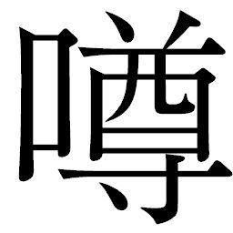
だけが一人歩きして、がんばって抱かれてるのに、逆に嫉
まれてさ。野伏せりどもは、気に入らないことがあると母親を殴ったりするのにさ。僕ね、死のうって言ったんだ。でも母親は死にたくないって。なんでかわかんない。なんのために生きてたんだ」
「そんな話聞かせてどうしようっていうんだ。同情ひこうってハラか」
キクチヨが凄んだ。彼は次第に思い出してきた。姿を変える前にこんな話を聞いたような気がする。だが、ウキョウは手を下ろし、一喝した。
「いいから黙って聞けよ！ いいか、母親はな、野伏せりの暴力のせいで傷ついて、病気になっちまったんだよ！ 村の奴らなんか助けてくれない。貧乏だから医者にもかかれない。死ぬしかないんだよ。最期に、母親は言ったよ。僕を守るためだったっていうんだ。バカじゃないの！ そう言って死んだんだ。お金があったら、こんな目にあわなかったのに。医者にかかることも出来たのに。村なんか出ていくことも出来たのに。わかる？ だから、僕が天主になる意味がある。貧乏の苦しみを知ってるから、みんなを平等にしようとしてるんじゃないか。なのになんで僕を斬るの。僕なにか悪いことした？」
ウキョウの弁舌は時間稼ぎとなった。天主を警備すべく、残っていた近衛兵たちが大挙して飛び込んできたのだ。連発銃を持った彼らはサムライたちを見てすぐさま構えたが、ウキョウは鋭い声で制した。
「撃つな！」
「おめぇはやりすぎた。天下とってそれでしまいにしときゃいいじゃねえか。おめぇの勝ちよ。サムライ選んだオレに比べりゃ、おめぇの方が目
端
が利く。だが、おめぇは出世のために何人殺した!?
」
キクチヨは感情を剥
き出しにして吼
えた。嘘を武器とするウキョウである。真実とは限らない。微笑みが虚実を混
濁
させる。シチロージとカツシロウもウキョウの巧みな言葉に翻
弄
される。キクチヨは意を決して大太刀を振りあげた。
「お前だって人殺しのくせに！ 僕を斬れば、百姓や浪人どもはまた苦しい毎日に戻るだけだよ。世の中変わらないよ！」
「やかましい！ サムライはなァ、刀ァ持ったら迷わねえもんだ！」
キクチヨは怒声と共に大太刀を振り下ろした。
切っ先の鋭さにウキョウの目は吸い寄せられた。いつ下の連発銃を拾うべきか計算していたウキョウに、思わぬ味方があった。
慣性の暴走を続ける都が、地面に突き出した大岩に激突したのだ。岩を粉砕し、船体も大きく左に傾いた。進路が若干変わり、わずかながら激突による制動がかかったものの、都は一向に止まる気配を見せない。
その衝撃は、キクチヨとウキョウをよろめかせた。大太刀は御座船の屋根に突き立ち、ウキョウは勢いにまかせてその場にしゃがみこんだ。踵
の後ろにあたっていた連発銃を拾いあげるとすかさず引き金を引いた。キクチヨの足元から体を、顔面を、銃弾が縫うように突き刺さっていく。ウキョウの反撃をきっかけに近衛兵たちも一斉に銃撃を開始した。
縦横に飛び交う銃弾は、弾き返すこともままならなかった。シチロージが脚を射貫かれて転がった。カツシロウも脇腹を擦過され、鋭い痛みに膝をついた。そしてキクチヨは火花を散らしながら仰向けに倒れ、動かない。目のゴーグルが断末魔のように明滅した。首や手足が作動不良を起こしたように不規則な動きをしていた。ウキョウはシチロージやカツシロウが近衛兵たちの鉄砲の前に動けなくなったのを冷ややかに見てから、おもむろに銃床でキクチヨの顔や体を激しく打ち据え始めた。
何度も、何度も、憑
かれた瞳で叩きつける。
「いいか、機械のサムライは嫌いだ。大っ嫌いだ！ 貧乏も嫌いだ！ 百姓も嫌いだ、アキンドも大嫌いだ！ どいつもこいつもこの僕を虫ケラ扱いしやがって、今度は、僕がお前たちを虫ケラにしてやる番だ！」
憎しみのこもった連打だった。同じように百姓から身をかえたキクチヨは、ウキョウには鏡だったのかもしれない。どちらが満たされた生き方になったのか、それはわからない。だがウキョウは打たずにはいられなかった。
「やめろ！」
「キクチヨ！」
カツシロウとシチロージが叫ぶ。キクチヨは呻
くばかりだった。装甲は顔も胸も叩き潰されて凹み、可動部分はあちこち火花が散っていた。とうとう、キクチヨのゴーグルから光が消えた。命の灯が消えたかのようだった。
キクチヨが完全に動かなくなったのを見届けて、ウキョウはようやく身を起こした。乱れた髪を小指でかきあげ、呼吸を整えると、いつものウキョウだ。目を剥いて絶叫していたさっきまでのウキョウとは、まるで別人のような変わり様だった。
「じゃ、出ようか」
声にも普段の軽さが残っている。助けを求めるように、カツシロウに斬られたサネオミの手が宙を泳ぐのを無視し、ウキョウは近衛兵の一人に持っていた連発銃を渡した。
「出る、と申されましても御座船は」
「外に野伏せりがいるだろ。あいつらに運ばせればいいじゃないか。頭悪いな」
「仰せのとおりに」
近衛兵は恐縮して一礼した。ウキョウは出ていくかと思いきや、倒れたカツシロウの傍に立った。
「君に見せたいものがあるんだ」
ウキョウは懐
から、一振りの白木の
を取りだしてみせた。
るカツシロウの前で、抜刀する。カツシロウはその鍛えに見覚えがあった。かつて浮舟邸前でテッサイに挑み、折られた自分の刀ではないか。亡霊だ、とカツシロウは思った。その刀を持っていた頃は希望に燃えていた。サムライという存在に穢
れなき美しさを夢見ていた。この場でこんなものが出てきたことに、動揺した。
を取りだしてみせた。
るカツシロウの前で、抜刀する。カツシロウはその鍛えに見覚えがあった。かつて浮舟邸前でテッサイに挑み、折られた自分の刀ではないか。亡霊だ、とカツシロウは思った。その刀を持っていた頃は希望に燃えていた。サムライという存在に穢
れなき美しさを夢見ていた。この場でこんなものが出てきたことに、動揺した。「廃品利用したんだ。護身用だよ。刀持つと、自分が強くなったみたいに思うよね？」
そう言うなり、ウキョウはカツシロウの腕を踏みつけると一気に短刀を振り下ろした。右手の甲を刃
が貫く。激痛をカツシロウは堪
え、ウキョウを見上げた。
「カンベエクンはどこ」
「知らぬ」
「あ、そう」
ウキョウはカツシロウから短刀を引き抜くなり、今度はシチロージの左脚を突き刺した。銃創をさらに無残に抉
る。シチロージも脂汗を噴きだし、歯をくいしばる。
「鉄砲と刀、どっちで死ぬのが苦しいのかなあ？」
短刀を引き抜いたウキョウは楽しげに二人を交互に見た。その間に、近衛兵たちは御座船発進口を開いていった。外の光が差し込んできた。
「そうだ、キララクンはどうしてる？ このまま進めば都はカンナ村を潰しちゃうよ。ここを出たらキララクンを助けに行かなくちゃね。僕の連れてきた女の子たちみんな死んじゃったからさ、天主には正室がいるものね」
素晴らしい思いつきだと言わんばかりにウキョウの声は弾んだ。
「御
天
主
様
！」
近衛兵の緊迫した声がウキョウの背後で上がった。発進口は既に開ききっている。野伏せりが近づいてきている飛行音もする。ウキョウは勝ったも同然だった。なのに、この怯えおののいた声はなんだ。
「なんだよ、うるさいな」
振り返ったウキョウは、光に目をこらした。そして、我が目を疑った。発進口の向こうに伸びた甲板上や大
店
を崩して、紅蜘蛛や雷電が死屍累々と折り重なっていた。
紅蜘蛛が鉄砲を向けているのは、カンベエだった。キュウゾウの刀で紅蜘蛛を威
嚇
しながら、顔はウキョウの方を向いていた。
「御
天
主
様
。御無事でしたか」
赤目の紅蜘蛛は抑揚のない声で言った。空を飛んでいる野伏せりの数は少なくなっていた。カンベエが外でずっと斬り倒し続けていたのだ。タノモの引き連れてきた残党も今はもうわずかだが、圧倒的な数を誇っていた野伏せりたちは彼らの活躍で壊滅状態にあった。正面衝突は双方共倒れの様相を呈し、爆発が相次ぐ都の爆煙が視界を遮っていた。
カンベエは御座船に向かって歩き出した。外に向けたキュウゾウの刀はそのまま威嚇に使っている。室内に入ってくると、カンベエは御座船に突き刺した自分の剣を引き抜いた。傷だらけであり、着衣は血にまみれたカンベエの姿と瞳に、近衛兵たちは竦
んだ。再び形勢は逆転した。カツシロウとシチロージは銃を蹴り上げた。近衛兵たちは咄
嗟
に脇差を抜いたが、剣と槍を拾いあげたカツシロウとシチロージの敵ではなかった。
「待って。ちょっと待ってよ。米や女たちを攫
っていったのは全部前の天主じゃないか。悪いのは全部天主だよ！」
言葉の魔術がはじまった。短刀を捨て、身振り手振りを交えながら、ウキョウは既に息絶えているサネオミを指さした。
「ほら、あいつ！ あいつが悪いんだ。あいつら、百姓や街の連中からうまい汁を吸いたいばっかりに僕を天主に仕立てて、自分は裏にまわってやりたい放題なんだ。カンナ村を百姓にあるまじき武装をしたからって、潰そうって言ったのはあいつなんだよ！ ほんとにいいの!?
僕を斬ったら、一生逆
賊
だよ！」
「構わぬ」
カンベエはついにウキョウに斬りかかった。肩口から胸へ、カンベエの一刀がウキョウを斬撃した。血が噴きだし、傷口に手をあてたウキョウは悲鳴を上げて倒れこんだ瞬間、しぶとくも短刀を再び拾いあげた。だが、その手が横から伸びてきた機械の腕にがっしりと押さえつけられた。
「ひっ......！」
「しつっこいンだよッ！」
目覚めたキクチヨはウキョウを抱きかかえると床を蹴り、外に道連れにした。
「キクチヨ！」
「キクチヨ殿ォ！」
カンベエは外に身を乗りだした。激しい風が砂を巻き上げ、キクチヨとウキョウの姿は見えなくなった。紅蜘蛛が好機とばかりに鉄砲を向けてきた。カツシロウは反射的に床を蹴っていた。大上段から一刀のもとに斬り伏せた。
「先生、キクチヨ殿が！」
「ウキョウはキクチヨに任せる。カツシロウは野伏せりの始末だ」
「はい！」
「カンベエ様、傷は」
「大事ない。シチロージ、我らはつばさ岩に達する前に都をすべて切り崩す」
「承知！」
サムライたちは三方に散った。
揉み合うウキョウとキクチヨは、速度を徐々に落としていく都から取り残されるように、巻き上がる砂煙の中を落ちていった。地上に激突すればいかにキクチヨといえど無事ではすまない。彼はそれでもいいと思った。ウキョウを生かしておけば、きっとまたたくさんの人が死ぬ。
撃たれ続け、傷ついた体には墜落の加速はこたえた。意識が遠のきかける。突然、キクチヨは柔らかなものに衝突した。落下はとまった。驚いて体を起こすと、そこは運搬船の荷台ではないか。荷物の上で、受けとめてくれたらしい。都が減速しはじめていることと、リキチが全速で飛んできたことで追いついたのだ。
「おっちゃま！」
「キクチヨ様！」
コマチとキララの声は心配そうだった。不意にキクチヨは、胸に激烈な痛みを感じた。ウキョウがしがみつき、短刀で胸を抉ってきたのだ。火花が全身を包んだキクチヨは、倒れた。ウキョウは笑っていた。裏返った声で笑い続け、酔ったように濁った瞳でキララを見ると、キクチヨの胸から短刀を引き抜いた。
「キララクン。みーつけた。僕を助けに来てくれたんだね」
耳にまとわりつく声だった。血まみれのウキョウはキララを抱きしめようとしてくる。操縦しているリキチは手を離すことも出来ず、「水分り様！」と叫ぶだけだ。キララはコマチとサナエを守ろうと、毅
然
と立った。
ふらつくウキョウは帽子を失い、髪を振り乱して短刀を提げた姿は既にこの世のものではなかった。
「キララクン――」
「コマチ、サナエさん、さがって。私が守ります」
「守る、だって......。気持ちの悪いことを言わないでよ、キララクン！」
ゆらいだ体で、短刀を振り上げた。キララはその腕を摑んだ。もはや力の残っていないウキョウの手から短刀を取り上げ、反射的に胸を貫いていた。
堕ちる――。
「姉様！」
「水分り様！」
コマチとサナエが同時に叫んでいた。
キララは力の限り、短刀を押し込んだ。ウキョウはのけぞって短刀を摑んだ。
「なんてこと、するんだ、キララ、クン！」
叫んだウキョウの体が、羽交い締めにされた。火花の散る体でキクチヨがウキョウを荷台の縁
までひきずっていく。紅蜘蛛がそのさまを見るなり、飛来してきた。
「御天主様！ お探ししましたぞ！」
キクチヨはウキョウを外に突き落とした。紅蜘蛛は受けとめようと腕を伸ばした。キクチヨは大太刀を摑むと、ウキョウを追うようにして宙に舞った。ウキョウを両手で捕らえた紅蜘蛛を真っ二つに切断した。
ウキョウの顔から表情が消えた。キクチヨの光るゴーグルを最期の瞬間、見た。同時に、紅蜘蛛の爆発に包まれた。爆散する機械体とともに、ウキョウの体も散った。爆風に
られたキクチヨを、再びリキチはすくい上げた。
「キクチヨ様、大丈夫だか！」
「まだ動ける、心配すンな！」
大太刀を持って立ち上がったキクチヨの体を見上げるコマチは、もう涙で見えなくなっていた。
「おっちゃま、痛いの？」
「いてぇもんかよ、コマチ坊ン......。なあ、ねえちゃん。やっちまったな」
キクチヨは、人を刺したキララを見つめた。キララはサナエの腕に抱きとめられ、興奮状態で息をついていた。唇が震え、瞳が揺れていた。
そして、振り子は光を失っていた。
キクチヨは体中を軋
ませながらリキチに言った。
「リキチ、もっと速く行けるか。都の真ん前、つばさ岩まで連れてってくれ！」
「へいっ！」
都の中を、カンベエとシチロージはひたすらに斬撃していく。壁を、床を、建物すべてを、爆発ではなく解体するように刃をふるっていく。カンナ村への爆発だけは避ける。そのためだけに、徹底的に斬り刻んでいく。
大店の屋根に上がったカンベエは、近づいてきたつばさ岩に運搬船がまわりこんでいくのを見た。
運搬船の動きは村からも双眼鏡で観測できた。
「キクチヨ様だ！」
双眼鏡を覗いていたヨヘイが声を上げた。
「なして、止まらねえ。こっちさ来るだで！」
マンゾウは頭を抱え、目を強く瞑
って蹲
った。ゴサクは鉄砲隊を率い、都が少しでも崩壊できるようにと撃ち続けていた。
つばさ岩までやってきた運搬船から、キクチヨは大太刀を持って地面に飛び降りた。キュウゾウやカツシロウの激闘の跡をとどめて、紅蜘蛛や雷電の屍や装備が散乱していた。
キクチヨは痛む体をひきずり、まだ使えそうな斬
艦
刀
に目をつけた。
持ち上げようとすると、運搬船からコマチが元気な声をかけてきた。
「おっちゃま、がんばるです！」
「おお！ 任せときな！」
「御武運を！」
キララの必死な瞳に、キクチヨは腕を振り上げて応える。
「いいから早く行け！ リキチ、出せ！」
キクチヨは運搬船の装甲を叩いた。リキチと視線を交わした。頷
いたリキチは、運搬船を反転させた。
キクチヨは大太刀を地面に刺した。さながら、ここは俺の陣地だ、俺の旗だといわんばかりに、大太刀の峰を背にした。踏ん張ろうと足に力を入れると激痛が脳天まで突き抜ける。
「ぐううっっっ！ 田圃
にゃあ、一寸たりとも近づけねぇからなァーッ！」
隻
腕
で、キクチヨは斬艦刀を摑み上げると最大の白煙を噴きあげ、渾
身
の力を全身に込めはじめた。
キクチヨは斬艦刀を轟然と持ち上げた。吼える。腹の底から吼えた。斬艦刀に超振動が生まれた。近づいてくる都を真っ二つにして、崖下に押し流そうというのだ。
空は爆煙ばかりで覆われ、野伏せりの姿は見えなくなっていた。それでもカツシロウは野伏せりを求めて大店の屋根の上を走る。カンベエたちの斬撃の影響で、都は徐々に崩れおちはじめていく。足場が崩れる。爆煙を裂いて襲いかかってくる野伏せりを斬り捨てると、都に激突して爆発を起こし、崩壊に拍車をかけた。
艦首まで斬撃を続けたカンベエとシチロージが振り返ると、亀裂が船体を突き抜けていくのが見えた。建物は崩れ、砲塔は主機関を失って機能しないままに部品が外れていく。都が通過した後には、無数の鉄の瓦
礫
が延々と続いていた。
速度を落としながらも、軋みが空気を裂く。そして都は、キクチヨが待ちかまえる場所へとまっすぐに突き進んできた。
「気張れオレ様！ オトコを見せろ！」
キクチヨの怒号は、ついに斬艦刀に激突した都の爆発音と閃
光
に呑み込まれた。
斬艦刀の強烈な超振動による斬撃は、カンベエたちによって斬り込まれた亀裂の爆裂を誘発した。破壊の衝撃と、激突による摩擦熱が作りだす白煙が辺りを包み込んだ。熱風がおこり、それは村にまで達した。
前のめりだった都が真っ二つに砕けていき、その二つは爆発の赤黒い炎に包まれて火
達
磨
になっていく。いち早く砂地に飛び降りたカンベエとシチロージは、紅蜘蛛の装甲に隠れるようにして身を防いだ。
都は鉄と炎の塊
になりながらまだ止まらない。しかし、勢いと図体の大きさを削
がれた姿になりながら、崖下へと落ちていく。
凄まじい放熱がキクチヨを包んだ。吼えた。吼えて吼えて、一歩も退かない。長年共に戦い続けた大太刀を守り神のように背にして、キクチヨは斬艦刀を支え続けた。あまりの熱に装甲が溶ける。逃げない。村が勝ったと見届けるまで、絶対に動かない。この足がとどまる大地は、うまい米を育み、野菜を育て、花を咲かせる。俺は百姓だ。俺はサムライだ。
炎に包まれた視界の中で、キクチヨはカンベエの声を聞いたような気がする。
――おぬし、まことサムライか？
「おう、どうだ、見ろ！ オレ様はサムライでござる！」
魂が叫んだ。
熱風の次に村に吹きつけてきたのは閃光の圧力だった。村人たちはこの世の終わりが来たかのように呆
然
とし、あまりの光の眩
さにまともに目を開けていることが出来ない。
だが一人だけ、ギサクだけはまっすぐに光を見つめていた。
「捨てろ。鉄砲も、弓矢も......。もう、終わったで」
ギサクの声が合図になったのか、光が収束していく。燃え落ちた都は、霧の海のはるか底で爆発し、炎上の黒煙を天高く噴き上げていた。
つばさ岩周辺は、そこだけが夜のように真っ暗だった。残骸が噴き上げる黒煙が空を満たし、太陽の光を遮っているのだ。重い静寂が支配している。
黒く煤
けた鉄
が、延々と大地を覆っていた。動くものは何もないと思われたが、歪
んだ装甲が突然、跳ね上がった。都崩壊の爆発を避けたカンベエとシチロージが、楯
にしていた装甲の下から出てきたのである。
カンベエの手には己の刀とキュウゾウの刀が握られていた。
シチロージの槍も健在だ。
二人はカツシロウとキクチヨを探して立ち上がった。
後方の瓦礫が動いた。警戒し、得物を構えた二人の前に生き残った野伏せりが瓦礫を跳ね上げて浮上した。
カンベエが踏み込もうとした瞬間、野伏せりの体は巨木のように倒れた。背中が切り裂かれ、火花が走っていた。
倒したのはカツシロウだ。息があがり、目を剥いていた。刀をあらぬ方向に向け続け、意識はまだ戦の中にあるようだ。
「野伏せりはッ！ 野伏せりはッ！」
錯乱気味に周囲を見渡すが、爆煙と残骸の山に動くものは何もない。カンベエはカツシロウの肩を強く抑えた。
「野伏せりはもうおらん！ 都も落ちた」
叱
咤
するような声だった。突如、現実に引き戻されたカツシロウは呆然としてカンベエを振り返った。
「先生......。キクチヨ殿は」
「おっちゃまぁーっ！」
コマチの泣き声が聞こえてきた。カンベエたちはつばさ岩の近くまで走る。
運搬船がつばさ岩の横に着地しており、リキチとサナエも降りていた。
コマチはキクチヨの家系図を大事そうに抱えて、地面を見つめていた。コマチの肩を抱くキララは、辛そうに目を伏せた。
いまだ燃えくすぶる都の残骸の中で、大太刀は地面に突き刺さりながらも圧力の強さを物語って斜めになっていた。熱と圧力のせいで大太刀は若干溶け、不
格
好
に曲がっていた。
だが、持ち主のキクチヨはいない。
大地にめりこむほど踏ん張ったままの、膝から下の両足はそこに確かに存在しているのに。都の放熱はキクチヨを溶かしてしまったのだ。大地に足が残っているのは、彼の百姓とサムライの誇りのあらわれか。ここからは一歩も退かない、刀を持ったら悩まない。そんな強固な意志を、カンベエはキクチヨの足から感じ取っていた。
カンベエはため息をついた。厳しい目で戦場を見渡した。
「......また、生き残ったな......」
「然
様
で......」
シチロージは虚
脱
して、黒煙から垣間見える青空を見上げた。
戦は、終わった。
終章 植える！
産
声
が聞こえたのは、リキチたちがカンナ村に戻ってきてから三日とたたない晩秋の早朝だった。
産まれたのは女の子だった。リキチはニシキと名付け、慈
しんだ。
百姓の子として育てる――。その信念は揺らぐことなく、村の者たちの協力もあってサナエも少しずつ、村での生活に馴
染
んでいった。
サナエの心にも少しずつ変化が表われていた。母親としてなすべきことの多さが、都
での日々を薄れさせている。赤ん坊が産まれたことで村の女たちがなにくれと世話を焼いてくるため、都のリズムとは生活様式があまりにも違うためだ。
激闘が終わったつばさ岩から砂漠地帯にかけて、野伏せりの骸
が延々と続いていた。崩壊炎上した都の爆発音と閃光は遠いよその村や、果ては虹
雅
峡
にまで達した。
が
を呼んだ。アキンドを恨むサムライたちがウキョウを殺した、と。アヤマロが懸念したとおり、カンベエたちは逆賊と呼ばれた。
雪の季節。
カンナ村は雪に覆われる。白い雪は、ひととき、戦
の跡を美しい雪景色に変えてくれる。
村で編み上げたわらじを持って行商に出たモスケとゴサクが、顔を腫
らして戻ってきた。
「まーた喧
嘩
したんか。おサムライのことだな。しししし」
四つのどんぶり飯を盆に乗せたコマチとオカラが、広場を通り過ぎる途中で二人を見つけ、駆け寄って言った。男たちは派手な殴りあいをしたらしく、頰には赤黒い痣
が出来ていた。
「アケボノ村の奴ら、おサムライ様たちンこと悪く言うだで」
「言いたい奴には言わせとけばいいだ」
不満そうなゴサクたちを見て、リキチも近づいてきた。
「だども、みんなひどいこと言うだで。あれじゃ、死んだキクチヨ様たちがあんまりだ」
「いいんだ」
リキチは語気鋭く、言い切った。
「俺たちはおサムライ様がなんで戦したか、知ってる。おサムライ様たちがいるから俺たちは、次の春も田植えが出来る。それでいいだよ。おサムライ様たちに感謝しながら、苗植えるだよ」
リキチは思い出すのか、涙が滲んでいた。
「おっちゃま。お昼ご飯です。食べて下さいです」
コマチとオカラは大きなどんぶりに山盛りにしたご飯を、四つの土饅頭に並べた。ゴロベエの墓の横に、さらに三つの土饅頭が並んだ。ゴロベエの墓標が彼の軍刀であるように、キクチヨたちの墓も同じように作られていた。
ヘイハチの墓標は彼の軍刀だ。てるてる坊主もきれいに洗われて、つないである。
キクチヨの墓標は溶けかかって歪
んだ大
太
刀
。
キュウゾウには二本の刀が。
ヘイハチの亡
骸
はキララが振り子の力で見つけ、キュウゾウの亡骸は村人たちが総出で残骸を探しまわり、ようやく見つけていた。四人は、彼らが守りぬいたカンナ村の土となった。
コマチとオカラは墓標の前で手を合わせた。キクチヨの家系図は今でも水
分
りの家にしまってある。コマチの大事な宝物となった。
生き残ったサムライたちも、リキチたちの厚意で銃
創
による傷を村で癒す日々を送っていた。カンベエ、シチロージ、カツシロウのために急
拵
えながら家が建てられた。キララは毎日通ってきては、彼らの世話を行なっている。その左手には、もう振り子はない。
その日も、キララは水分りの家でカンベエたちの夕
餉
の準備をしていた。戦の後、カンベエとシチロージは以前と同じように接してくれていた。ただ、カツシロウとはほとんど言葉を交わしていない。ウキョウを刺したという話を聞かされたときはさすがにカツシロウも動揺した。その短刀が、自分の折れた刃
で作られたものだったからだ。
「キララや。いいのかえ、水晶をコマチに譲って」
セツが土間に入ってきた。
料理の手をとめて、キララは振り返った。笑顔なのに、以前とはどこか違う。
「婆
様
にも見えているのでしょう？」
「濁り水がな」
「私の、罪の濁りです」
「そうまでして、自分さ追いつめることはねえだで。それとも、これはけじめだか」
キララは寂しげに唇をわななかせたようだった。カンベエへの気持ちとカツシロウへのいたわりの間で揺れ、何かに駆り立てられるように、刃を持った。人を刺した。その鈍い感触は彼女の手にも残っている。奇妙な話だが、この感触を得てしまった今、彼女はそれまでの懊
悩
からどこか解放されたようにも感じていた。
したたかに生きる者たちもいる。
落ちた主機関に目をつけたのはアヤマロと式
杜
人
だった。ウキョウの死後、アヤマロは式杜人と手を組んだ。都という仕組みを失ったアキンドと地下世界の住人たちは、新たな仕組みを作り上げようとしていた。蓄
電
筒
の燃料にも使われる主機関の周囲には足場が組まれ、巨大な発電プラントの建造が始まったのだ。他の都ともかかわりを持つか否かはこれから次第。都の崩壊は、ウキョウが放った浪人たちや百姓たちの新体制へ向けた結束を結果的に強くした。ウキョウが存在し続けていれば世の中は彼の強大な怨
嗟
のもとに徐々に均衡を欠いていたかもしれないが、彼がいなくなったことで、誰もが前向きに生きる術
を摑んだ。
世の中は戦後という軛
から脱しようとしている。
ウキョウも、そして逆賊の誹
りを甘受するカンベエたちも、その礎
になったのかもしれない。
雪解けの季節。新しい一年がはじまる。
ギサクは田植えの日を決めた。村はその日に向け、準備に入った。春の到来に村人たちの心は弾んだ。
だがそれは、サムライと百姓たちにとって別れの日が近いことを意味していた。
村が元の生活に戻るまで――。カンベエはそのときこそ、仕事の終わりだと考えていた。
棚田に水が引かれ、村人たちは忙しい日々を送りはじめた。
田植えの日に、カンベエたちは村を去る。
いつしか、カンベエたちの存在は村人にとって大きな精神的支柱になっていた。だが百姓とサムライは相
容
れぬもの、いつかその日が来るとわかっていた。別れを惜しむ村人たちは、リキチの発案で盛大に宴会を開いた。村祭りに匹敵する規模で、村人たちはサムライたちのためにとっておきの酒を振る舞い、語り合った。しまいには突端の四つの墓にまで繰り出し、墓の前で酒盛りする始末だった。
興の乗った村人たちが墓標となった刀に酒を滴
らせた。雫
が土に染み込んでいく。
見つめるカンベエ、シチロージ、カツシロウには、いつしか築きあげられていた百姓とサムライの信頼と、距離の近さを見せられたようで胸が熱くなった。
その、深夜。
カツシロウは旅支度を整えた。村は宴
のあとで寝静まっている。
誰にも何も言わないつもりだった。だが、旅立つ前に彼は土饅頭のもとにやってきた。死せる者たちに、一言。心の中で語りかけたかった。
――ありがとう、と。
蒼白い月明かりに照らされていると、その光の中に一人ひとりの姿が浮かび上がってくるようだった。カツシロウは黙
祷
を捧げた。キクチヨ、ゴロベエ、ヘイハチ、キュウゾウ。自分が手にかけてしまったキュウゾウの魂は、彼が生涯背負い続けるべき疵
となった。
疵。カンベエがことあるごとに言った言葉。身をもって疵という意味の持つ重さを、カツシロウは知った。
誰が先に死ぬか、それだけのこと。戦場では感傷は許されない。あれほど立ち合いを望んでいたキュウゾウの死を前にしても、揺らぐことなく仕事の完遂のみに走った師に、カツシロウは憧れの目だけで見ていた自分を恥じた。サムライは人を殺す商売だ。ときとして戦場では、友さえも殺す。私が憧れたサムライとは、かくも恐ろしく、ゆえに師は、覚悟と言ったのか。
カンベエと出会ってからの日々に、思いは尽きない。男たちとの出会いが、カツシロウの太刀筋を変えた。そして、もう一つの大切な出会いがあった。
背後に足音を感じて、カツシロウは振り返った。
キララはカツシロウの姿を見て、別れの時を知った。
「そなたを守っているつもりが、守られてばかりだったな」
静かに語りかけるカツシロウの瞳はいままでになかったほど穏やかだ。暖かく包み込むような声の響きに、キララは胸がざわめく。つい、癖で左手首を覆い隠すようにしてしまう。数カ月前までは振り子があった左手首。
「共に堕ちると言ってくれた。あの言葉にどれほど支えられたことか」
「私は......」
キララにも伝えたいことがあった。言いたいことが山のようにあった。なのに、胸が詰まって言葉が出てこない。カツシロウの瞳も、言葉も、キララの言葉を遮っていた。
「今の私に、戦場の匂いは感じられるか」
カツシロウは微笑んだ。問いかけながら、刃をふるってしまったキララを気遣っているようでもあった。
キララの瞳から、涙が零
れ落ちた。言葉に出来ない。彼の痛み、苦しみを本当に受けとめてやれただろうか？ 共に、堕ちたといえるのだろうか。この時代、知らなくてもいい世界だったのかもしれない。しかし、カツシロウの心に拭
えない罪と傷を負わせたのは、まぎれもなく自分なのだ。自分は最後まで無力だった。カツシロウがあがき続けるのを、ただ見ていただけだった。
カツシロウは、振り子を外してまで自分を戒
めるキララを愛
おしく思う。彼女を守りたいと思う気持ちは今なお、ある。だが、そうなるためにももっと強くありたいと願う。自分がカンベエのような〝サムライ〟と呼ばれるようになったとき、もう一度キララに会いたかった。
夜陰の中で、影が近づいてきた。草を踏みしだく音にカツシロウが目を向けると、森の中からカンベエとシチロージが現れたところだった。
キララは慌てて涙を拭った。カンベエは若い二人と距離を置き、立ち止まった。
「いくか」
カンベエは短く、言った。カツシロウは頷
いて月光を浴びるように顔を上向けた。
「あの時、なぜ先生が私を五人目と認めたのか、ずっと考えていました。この身に疵が増えるたび、答えに近づいてきたように思います」
カツシロウの苦闘の日々を、カンベエもシチロージも胸の奥で反
芻
していた。
「死を大事と思うな......、先生はかつて私に、そう仰いました。しかし、知
行
も恩
賞
もないこの戦で、命をかけて村を守ったこの方たちこそ、あるべきサムライの姿ではありませんか」
カツシロウは月光に輝く五本の刀を見つめた。
カンベエも刀を見つめる。男たちそれぞれの人生を、共に歩んできた銀の光。カンベエは静かに、カツシロウに問いかけた。
「生き残ったことを、恥じ入るか」
「いいえ。これからも私は、戦
場
に立つことが出来るのです」
晴れやかにそこまで言って、カツシロウはカンベエを見据えた。
「......先生のように」
サムライが帰るところは、戦場だ。キララはカツシロウがもう迷わないことを悟った。サムライは、刀を持ったら迷わない――。
彼女がふと、カンベエがキクチヨに投げかけた言葉を思い出したとき。
カンベエは腰の刀を引き抜いた。使い込まれた
を強固に支える鈍
色
の飾りは傷だらけだ。だがその中におさまった刃は、絶え間ない手入れによって常に、いつでも人を斬ることが出来るように研
ぎ澄まされている。カンベエは刀をカツシロウに差し出した。
を強固に支える鈍
色
の飾りは傷だらけだ。だがその中におさまった刃は、絶え間ない手入れによって常に、いつでも人を斬ることが出来るように研
ぎ澄まされている。カンベエは刀をカツシロウに差し出した。「持っていけ」
シチロージは息を呑んだ。その刀は、彼と出会った日から既にカンベエの腰にあったものなのだ。
サムライが、サムライに刀を託す。キララはこの刀こそがカンベエの言葉なのだと感じた。この刀で、人を斬れ。サムライを目指せ。もっと傷だらけになったとき、見いだすものがある。
カツシロウは驚いたものの、迷わなかった。魂が駆り立てられた。彼は両手で刀を大事そうに受け取ると、深々と頭を下げた。
敵を上げたカツシロウと、その瞳を受けとめるカンベエの間に言葉はなかった。はじめて、瞳だけで語っているようにキララには見えた。
「御
免
！」
カツシロウはカンベエの刀を腰に差した。二本差しになって、彼は歩きだした。その動きを目で追うキララを振り返りはしなかった。
戦場へ。カツシロウは闇の中に溶け込んでいった。
見送ったカンベエは、四つの土饅頭に刺さった刀を振り返った。サムライという道に送りだした若者の背が、刃に映りこんでいるようだった。
翌朝から、村人たちは総出で田植えに出た。
朝日に照らされた水田はやわらかく煌
めいていた。冷たい水に踝
まで浸かって各田圃
に横一列に並んだ村人たちは、苗を手に田植え歌をうたいながら作業を行なう。
男も女も、このときばかりは心を一つにして作業にあたる。マンゾウが、ゴサクが、モスケが、ヨヘイが、シノが。畔
には囃
子
方
役の村人たちが、歌い手役のキララとコマチとともに楽器を持って並んだ。コマチの左手首には振り子が括
りつけられていた。
さくら咲くころ 種は苗床
そろた苗代 みどりにのびた
しろかきすんだら 水を引き
さあさ田植えだ 苗とりだ
たんぼ恵みの お天道さまよ
腕
抱かれて 苗植えろ
一株つかんで 並べてけ
も一つつかんで 並べてけ
育て実りの 米なるまでよ
朝な夕なに 可愛がり
草取り 水あげ 鳥追いよ
いとしや 命の米うまし
畔にはサナエも来て、ぼんやりとリキチが作業するのを見ていた。オカラの背中にはニシキが背負われていた。子守役を買って出ているのだ。いつもの人形はあやすために使っていた。
サナエは、まだ
を髪に差すことが出来ずにいた。ところが、田植え歌がはじまってからというもの、忘れていた何かを探るように視線がさまよっていた。
リキチは村での戦闘で肋骨を折って以来、もう治ってはいるものの時折その傷が
く。田植えのために屈
み込んだ姿勢を長く続けていたせいか、その古傷がまた、
きだした。
く。田植えのために屈
み込んだ姿勢を長く続けていたせいか、その古傷がまた、
きだした。 苗を持った手が痛みに震える。胸をおさえて、リキチは立ち往生してしまった。それでも気を取り直して腰を屈めたとき、不意に水に足をつける音がして、リキチは畔を見た。サナエが自分のほうへやってくる。泥水に白い足をつけ、着物が汚れるのも構わずにリキチの持っていた苗を摑むと、腰を屈めた。細くしなやかに変わっていた指が、苗を植えるごとに泥水に浸かっていく。
「サナエ」
屈んだサナエの頭を見たリキチは目を疑った。
がささっているのだ。
「この歌、覚えてる。リキチさんは休んでて」
サナエは笑顔だった。瞳にも生気が蘇
っていた。リキチは笑
みを返した。百姓の笑顔だ。泥水に浸かり、額
に汗を浮かべ、田植え歌を皆と一緒に歌いながら、サナエは苗を植えていく。
その様子を、棚田を見渡せる丘に立ったカンベエとシチロージが見ていた。サナエが田植えをしている。リキチに笑顔が戻った。百姓の生活が、サナエの心を癒してくれたのだ。
――仕事が、終わった。
カンベエは安
した。太陽の輝きを反射する田圃の水を見つめて、言った。
「今度もまた、負け戦だったな」
「は？」
シチロージはカンベエを見た。吹き過ぎる風が、二人の頰を暖かく撫でていった。
杖をつきながらギサクが歩み寄ってきた。
「いや、勝ったのはあの百姓たちだ。儂
らではない」
カンベエは淡々と言った。何の感慨もないように聞こえたが、シチロージは得
心
した。春を迎えた百姓たちの笑顔に勝るものはない。そして今の言葉は、カンベエにとっても満足な結果なのだ。それでいい、とシチロージも思っていた。
「土は、いつまでも残るでな」
カンベエの言葉を裏付けるように、ギサクが呟
いた。老
獪
な皺
を歪めて、カンベエと不敵な視線を交わし合った。〝やるべし！〟その一言ですべてがはじまったのだ。
「御老人。達者で暮らせ」
カンベエは腰に差した新しい刀に、腕をかけた。村での戦闘の後、野伏せりが持っていた刀を集めて村でとっておいたものだ。どこの業
物
とも知れぬが、これから馴
染
んでいくだろう。
カンベエはシチロージに頷いた。出
立
の時だった。
一陣、風が二人の間をすりぬけていく。
ギサクは歩き出したカンベエとシチロージの背中を見つめた。シチロージは蛍屋に帰る、と言っていた。しかしカンベエは、あてはないと言っていた。戦場を彷徨
うのか。ならば、いつかカツシロウと剣を交える時もあるのではないか。
老人はカンベエたちから視線を田圃に向けた。
風が、キララとコマチの髪をそよがせる。何かを伝えられたかのように、姉妹は丘を見た。さっきまでいたはずのカンベエとシチロージの姿はもう、ない。
リキチも、丘の上にギサクだけが立っているのに気づいた。
サムライは去った。
姉妹は顔を見合わせた。寂しげな笑みを交わしあった。きっと、もう会えない人たち。忘れられない人たち。キララもコマチも、ひときわ大きく歌い続けた。
田植えは続く。
百姓たちは踝まで泥水に浸かり、大地を踏みしめ、汗にまみれながら、土と生きている。
風が、舞う。
それは土饅頭に刺さった五本の刀を優しく包み、見守るように立てられた軍旗をはためかせた。
サムライと、百姓の旗。男たちが戦い、生きた証しだ。
［小説］ＳＡＭＵＲＡＩ７ 完
著者プロフィール
冨岡淳広（とみおか・あつひろ）
１９９１年「勇者エクスカイザー」で脚本デビュー。その後、「ポケットモンスター」「とっとこハム太郎」「ビックリマン２０００」「コロッケ！」といった、幼少向け作品から、「剣風伝奇ベルセルク」「ＥＡＴ―ＭＡＮ」などのハード作品まで幅広く手掛ける。シリーズ構成作品に、「ゴクドーくん漫遊記」「グラップラー刃
」「グリーングリーン」「モンキーターン」などがある。また、ＧＯＮＺＯ作品に「ＶＡＮＤＲＥＡＤ ｔｈｅ Ｓｅｃｏｎｄ Ｓｔａｇｅ」「ＦＦ ： Ｕ」「クロノクルセイド」（シリーズ構成・脚本）「超重神グラヴィオン」「ＬＡＳＴ ＥＸＩＬＥ」（脚本）がある。「ＳＡＭＵＲＡＩ７」ＴＶシリーズ全26
話シリーズ構成・脚本を担当。
本作品の全部あるいは一部を無断で複製・転載・配信・送信したり、ホームページ上に転載することを禁止します。
本作品の内容を無断で改変、改ざん等を行うことも禁止します。
また、有償・無償にかかわらず本作品を第三者に譲渡することはできません。
［小説］ＳＡＭＵＲＡＩ７ 第七巻
発行日 ２０１４年１月18
日
著 者 冨岡淳広
制作協力 株式会社ゴンゾ 笠間寿高
企画協力 深谷精一
発行者 赤井 仁
発行所 ゴマブックス株式会社
〒１０７‐００５２
東京都港区赤坂８‐５‐40
ペガサス青山７１０
(c) Atsuhiro Tomioka
(c) ２００４ 黒澤明／橋本忍／小国英雄／ＮＥＰ・ＧＯＮＺＯ